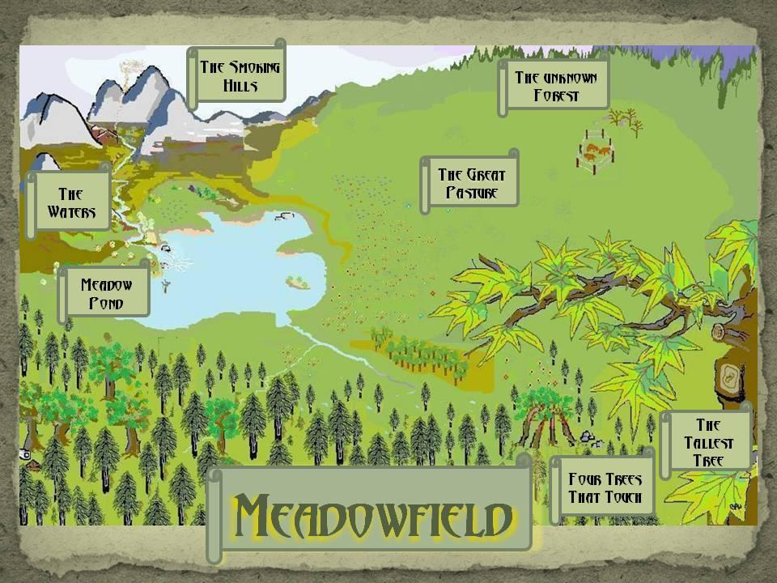

Copyright © 2013 by Bradford P. Ward
All rights reserved. This book or any portion thereof may not be reproduced or used in any manner whatsoever without the express written permission of the publisher except for the brief quotations in a book review. The characters and situations are products of the author's imagination. Any resemblance to actual events or persons, living or dead, is entirely coincidental.
Cover design by Bradford P. Ward.
Edited by Alison Kemp
Printed in the United States of America.
Visit www.BradfordPWard.com.
First Printing, 2013
Meadow Pond Publishing
Tampa
To my wife, Diane.
Your faith and love rekindled the writing of my childhood.
You insisted I write; you angered when I didn't; you encouraged me when I did.
And to my son, Dana.
Your laughter is the light of these pages.
Chapter 14: Grand Daddy Long-Legs
Chapter 24: Waiting at the Rail

Somewhere across the expanse of a cool awakening sky, a low monotonous buzz wound its weary way through the misty woodlands that stood at the edge of a land called Meadowfield. The buzzing sound wandered through the dwindling shadows of the trees. The gloom of suntime's end was fading. Streaks of color flickered, and finally poured down from the distant hills.
The breaking light revealed the wings of a single worker honeybee. She buzzed through the trees, spiraling in and out of branches, stopping only to admire her reflection in pools of dew gathered in the crimson leaves. Now and then, a leaf would fall and the bee would follow it toward the ground in a casual game of chase. Then she would fly up, rising high, buzzing away from the hive she left in the darkness of the forest.
Meanwhile, down on the ground, tucked beneath a damp decaying leaf, lay Cockroach. He was taking a well-deserved nap. He had foraged all suntime's end, looking for scribble skin scraps and other tasty delights to add to his fermenting, germ-infested pile of stinking filth.
He was proud of his pile. It grew bigger and better with every foraging trip. There was almost always some new, filthy item to add. However, his last trip had not been successful. Not one morsel of mold did he find; therefore, he was in a particularly ugly mood. That annoying buzzing sound in the trees wasn’t helping either.
He tried to ignore it, but the more he tried, the louder it became. And the louder it became, the madder Cockroach grew. Finally, when he decided he could stand it no longer, he exploded in a rage. "You yellow banded busybody!" he shouted as he flung back his leaf-cover. "I suppose you have nothing better to do than buzz over me. And right at suntime too! Do you hear me?” he screamed, shaking his clenched tarsal in the air. “Do you hear me?"
Worker 1200, as she was known by her hive, heard Cockroach's foul ravings, and she tried to ignore him. No dignified member of the Queen's hive would waste time on a pest of such little worth as Cockroach, she thought to herself. It was typical Cockroach behavior. She had heard it all before. This time, however, Cockroach seemed to be taking it a little too far. Worker 1200’s patience was wearing thin.
Then it happened. Cockroach launched the ultimate insult. It hit Worker 1200 like the kick of a katydid.
"Get out of here you cicada killing wasp!"
One of Cockroach's neighbors, in fact it was his only neighbor, was the slippery-skinned Silverfish. Silverfish lived just a cricket leap away in a wonderful, silvery cylinder, which appeared one suntime while Cockroach was off on a long foraging trip. All the commotion startled her from her sleep. She tumbled out of her cylinder, rolled across the mossy ground and landed face first in a pool of dew. The first thing Silverfish saw when she opened her tiny eyes was Cockroach. Never had she seen Cockroach so angry. He was stomping around like a crazy katydid, spinning about in tight, angry circles and using the foulest of language. It was enough to wake the dead ancestors.
"What in the name of Leaping Long-Horns is going on?" demanded Silverfish, shaking the dew from her body.
She scurried to the top of a mossy rock to gain a better view. She had just spotted the worker bee circling above her when she heard Cockroach’s terrible insult. It made her antennae curl.
"Cicada killing wasp," she gasped under her breath. "Now that's one I haven't heard before.”
Worker 1200 was infuriated. She flew high in the air, dipped her wings and came barreling down in a fury. She sliced through the trees like a Beak Beast. Swirling leaves sucked in behind her. She smacked into Cockroach's shell as hard as she could. Cockroach never knew what hit him. He went tumbling end over end across the ground until he landed face first in a cold puddle of water. Groaning and moaning, he wobbled to his feet. Worker 1200 climbed high for another aerial assault. This time, Cockroach ducked. He felt every bristle on his back bend with the buzz-sawing blitz of the dive-bombing bee.
All the while, Silverfish was cheering with delight from her front row seat on the mossy rock. This was certainly entertainment worth waking up for. “Come on Cockroach! You’re not going to take that, are you?” she shrieked. Then she threw back her head and shouted, “Do it again little bee. He can take it! His hide’s as tough as a beetle's back! Swat him again! Oh, how much fun!”
Cockroach ran for cover. He dashed toward the silvery cylinder. Silverfish knew what Cockroach was up to. Before Cockroach could reach her home, she leaped from the mossy rock and threw herself across the entrance to her cylinder.
“Not on your life, Cockroach!” she snarled. “You’re not entering my home under any condition! I don't allow anyone in here, especially you!”
“Silverfish, let me by. I've never seen your home. You've talked so much about it,” Cockroach wheedled.
“Impossible! No admittance. Get away from my door or I'll have you hauled off by a herd of army ants.”
Once again, from out of the trees, came the dive-bombing bee. Cockroach dove to the ground as Worker 1200 swooped by. Cockroach panicked. He started digging wildly under Silverfish's cylinder. Sprays of earth flew in every direction.
“Get out of here! Stop it, Cockroach! What are you doing? You are making a terrible mess.
Cockroach continued digging.
“Cockroach, there's a big digger wasp that lives under there and I hope he stings you good,” said Silverfish, knowing full well that there wasn't.
Cockroach could only think of the angry bee, buzzing furiously overhead.
“Cockroach, just last suntime’s end I saw an eight-legged hairy Web-Spinner crawl under my home right where you are digging,” said Silverfish knowing full well that she hadn't.
Cockroach just wanted to get the last of his body covered before the bee returned.
Under her breath Silverfish said, “Maybe there is something under there I don't want you to see,” and she crawled up close to Cockroach to peer into the ever-widening tunnel.
Suddenly Cockroach lurched backwards. There was something stuck on his back leg. He shook it in the air as he pulled his body out of the burrow.
“Scribble skin. Sticky scribble skin! Sweet sticky scribble skin!” exclaimed Cockroach as he freed himself from the crumpled up red sheet. “What is this doing here? This is mine!”
“Oh nonsense, Cockroach. That's probably been there...”
“You took this from me!” interrupted Cockroach. “You were hiding it from me. Buried, right here!”
“Now how do you know that belongs to you? It could...”
“You even chewed part of it off. See here. I spent three suntimes learning the scribble shapes and you've chewed two of them off!”
“Cockroach, I think you’re confused. Why, I've never even...”
“I remember the first one was shaped like a beetle grub... all curled up. Just like this.” Cockroach scratched out a shape in the dirt that looked like: C. “The last one looked like a branch. Just like this.” And he scratched out a shape that looked like: Y.
“There’s only three left now,” Cockroach said. He pointed to the three shapes on the red scribble skin spread on the ground. They looked like this: A... N... D.
“Cockroach, please. Such things can be resolved, humm... peacefully. Quite peacefully, I am sure.”
Cockroach's wings began to rattle in anger and his antennae whirled and twirled. His beady eyes bulged out of his head. He looked angry enough to rip poor Silverfish to smithereens. But he just spun about in tight angry circles, stamping and stomping from one side to another. “Thief! That's it! You're a thief! I live next to a thief! A scaly scoundrel. A scribble skinning thief!”
“Oh pleeeease, Cockroach. Don't act so righteous,” sighed Silverfish, rolling her tiny eyes. “I can remember more than one act of burglary you pulled on me! Like the time you were caught peeling the scribble skin off my silvery cylinder.”
“Oh! So you're going to bring that up again? A piece so small it couldn't have fed a Wood Louse?”
“Yes, and the only reason you didn't take more is because I heard you scratching and scraping on the cylinder. You ran off like a coward and you have yet to admit your guilt!”
“No. And I won't. And I wonder how many more of my tidbits you have hidden under that cylinder of yours!”
“That you will never know. Besides, I'm sure you have just as many of my things in your stink pile.” She smiled smugly.
On and on the bickering continued. Brutal and bitter. Vile and venomous. Loud and lengthy.
The sounds of their shouts carried into the trees, to where Worker 1200 sat and watched the contest unfolding below her. How vulgar. How uncivilized they act, thought Worker 1200. I wouldn’t be surprised if they've forgotten all about me. Such short attention spans.
Worker 1200 looked down at her throbbing back leg. It was soaking in an icy pool of water held in the cupped edges of a leaf. Grimacing with pain, the bee leaned back on the branch and raised her injured leg to inspect the damage. The edge of the silvery cylinder had left a nasty red mark across her leg. Lousy luck, thought Worker 1200. I guess I smacked it good. Must have happened on that last swoop. Just caught it on the up-turn. If only I had acted with more dignity, I would never have done something so foolish. I shouldn’t let such a primitive creature... dare I say it... bug me.
Gently, the injured bee lowered her leg back into the icy bath. She closed her eyes and started thinking. Duties! So many duties yet to complete. How will I ever finish them? She was terribly worried. How can I do anything with an injured leg? She had so much work to do before The Great Cold arrived, and with the coming of the Great Cicada, there would be even more work. Ahhh yes. The Great Cicada, she thought. What an event that will be!
She remembered the Queen calling all the workers and drones together for the big announcement. 'A Grand Ball for all the bug-fellows of Meadowfield,’ she had said. ‘A gala. An event grander than anything Meadowfield has ever seen. All Meadowfield will honor the emergence of the Great Cicada, the oldest and wisest bug-fellow in the land. He'll emerge from his underground tomb after seventeen Great Colds and seventeen Warming Times and he will reign over all of Meadowfield. Never will the pollen run so sweet and the trees grow so green.'
Yes, it will be something to behold, thought Worker 1200. But the work! All the endless suntimes of preparation! Simple pollen and nectar collections will seem like nothing compared to this. There will be entertainment to organize, food to prepare, and the Queen will probably keep me working right through all the festivities! Worker 1200 sighed. “Ohhhhh,” groaned the bee, wrapping a wing over her eyes. “It hurts just to think about it.”
While the quarreling continued below, she remained stretched out on the limb; a leg numb with pain and a mountain of responsibility looming over her head. For the moment, all she could do was moan.
“Ohh... ohhh... Oooww... waa!”
The bee dozed off for just a second, but she suddenly sat up, wide-eyed with a start. She had heard a voice--a very deep, foreboding sound. She wasn't sure what it said, if anything. She glanced about frantically, but could see nothing. Again, the voice repeated.
“Hummmm. Oh my, yes. My brothers and sisters would love to have your body crunching between their jaws. A delightful meal, little worker bee.”
Worker 1200 knew the voices of her enemies. She had to if she intended to live to the next meadow flowering. She knew the hissing voice of dragonfly, but the voice she heard was nothing like his. Nor was it the sickening sound of the horrid robber fly, who patrolled the open meadow. It was unlikely he would venture this deep into the woods. Could it be the voice of the bully wasps? No, this voice didn’t make the grating sound of grinding wasp jaws. Fluffy Beak Beasts, like those she saw one suntime ripping an unfortunate band of grasshoppers apart, crossed her mind. They could be louder than a chorus of katydids and meaner than a hornet’s nest. She could still hear their cackling. But this wasn’t a any of those.
So whose voice was it? Worker 1200 strained the thousand lenses of her eyes hoping to see movement in the leaves. She studied every part of the branch she sat upon.
“Thou dost not see me, dost thou?” the deep voice finally spoke again.
Worker 1200 spun around in confusion.
“I really never thought to be blessed at this hide and seek game. My brothers and sisters were always far better than me.”
This intruder is not going to get the best of me, thought Worker 1200. She felt the little stinger at the base of her abdomen tingle. She would use it if she needed to.
“Tell me, dost thou really not see me?”
“No I don’t!” shouted the frustrated bee. “But come out of your hiding place and I’ll poke you with my stinger a good one.”
“But I am not hiding. I am right in front of you. And please do not be upset. I was merely testing my hide and seek techniques on thee.”
“Where are you?” said Worker 1200 suspiciously. “I don’t see anything in front of me but leaves and branches.”
“Lo, just watch. Thou art looking right at me.”
Something did begin to move in front of Worker 1200. A green branch began to bend toward the bee; a green branch that began to look more and more like a gigantic leg mechanically unfolding. Then she saw the movement of a great triangular head high up in another branch. The honeybee gasped when she realized the head was part of the branch... or was the branch part of the head?
“Ohhh. By the Queen’s throne. What am I seeing?”
The frightened bee felt paralyzed. She was looking into the bulbous eyes of the most terrifying creature she could imagine. A great, green creature of enormous dimensions with an upper body held high above a flattened lower body, covered by a pair of leaf-like wings. Folded together in front of the head, a pair of spiny-tipped arms bent downward, then upward and then downward again, in three hinged sections. The powerful body swayed back and forth on four stalking legs; its shiny, triangular head was cocked to one side. The jaws were locked in a menacing grin. They began moving in a slow grinding stroke when the creature spoke again. “Thou must see me now, yes? I had you quite tricked for a while, did I not? So what dost thou think? How did I do?”
Worker 1200 could barely speak. She was still numb with fright. “Wha... What are you?”
“Why, thou hast never seen my kind before?” answered the creature. It cocked its head to the side and shifted its body in the same direction.
“No. No, I don’t believe I’ve seen one of you at any time.”
“Well, now thou hast. But I really wish thou would have tried a little harder to find me.” The creature hesitated as if it was waiting for Worker 1200 to comment. But, as the bee was still too scared to speak, the creature continued. “I am Mantis. Pleased to meet thee.”
“Mantis?” questioned the honeybee. “Pra... Pra... Praying Mantis?”
“Ahh. So thou hast seen one of me after all.”
“No. No. Only heard,” the bee gulped. “Only heard of... of... pra... aaying ma... ma... mantises.”
“Oh. Well I hopest what thou hast heard has all been good. And we prefer the term mantids.”
“Yes, o-of-of course,” she stuttered. “No. As a matter of fact, what I have heard...” Worker 1200 hesitated. “Well, it hasn’t been good. Actually... bad... quite bad.”
“Oh. So thou hast heard all the horror stories too. I just cannot seem to get away from them. A bad reputation doth precede me wherever I go.”
“Well, you do have some quite frightening... habits. Don’t you? I mean...ugh.” Worker 1200’s stomach suddenly felt sick. “Don't... don’t you eat bug fellows?”
“You mean, like thou?”
“Well... now... now,” stammered the nervous bee. “Not me, specifically, you understand.”
“You know, actually there is something I likest much about bees,” thought Mantis cocking his head again.
Oh no, worried Worker 1200 to herself. Here it comes. The bee shut her eyes and buried her head.
“Honey.”
“What?” exclaimed Worker 1200.
“Honey. I like honey,” said Mantis matter-of-factly. “Yes, I have tried eating bees a time or two. The crunch doth turn my stomach. But that sweet taste on the bee--the nectar I thinkest--that was quite delicious. And when I found out how good honey is... Well, who needeth bugs. Just give me honey.”
“What are you saying?” Worker 1200 chuckled in disbelief. “You don’t like the taste of bugs? You, one of the legendary, monstrous praying mantids that devour bees and bugs, but you don’t like them? Or is this a joke? A sick, awful joke?”
“I feel guilty because I have eaten bugs, and now thou art making me feel guilty because I abstain.”
“No. No. Please. Please don’t take me wrong. I mean it’s fine you don’t eat bugs. I mean... you must know... that’s fine with me.”
“Yes, I suppose. But my brothers and sisters would thinkest not. Lo, they enjoy sinking their jaws into a good grasshopper leg, or pulling out bee wings with their teeth. They enjoy it immensely. Even more than playing hide and seek.”
“And your brothers and sisters... would... would they be nearby?”
“Oh, I suppose they are somewhere around, but not nearby. Sadly, we left each other some time ago. Most of them liveth on the other side of the forest. Some dwelleth beyond the meadow and over the hills.”
“You mean the Smoking Hills?”
“Yes, I suppose. If that is what you call them,” said Mantis. “At any rate, I knowest no family that dwelleth here in Meadowfield.” Mantis hesitated. “That is what thou hast proclaimed this place to be?”
“Yes, Meadowfield,” the bee quickly responded. “And so you have no sisters or wing-picking brothers about? I don’t mind saying... I’m relieved to hear that.”
“I miss them greatly,” said Mantis sorrowfully.
“Oh yes. Yes, I am sure you do. I... I didn’t mean that I’m glad you aren’t with them,” Worker 1200 sensed that she may have just insulted the mantis.
“But we had differences,” continued Mantis. “Disagreements on how to liveth a life. We had different things we felt we should do.” Mantis sighed deeply and turned back to the worker honeybee. “Like fix thy leg for one thing. Thine anger can only turn against thee. Thou must learnest to turn thy other cheek. He who casts stones renders harm to no one but himself. Now, let us fix that leg.”
Worker 1200 sat in utter disbelief. She had fully expected to become a meal for this great, green gargoyle but now, Mantis was actually helping her.
Mantis lifted up one of his wings. “I always keepest a little bee’s wax tucked under here with a dab of honey on it. I like keeping some close for those honey urges. I told you I liketh honey. A wax pack around thy leg should keep it straight, and so it will healeth just fine.” Mantis folded his wings back into place and gently lifted the worker bee into his enormous, spiny forearms. With some apprehension, Worker 1200 watched Mantis carefully coat the leg with wax. “Now this shall not hurt,” declared Mantis and he hoisted the bee up to his mouth.
“What are you doing? You are going to eat me! You spread me with honeyed wax and now you’re going to eat me. Oh my Queen! Oh my hive! I’ll never see either one again!”
“Please relax, little bee. Lo, it is the only way I can packeth down the wax. As thee can see, I’ve run out of arms.”
With that, Mantis gripped the bee with his forearms and placed the injured leg between his jaws. Ever so gently he applied the necessary pressure to compress the wax firmly around the leg. Then he lowered the bee down to the branch.
“That was not so bad, was it?”
Worker 1200 didn’t answer. She had passed out cold.
The first freezing suntime’s end came to Meadowfield quite unexpectedly. It followed a drizzly suntime that kept most of Meadowfield indoors. It was so dreary, the Waterboatmen races across Meadow Pond had to be canceled. It was so miserable, the honeybees stayed boxed up, bickering and complaining, in their cramped honeycomb. It was one of those suntimes only a Cockroach could like.
Actually, it wasn’t the weather that Cockroach enjoyed. He just seemed to sleep well with the gentle drippings on his leafy covers lulling him to sleep.
“Drip....
Drop...
Dribble-dreep,” the drips seemed to say.
“Dropping into deeper sleep.
Pitter...
Patter...
Pitter-Pat...
Deepest sleep is where it’s at.”
Cockroach was fast asleep when the freeze started moving in. He never knew Meadowfield could get so cold. Had he known, he would have slept on top of his stink pile. The heat of the rotting compost could have warmed his belly up there. But, as luck would have it, he had decided to sleep on the bare ground.
The rain stopped by suntime’s end. The gray skies slid away and layers of clear, cold air rolled in. Icesticks formed on the branches. The ground grew hard and frosty.
With a shiver Cockroach woke, but he couldn’t move. He was frozen to the ground. “Oh no!” chattered Cockroach. He pulled and tugged until his legs came loose from the ice. He pushed his belly off the frozen earth. “Brrrr. That could have been a terrible mess. I could have been frozen!” exclaimed Cockroach. He started to hurry off, but his head jerked backwards and he hit the ice with a body slam. He was still stuck. One of his antennae was frozen deep in the ice. Cockroach began pulling wildly, first one way and then another. He spun and twisted around his tethered antenna. He slipped over on his back and began sliding about in circles. His six legs thrashed about in every direction as he spun helplessly on the ice. He rolled to his belly, caught his breath and began racing around in a panic again, going nowhere and gaining nothing. He was in a dilemma indeed.
“If you yank much harder you’re going to rip that thing right out of your head.” It was Silverfish, just heading off for her suntime’s end forage.
Cockroach tried to roll his head around to look at Silverfish, but Silverfish was on the same side as the attached antennae and Cockroach couldn’t twist his head in that direction.
“Crawling crickets! I’d say you’re in a sorry situation. But no need to worry, Cockroach. That ice ought to thaw out in a suntime or two.” And Silverfish crawled up beside Cockroach and whispered, “That is... unless it never warms up in time.”
“Don’t make fun of me! That’s what you’re trying to do. Get me out of here Silverfish! Get me out of here right now!”
“Now Cockroach, you could at least say please.”
Cockroach pulled hard at the antennae in anger. “Silverfish, you’re making me mad! You just get me loose!”
Silverfish walked to the other side of Cockroach. She couldn’t help but giggle when she looked into Cockroach’s miserable face. “Well, this could take some doing,” said Silverfish, assessing the situation. She inspected the antenna buried in the ice and gave it a sharp tug.
“Ow!” shrieked Cockroach.
“My dear Cockroach,” started Silverfish. “You know my services are not free. I mean, you can’t expect me to help you out for nothing!
“What do you want?”
Well, let’s see, thought Silverfish. She walked around to the side where Cockroach couldn’t see her and thought for a very long time. “Dinner,” she said at last. “I want you to fix me a magnificent dinner. And I want you to bring out the best of your tasty tidbits. The ones you’ve probably been saving forever. I’ll bring a couple of glowworms and we’ll make it quite fancy. We’ll set ourselves up on the Old Stump and I’ll stuff myself silly.” Silverfish crawled around in front of Cockroach and pressed her face right into Cockroach’s eyes. “And then... then we’ll talk,” she said.
“Talk?” Cockroach didn’t like company, he didn’t like sharing food and he especially didn’t like conversation. “Talk? Talk about what? What do we have to talk about?”
Silverfish smiled to herself. Ever so slowly, she inched her way closer to Cockroach. Then, getting right beside Cockroach’s ear, she whispered, “Loomers.” Then again, slowly stretching out the middle vowels, she repeated, “Looooooooomers. We’ll talk, and you can tell me all you know about the Loooooooomers.”
“Loomers? What do I know about Loomers?”
“Plenty.”
“I know nothing about them. Never even heard of them.”
“Bah! Now I know you’re lying.”
“Well, maybe I’ve heard of them. I suppose everyone has heard the rumors. Loomer Rumors. But I have nothing to add to them.”
“Well, then I’ll see you when you thaw! That is, if you ever do.” And Silverfish began to walk away.
“Wait!” Cockroach leaped up. His frozen antenna jerked him and he fell flat on his back. “All right. All right,” he said thrashing his legs in the air. “Dinner at Old Stump, and we’ll talk. We’ll talk about the Loomers. Now get me out of here. Get me out of here right now!”
Five suntimes had passed since Silverfish freed Cockroach. It had been a most difficult task—and dangerous too. Silverfish tricked a Fluffy Beak Beast into driving her beak through the ice, breaking Cockroach free. She assured Cockroach the plan would work, although Cockroach never believed her. It had taken all suntime’s end for the Beak Beast to wake and poor Cockroach nearly froze to death. The whole incident was terrifying and Cockroach was certain he would suffer fright dreams forever. At any rate, the frozen air had vanished as quickly as it had arrived, and it was now time for Cockroach to pay his debt to Silverfish.
The dinner convened as planned on the Old Stump, several cricket leaps from the back of Cockroach’s stink pile. It was a lovely suntime’s end with a slight crisp breeze. Silverfish arrived just before dark, and positioned herself on a slab of shelf fungus jutting out from the edge of the stump. Cockroach was busy digging through his stink pile. He was selecting the cuisine very carefully. He was looking for tidbits that may be acceptable to Silverfish, without pulling out his finest gourmet treasures.
“I hope you’re bringing out your best, Cockroach,” Silverfish sang out.
I’d rather die first, thought Cockroach to himself.
Cockroach struggled to haul the tidbits from the stink pile. He wrestled them up the side of the Old Stump and dumped them down in front of Silverfish. Silverfish caught a red berry rolling from the pile. She leaned forward to inspect the food. “Humph,” she uttered. Then, to get a better look, she placed two glowworms in front of the pile and began to sift through it. Cockroach sat quietly to the side just beyond the light of the glowworms.
“Glowworms, what do you think?” asked Silverfish knowing that glowworms don’t talk. “Let’s see. Here’s some common leaf mold. Some red berries. I just had red berries last suntime. A little piece of dry scribble skin.” Silverfish sat back. “Honestly Cockroach. Do you really think I believe these are your best tidbits?”
“Well, the others are way down in the stinking filth pile and too much trouble to reach,” snapped Cockroach.
“Well now, Cockroach. Maybe the next time you’re frozen to the ground, you’ll be too much trouble too.”
Cockroach thought about this. He grumbled under his breath. He climbed off the Old Stump and turned reluctantly back towards the stink pile.
“Take your time Cockroach,” called out Silverfish. “Pick out your favorites. Get in there and dig deep. I’ll just wait here and try some of these red berries. We’ll just consider this an appetizer.”
It wasn’t long before Cockroach returned dragging up the next entree. He flung it across the top of the stump. Bits of food flew in all directions. Silverfish found nothing appealing from this second effort, with the notable exception of a scrap of Beak Beast egg.
“Shall we try it again, Cockroach?” inquired Silverfish. “I think you can dig a little deeper than this. I mean, exactly what is your life worth? Surely more than this.” She held up a shredded piece of fruit peel and then flung it into the dark. “Go on now, Cockroach. We’ll just consider this the sample before the main course.”
On his way back to the stink pile, Cockroach could hear Silverfish singing and giggling to herself as she picked through the food scattered across the Old Stump. Cockroach dug through the stink pile and down to his most delicious delicacies. Exotic egg shards. Honey-coated fruit rinds. Sweet sticky scribble skins. And of course, his favorite—the incredibly sweet, pure white, Loomer crystal-cubes. He had two cubes left and he didn’t part with either one until he was forced to make one more trip. He wasn’t pleased. In fact, he was so angry he hurled the crystal cube and the rest of the food at Silverfish and buried both glowworms in the process.
“My goodness, Cockroach. Your presentation is terribly crude,” said Silverfish as she dug the glowworms out from under a honey-coated fruit rind. “But I must say you’ve brought out a delicious main course. Hummm... delicious,” she said tasting the sweet, white cube. “What is this wonderfully sweet thing?”
“Crystal cube,” grumbled Cockroach under his breath.
“I’m sorry Cockroach. I didn’t hear you.”
“Crystal cube!” Shouted Cockroach. “Loomer crystal cube. And it’s my very favorite treasure!”
“Oh. Well, I can certainly see why. I’ve never tasted anything quite like it. Why, I may not even have room for dessert.”
Silverfish chipped off an edge of the crystal cube. She rolled it in her mouth and let it melt down her throat, a little at a time. She continued this way until the cube was gone. It was too much for Cockroach to watch. He buried his head in a crack in the stump while Silverfish searched for any pieces of the crystal cube she might have dropped. Convinced she ate it all, she leaned back, full with satisfaction.
“Are you finished?” asked Cockroach with disgust.
“Quite delightful. Wouldn’t you say, glowworms?” The glowworms’ cheeks bulged, so full with berries and fruit rinds they couldn’t speak even if they were able to.
“Now Cockroach,” said Silverfish as she leaned into the green light of the glowworms. “Speaking of Loomers and crystal cubes and Loomer crystal cubes, we still haven’t talked about our subject of the evening. And we must, you know. We must talk.” Silverfish paused. “The subject is even more intriguing to me now that I’ve tasted the sweetness of the cube. We must talk about this. We must talk about that.
We must talk about the...
L-o-o-o-o-o-o-o-o-o-o-mers.”
The frigid cold, which nearly froze Cockroach several suntimes ago, had melted away on a smothering wave of heat. Hot breezes scorched the hills. Everything but the blue-green water of Meadow Pond was brown. How strange Meadowfield appeared. Instead of being covered in soft cold, Meadowfield was baking in a stagnant heat.
From within the hollow of a dead oak tree, Worker 1200 opened the many lenses of her sleepy eyes. All around her, workers were coming awake. All had looks of confusion. They were waking from a sleep that should have lasted right through the freezing days of The Great Cold. “So why are we waking now?” thought Worker 1200 to herself. “It was so cold when we settled into our sleep spots, but now it feels terribly hot! The Great Cold can’t be over already!”
Worker 1200 looked ahead toward the main chamber. It was buzzing with activity. An alarm was being sounded. Could the hive be under attack? A gang of hooligan wasps? A Giant Honey Paw? Or maybe a rival band of bees?
She decided to move forward to investigate. But what was this? Her wings were sticky and her legs were stuck to the honeycomb. All the workers around her were in the same predicament. They were covered with honey. Pools of honey. It was dripping down from the top of the hive. The honeycomb was breaking apart. Waxy chunks hung from the roof of the hive. Some had already fallen.
An excited worker from the main chamber flew to the back of the hive. She whirled and danced and wagged her tail, then raced off to repeat the performance in another part of the hive. Her message was clear. The honeycomb was melting. The late arrival of The Great Cold caught the hive by surprise. It was a fatal error. Something had to be done, if there was still time.
Another worker with another message came into the area. She seemed more composed than the first, but just as determined. Her message was short. “Go to the entrance immediately!”
Dragging ribbons of honey, Worker 1200 and hundreds of other bees charged forward. They gathered like a mounting wave at the mouth of the hive. A signal was given and the bees flew from the oak in a swarm of thrashing wings. They circled the area once, and then disappeared over the treetops.
Immediately, dozens of young workers lined themselves along the entrance to the hive. Facing into the hive, they began courageously beating their wings. Hundreds of wings, beating slowly at first, then steadily faster, back and forth, in and out, whipping a current of air into the hive. But the air wasn’t cool enough to harden the honeycomb. They needed water to cool it; Worker 1200 and the others were heading to Meadow Pond to get it.
Meadow Pond was located in a hollow far below the forest. On one side was a low-lying meadow and on the other, a grassy pasture. Far beyond, where suntimes were born, loomed the mysterious Smoking Hills.
“Leaping ladybugs!” exclaimed one of the workers in the swarm. “Look at the crowd around the pond! Ants everywhere. I don’t even see a place to land! What’s going on down there anyway?”
“Waterboatman races.” said Worker 1200. “See the trails coming across the pond? Maybe the last of the season. Quite a crowd of ants indeed. I’ll see if I can negotiate a landing spot.” And Worker 1200 flew from the swarm and headed down to the pond. She knew the ants would be a problem. They always were. They were arrogant, know-it-alls who kept to themselves until a bug-fellow died. Then they threw themselves all over the pest.
Worker 1200 landed on the tip of a marsh weed. The ants were all around her. This isn’t going to be easy, thought Worker 1200. Other than working themselves to death, the only thing ants enjoyed were the races. “Ants! I am a worker bee from a great hive in the woods,” she began to address the crowd. “Our hive is in danger of collapse from this unusual heat. Our swarm, directly above you, must reach the edge of the pond to collect water to cool our melting honeycombs. I ask... if you could please...”
“Ahh... go stick ya head in wax!” an ant in the crowd rudely interrupted. “You’re blockin’ my view and I got fifteen Aphid ridin’ on the Whirligig to win it!”
The ants pushed and shoved to get a better view. They waved and cheered and sucked honeydew from the ends of Aphids. The Waterboatmen races were in full throttle. “In the lead... and approaching lily pad passage... it’s Whirligig Beetle!” In the middle of the pond on old branch dripping with pond scum, a fat, yellow grasshopper announced the race. “And right behind him is Waterboatman... followed by Backswimmer... Waterboatmen 2, Water Bug and Waterstrider bringing up the rear.”
Worker 1200 saw the water bugs as they came into view in front of her. Their legs thrashed in the water, turning the calm surface into a swirling shower of foam and froth. The ants below her grew more excited than ever. The marsh weed she clung to rocked back and forth with the ringing cheers of the crowd.
“Please! Listen! We must get to the water! Clear an area for us immediately!”
“A-A-A-A-And... Coming into waterweed straightaway... it’s still Whirligig, but Waterboatman is closing fast! It’s Whirligig leading by four cricket leaps... by three... by twooo! Look at Waterboatman! He’s making his move on Whirligig... But look out!
H-e-e-e-e-e-e-ere comes Backswimmer!”
Helplessly, Worker 1200 looked up at the circling bees and thought about her poor hive melting away in the forest. “If this race doesn’t end soon, there’ll be no hive to save.”
“... It’s Whirligig. Waterboatman and... Ba-a-a-a-a-a-ackswimmer coming into the final turn through pond scum curve. But Whirligig is spinning out of control!”
Mercifully, the racing bugs were closing in on the finish line along the near shore. By this time, the yellow grasshopper on the gnarled branch had worked himself into a frenzy. Worker 1200 thought the old fool would come out of his skin at any moment.
“What... a... race!” choked the grasshopper. “It’s Waterboatman and Backswimmer now stroke for stroke! Whirligig Beetle is out of it... It’s Waterboatman and Backswimmer coming into the finish. It’s going to be close... A-N-N-N-ND...THE WINNER IS...”
There was a thunderous roar from the crowd. The racing water bugs drove across the finish line as a wave of water crashed behind them. In his excitement, the fat yellow grasshopper fell off the branch and tumbled end over end into the pond, gulping down a mouthful of water just as he was about to shout out the winner’s name. And then, it was over. Aphids were tossed back and forth as lucky winners collected their bets. Crickets and grasshoppers faced off in a rollicking chorus of dueling chirps and leg snapping stridulations.
Finally, when all the hoopla and commotion settled down, Worker 1200 made a final appeal to the crowd. “Ants! An entire hive is on the edge of disaster. You may be held responsible for its downfall if you refuse to move. We need access to the pond’s water.”
“Listen, bee,” began an ant from the back of the crowd. “You and your water-sucking swarm will have to wait. As soon as Old Yellow Fat gets back on the branch, another race will begin. So, take your swarm and buzz off!”
“Oh yeah? Well, don’t expect an invitation to the Great Cicada Bug-Fellow Ball.” Worker 1200 said coldly. “You’re all off the guest list!”
“Aw, bee. Who cares? We’ve got better things to do anyway. Now quiet down! The final race is about to begin.”
Worker 1200 hung her head. Her antennae drooped and she began to wonder if there would be a Bug-Fellow Ball at all. She was about to fly off when a familiar voice called out from behind a clump of marsh weeds. “Seekest thee the goodness in all those worthy and unworthy. But shouldst thou find nothing, do not fall to despair, for thy heart shall be full.”
“I don’t understand a word you said,” called out Worker 1200. “But I sure recognize your voice, old friend. Where are you? Or are you playing hide and seek again?”
“Oh no. I thinkest we have no time for games now,” said the voice. And stepping out from behind a clump of weeds came the enormous, honey-loving Praying Mantis. “Lo, how fares the leg?” he asked.
“Never felt better” smiled Worker 1200. “You know, I never did get a chance to thank you, Mantis. I believe I fainted. And when I woke, you were gone. I returned to my hive and told all the bees about you, but they didn’t believe me. I really wanted to invite you to my hive so they could meet you.” Then a look of sadness came over Worker 1200’s face. “Now my hive may already be gone.”
“Yes, I know. I overheard thy speech to the ants. They are a stubborn group.”
“That’s putting it mildly.”
“We must work quickly, little bee.” Mantis began to study the crowd around the pond. “What are those creatures over there,” he asked pointing past the noisy mob of ants. “That group of bug-fellows looks more hospitable.”
“You mean the grasshoppers over there? The long-bellied brown pests?”
“Yes, them. Let us see if the grasshoppers will open a spot for thy swarm.”
“I don’t know, Mantis. They like the races almost as much as the ants do.”
“But perhaps, if we ask politely, they will step aside. Let us give it a try.”
Mantis spread his wings and with a powerful flap, powerful enough to blow several ants into the pond, he took to the air. Worker 1200 followed. They landed just behind the group of grasshoppers. The grasshoppers were busy betting on the races and challenging each other to tobacco spitting contests. They never noticed Mantis land behind them.
“Excuse us, grasshoppers, for interrupting,” began Mantis. “But my bee friend here is facing a terrible problem. We are hoping thy may...”
Mantis never finished his thought. The sight of the towering praying mantis lumbering toward them was all the grasshoppers needed to see. In a brown flash of legs, wings and tobacco spit, the grasshoppers disappeared, leaving a bewildered Mantis wondering what had happened.
“It’s you, Mantis,” laughed Worker 1200. “They were frightened of you.”
“But why? I didn’t mean to frighten them. I must apologize to them. But I don’t even know where they went.”
“They’re far away by now. Didn’t you see the looks on their faces? Don’t worry about it. And look. We’ve got our space now, thanks to you, old friend.”
With the grasshoppers out of the way, Worker 1200 directed her swarm down to the pond and they all began to collect water on their tongues. Mantis slipped away unnoticed, into the weeds. It took the rest of the suntime to collect enough water for the hive. The bees were exhausted. Still, Worker 1200 made one more trip back to the pond. She carried a big dab of honey tucked under her wing. She brought it for her friend, the mantis. But when she reached the pond, Praying Mantis was nowhere to be found.
Two suntimes had passed since Silverfish forced an invitation out of Cockroach to sample his tasty tidbits. The tingling sweet taste of the crystal cube still lingered on her tongue. “Sooooo sweet! Sooooo sweet,” she kept repeating to herself. She studied her reflection on the shiny wall inside her silvery cylinder. She licked her antennae and smacked her lips. “Soooo very, very sweet!” She licked her lips some more. “Could there be more of these cubes. There must be more somewhere. Cockroach! I wonder if he even knows what he’s talking about. I wonder if these Loomers really do exist? I wonder.” She stopped and sucked at her antennae again. She tingled at the thought of finding her own crystal cubes. “Mustn’t let Cockroach know if I do find any. Never let him know.”
Silverfish moved to the opening of the silvery cylinder and looked out into the twilight air. A shimmering green light from the base of a dark tree told her the glowworms were about. “What do you think, glowworms?’ She paused, as if she expected them to answer. “Do you think Loomer Rumors are real?”
She looked back at her reflection on the shiny cylinder wall, but the gathering darkness had swallowed it up and she was alone. She remembered what Cockroach told her. He spoke of a certain bug-fellow... Scarab was the name. She was rumored to know a great amount about a great many things. Although Cockroach probably never met this Scarab, he did say where she might live. Her home was far to the edge of the forest, where the light of the suntimes disappears. She lived where four trees grew at four corners and bent toward each other until their treetops touched. It was farther than Silverfish had ever ventured before, even on her longest foraging trips. “Maybe it’s time,” she whispered. “Maybe it’s time I find out about these rumors for myself.” And she licked her lips again. “Sweet. So sweet.”
She slept comfortably all through the next suntime. When she awoke, her mind was clear. Her decision made. Wasting little time, she began her preparations. She would leave with the next suntime’s end. She would find this Scarab and she would get her answers. She gathered up all her best tidbits and hid them in a safe place under the mossy rock. She wanted to make certain that Cockroach, and any other nosy bug-fellow, wouldn’t find her things while she was gone. As a further precaution, she strung thin, invisible threads from an old Eight-legged Hairy Web-Spinner nest all across the entryway to her silvery cylinder. If those threads were broken when she came home, Cockroach would have some serious explaining to do!
The air was cool and breezy when Silverfish set off on her journey. It was a perfect suntime’s end for travel. The balmy air had Silverfish rippling with excitement and anticipation. Even the glowworms felt the excitement and decided to follow along. Their green light danced brighter than ever as they kept pace with the scurrying Silverfish. It wasn’t long before the silvery cylinder and the familiar mossy rock were far behind.
The travelers journeyed all suntime’s end, stopping only to nibble on leaf mold and red berries they found along the way. They crossed familiar paths where the footmarks of Four-legged Long Horns left holes in the ground so deep it would take a suntime to climb out if they ever fell into one. They passed the grand Ancient Oak, standing tall and mighty, towering over its fallen sister driven to the ground by a great storm many suntimes ago. Into the Low Land, damp and misty, they wandered over soggy moss mounds covered with ferns. They kept an eye out for the hungry Green-skinned Sticky Tongues that could be heard croaking in the distance.
As darkness lifted from the forest, Silverfish crawled into a comfortable crack in a rock and rested. The glowworms buried down in the leaves. Their green lights faded, and then went out completely. They all slept well. Not even the sound of the swarming bees, passing back and forth overhead, could disturb them.
Another suntime’s end of travel took them farther than the glowworms had ever gone before. Silverfish had come this far only once or twice. She sensed the glowworms were feeling uneasy. They were huddling closer together and nervously looking about as they crept forward. Their light, so bright and green when the journey began, had faded to a pale yellow.
By the next suntime’s end, the glowworms were gone, probably heading back to more familiar surroundings. Even though the glowworms couldn’t talk, Silverfish missed their company and felt very lonely without them. She was deep in the forest now, entering regions she had never explored. The pleasant breeze was gone. The sky was turning dark and ugly.
Before long, she came upon the steep embankment of a dried-up streambed. The edge was covered with smooth round stones. Down the side of the bank, the rocky ground disappeared into eerie blue shadows.
“I don’t know about this,” whispered Silverfish. “It might be wise to go back. What if The Great Cold comes and I’m stuck out here all alone in the forest.” She looked into the dark trees bending in the wind above her. “Cockroach said it would be a four suntime journey. I should almost be there. That is, if Cockroach had any idea what he was talking about.” Silverfish walked nervously along the embankment. She looked across at the darkness on the other side of the stream. “Maybe Scarab’s home is just on the other side. It would be foolish to turn back now, if I’m that close.”
After much hesitation, Silverfish decided to continue on. She took a deep breath, closed her tiny eyes and headed down the embankment. She reached the bottom of the streambed where the stones were slippery with slime. The earth between them was soggy and cold. Silverfish moved across them, one by one—a seemingly endless field of stones. She could hear the sound of trickling water. It grew louder with each stone Silverfish passed. The spaces between the stones were filling with water, growing deeper and deeper as she approached the middle of the stream. She thought she could see silent, dark forms slithering between the stones. Her imagination conjured up fears of horrible creatures that wandered empty streambeds looking for bug-fellows to gobble off the slippery rocks. The shadows of the trees reached out ahead of her like claws. They danced upon the stones with each gust of wind. Silverfish shuttered with fear. Now she had visions of night-flying Beak Beasts swooping out of the shadows, grabbing helpless prey and carrying them off to some horrible nest to be picked apart piece by piece.
The wind rolled across her back and whistled down the streambed. She clung tightly to the stones. She began to hear high squeaking sounds from somewhere in the distance. They grew louder. They came from every direction. They were coming closer and closer.
“Ska-reeeeek! Ska-reeeeeek!” It was right beside her. Yellow eyes. Flashing teeth. Horrible creatures, like the night-flying Beak Beasts she imagined, coming out of her dreams to haunt her. She tried to hide between the stones. “Oh, what manner of beasts are these?” she gasped.
A yellow-eyed creature landed beside her. It folded up its wings and started crawling across the stone. It was searching. It licked the stone with its thick, red tongue. It sniffed at the rock with its grotesque nose. Then its eyes rolled back and it shrieked in the air. Silverfish edged down the stone. Cold water lapped at her tail bristles. She could see the hot vapor of the beast’s breath. Yellow eyes peered over the edge of the stone and swept toward her. Silverfish tried to flatten her body into the stone. She closed her eyes and thought of her silvery cylinder. She thought about the glowworms, who knew enough to turn back. She thought about the sweet crystal cubes. She even thought of Cockroach. Suddenly, with a high-pitched squeal, the red tongue shot out of the creature’s face. Silverfish gasped. The tongue was heading directly at her.
Silverfish held her breath and gripped the stone with all her might. She could feel the wet tongue slide across her back. But instead of slurping her up, it snatched a tiny midge fly that was hiding right beside her. Silverfish sighed with relief. She never even knew the fly was there. The beast squealed again. It rolled its eyes and began to search for its next meal. Silverfish never hesitated. She dove into the water.
Now Silverfish was not a swimmer, but right now she swam like a diving beetle. She thrashed madly through the water, fighting the current between the stones. She never wanted to see those yellow eyes again. She would rather drown, and she almost did. At last, she reached the shallows on the other side of the stream. Puffing and panting, she scurried over the embankment and disappeared under the leaves.
When she felt it was safe and her body finally stopped shaking, she peered out from under the leaves. The yellow eyes were gone. For a moment, she felt as if she had imagined the whole thing. It all happened so quickly.
Dazed and confused, Silverfish headed off on a rather aimless path. She wandered deep into the woods, losing all sense of direction. She kept seeing the same trees, the same clumps of moss and the same fallen branches over and over again.
I must be going in circles, she thought.
Then, just to make matters more difficult, the sky turned wet. Silverfish was soon soaked. Icy pools formed around her making it impossible to travel any farther. Shivering, she wrapped herself in the only dry leaf she could find and curled up beneath a slab of rock. She fell asleep dreaming about the comfort of her silvery cylinder back home.
By the next suntime, the wet sky had ended. A cold, gusty wind whipped about on the damp forest floor. Silverfish crawled out from under the rock slab. She stretched her legs and straightened her antennae. She felt much refreshed. She took a deep breath and rolled her head up toward the bright sky. Slowly, she opened her eyes. What she saw made her squeal with delight.
To her astonishment, right before her stood four trees at four corners bending toward each other. The tops of the trees touched together and below them stood a pile of rocks. “This is it!” exclaimed Silverfish. “That stinking Cockroach was right after all! I’ve found the home of Scarab! Stumbled right into it, I did!”
She scampered up to the rock pile between the trees. “Scarab!” she called out. “Scarab! Or whatever you call yourself, come out. You have a visitor. Come out! I must talk with you now.” There was no answer. Silverfish raced around the rock pile. “I know you’re in there somewhere, Scarab.” Still no answer. Silverfish looked in and out between the rocks to see if there was any sign of life. All she noticed, scattered in and around the rock pile, were perfectly round balls of some smelly stuff. “Uggggh!” she exclaimed as she inspected the balled up material. “What are these nasty stink balls you have all over the place? Reminds me of something Cockroach would collect. I’ve got to say, Scarab, your place really stinks!”
“Why, thank you!” said a shrill voice.
“Scarab! Is that you I hear?”
At that moment, a large green creature crashed down from the trees and landed squarely on top of the rock pile. It rolled to the bottom of the pile in an ungraceful heap. For a moment it just sat there, unmoving. Suddenly it exploded into a foul-smelling cloud of green vapor. It was the worst odor Silverfish had ever encountered.
“Cricket kickin’ katydids! What in the name of Meadowfield is this?” exclaimed Silverfish.
Out from the green cloud crawled a flat, pointed-nosed green bug with wide, red eyes and a pair of wrinkled wings folded in a crisscross over its back.
“Uggggh” groaned Silverfish nearly gagging. “Don’t come near me. You smell worse than these little stinkballs you have all over the place.”
“Oh my,” exclaimed the green bug. “A compliment. Thank you very much. I’m quite flattered. But I can’t take credit for these stinkballs you are speaking of. They belong to Scarab. Scarab the Dung.”
“Scarab? That’s who I’m looking for. Isn’t that you? Aren’t you Scarab?”
“Oh my, no,” answered the green bug as she straightened herself up on a rock. “I am Stinkbug, certainly not Scarab. Stinkbug at your service. And you are... Silverfish. Am I correct?”
“How’d you know?” asked Silverfish suspiciously.
“I've flown through your area of the forest before. You’re about... oh, I’d say four suntimes away. Quite a distance for you to travel, if you don't mind me saying; especially when you have no wings, if you don't mind me noticing.”
Immediately Stinkbug regretted her comments, feeling she may have overstepped her bounds by pointing out Silverfish's wingless condition, especially since they had just met.
“Excuse me pl...please. I mean no disrespect," Stinkbug stammered nervously and then abruptly changed the subject. You live beside a pest named Cockroach."
“You know Cockroach?" Silverfish asked with surprise.
"Our paths have crossed on more than one occasion."
“Humph. Too bad for you,” Silverfish replied bitingly. So, if you’re Stinkbug, then who and where is Scarab? Scarab does live here, right?”
“Not any more. She’s gone. Moved away many suntimes ago.”
“Stinking Cockroach!” shouted Silverfish. She began to stomp about in a terrible rage. “That lousy pest! I should have known better than to listen to him! I traveled four suntimes and risked my life. For nothing!”
Silverfish’s sudden outburst gave Stinkbug a terrible fright. She tumbled backwards and released a puff of yellow vapor into the air. “Please. Please don’t startle me that way, Silverfish. It isn’t good for my health,” she said coming back to her feet. “I am terribly disturbed by surprises or sudden outbursts. They are most upsetting.” She spent some time stroking her antennae and calming herself down before she finally asked, “Now, just why do you insist in seeing Scarab the Dung?”
“I need information,” said Silverfish. “Cockroach says Scarab knows a great amount about a great many things—if you can believe anything Cockroach says!”
“No, no. Cockroach is correct. Scarab the Dung is one wise pest. But tell me Silverfish, if you don’t mind my asking, what kind of information are you seeking?”
“I want to know about the rumors. The loomer rumors.”
“WHAT! LOO... LOO...” gasped Stinkbug. She released an enormous cloud of pink, green and yellow vapor all together. “Now look what you’ve done! You’ve startled me all over again! Really, you should be ashamed! My poor heart can’t take this kind of abuse!”
“Abuse? Choke! Your stinking vapor is abuse!” said Silverfish coughing and wheezing.
“Don’t mention that word again. I have enough to worry about without thinking about those... those...You know what you said. You said the name. I needn’t repeat it.”
“Well, let me tell you what I know of the rumors,” said Silverfish. “I know it is impossible to see a Loomer and live to tell about it.”
Poof. Out came another cloud of vapor from Stinkbug, blue this time. “Silverfish, you are startling me again. You are just trying to frighten me to death. If you must talk of these things, go find Scarab the Dung and talk to her. She’ll roll up her little balls while you talk, and if you are fortunate, she may even listen to you.”
“Fine.” Silverfish propped herself on a stone. “That sounds reasonable. Now all you need to do is tell me where this Scarab is. But first, I want to know more about her before I go all over Meadowfield trying to find her.”
Stinkbug looked closely at Silverfish, trying to decide whether she should talk to Silverfish at all. Slowly, she turned her back, paced about for a time, looked up into the trees, and finally began to speak. “Scarab the Dung,” she started. “Not just Scarab. She insists on being addressed as Scarab the Dung. She is a dung beetle, you see.” Stinkbug continued pacing back and forth as she spoke. “She is a queer one. She claims she has lived today, in the past as well, and will live on into the future. Why I can almost hear her even now, rolling up her balls of stink, singing over and over again:
‘Today I live,
Yesterday I lived,
And I will live tomorrow.’
She would sing that all suntime. It’s apparent she believes she has lived forever.”
“Lived forever!” exclaimed Silverfish. “Bah! Sounds like Scarab, or Dung, or whatever she calls herself, must have rolled up one too many stinkballs. That’s nonsense. Lived forever! What a fool! And Cockroach tells me this Dung has the answers to everything. BAH!”
A plume of purple vapor came from Stinkbug. “Silverfish, I insist! If you want me to continue, please stop raising your voice at me. Your outbursts have nearly emptied my perfumery!” Stinkbug gave Silverfish a scornful look. “Scarab the Dung is not a fool, just a might bit odd. Now please, Silverfish, let me continue.” Stinkbug collected her thoughts and started again. “Scarab the Dung’s comings and goings are quite mysterious, and I have only heard rumors. I don’t really know what she does in the deep woods in the dark of suntime’s end. Some say she casts spells upon the Beak Beasts. Others say she calls forth sky-shaking sky booms. I’ve even heard she can bring the dead ancestors back to life.” Stinkbug hesitated to catch her breath. “But always, at first light, she would return to her rock pile, rolling a stink ball with her back legs, singing and chanting and...”
“Going on about living forever, I suppose,” Silverfish interrupted.
“Yes, that’s right. But she would sing something else too.” Stinkbug pointed up to the treetops. “There, where the tops of the four trees touch. When the light came from there. She would sing and chant about something that she called Ra. Ra this and Ra that. She didn’t stop until the light moved from the treetops. Finally she would stop chanting and she’d roll her ball into a passageway, somewhere under her rock pile... and.... she’d disappear.”
“All very interesting,” said Silverfish impatiently. “But what’s it got to do with the Dung bug knowing about anything other than silly songs and stink balls?”
A particularly strong gust of wind blew through the woods and sent Stinkbug rolling away in a cloud of putrid pink vapor. Silverfish bounced along behind her followed by a few rolling stinkballs. “Silverfish, you do ask so many questions,” said Stinkbug as she got back to her feet and dusted herself off. She parted her wings slightly and hopped back to the rock pile. “Come. Look at this stone,” she said pointing to the ground. “Do not touch it. It would be very unwise to touch it. Quickly now, it makes me nervous just to be near it.”
Silverfish came over beside Stinkbug and looked down at the smooth, flat stone embedded in the ground. A ring of glistening green stones surrounded it.
“Now Silverfish, have you ever seen a stone with such marks and scratches on it?” Silverfish studied the several rows of strange markings, shapes and designs scratched into the stone. “Look at this one,” Stinkbug said, pointing to one of the markings with the tip of her leg. She was very careful not to touch the stone. “Doesn’t it look like the head of a Beak Beast? And this one. See the shape?”
“Yes. It looks like the yellow eye of a Beak Beast. And what’s this?” asked Silverfish. “It looks like a beetle.” And she touched the design with the tip of her antennae.
“Silverfish! You touched it! You touched the stone!” exclaimed Stinkbug and she began to flap her wings and hop about frantically. Great clouds of vapor came out of her in every direction. “Oh Silverfish! Silverfish! Oh! Oh! Great harm will come! Terrible harm to those who touch the Secret Marks of the Question Stone! I am sorry! I am so sorry for you! I should have warned you more emphatically! Oh! Oh! I am so sorry!”
Silverfish scurried behind the frightened Stinkbug; helter-skelter, running about in confusing circles, in and out of thick vapor clouds; running behind, then catching up; trying to calm her down. “Stinkbug, stop! Relax!” insisted Silverfish. “Slow down!” she demanded. She coughed and coughed on the clouds of vapor still pouring from Stinkbug’s bottom. “I can barely breathe!”
“You touched the mark of Scarab!” cried Stinkbug placing a trembling leg on Silverfish’s back. “Oh, at least you didn’t touch a Beak Beast marking. This is horrible enough.”
“Well, what is to be done now?” Silverfish asked nervously.
“I don’t know. I don't know.”
“Well, I’m all right now. I mean, nothing happened to me. Calm down Stinkbug. Please! You are scaring the bristles off my back!”
Stinkbug tried to calm herself. She held her breath and closed her wide, red eyes. Soon the choking clouds of pink, yellow and green vapor drifted off in the wind. Stinkbug collapsed in a heap.
“No one ever touched the stone,” gasped Stinkbug. “No one.”
“Then how do you know it’s so terrible?” asked Silverfish. She was trying to convince herself, if not Stinkbug. “If no one touched it before, how can you be so sure?” Stinkbug never answered. She continued trying to calm her most jittery nerves. Much later, after a long silence and once both pests felt calm again, Silverfish asked, “What will happen to me?”
Stinkbug looked sadly down at Silverfish. “I... I don’t know. I don’t know for sure. Maybe you are right. Maybe nothing.” Somehow Silverfish didn’t feel that Stinkbug really meant this. “I don’t wish to speculate. You might be right and the Question Stone may not be anything, just another stone.”
“So why do you call it the Question Stone, Stinkbug? What is the meaning of that name?”
“Oh, you do ask so many questions, Silverfish!” Stinkbug took a deep breath and began to talk in a slow, quiet voice. “Whenever the light struck the stone, as you see it’s doing now, Scarab would allow one bug-fellow to enter her chamber. It’s just over there.” Stinkbug pointed to a spot at the base of the rock pile. “The chamber passage is blocked now by that very large stone. The stone has been there ever since Scarab moved away. It’s probably just as well the passage remains covered. It was a very mysterious place to enter.”
“Tell me about it,” said Silverfish.
Stinkbug sighed heavily. “The chamber walls were adorned with Fluffy Beak Beast fluff and the sweet scent of hot seed pod vapors filled the chamber air.” Stinkbug took a deep breath as if she were trying to smell the hot vapors even now. “Upon entering the chamber, Scarab would appear, sitting on a rock marked with the same designs as those on the Question Stone. She would allow one question to be asked, no more. And she would answer it. It was the only time she would talk directly to a bug-fellow. Her answer would be wise, but you had to think about it. I mean, her answer didn’t always make sense at first. But deep inside,” Stinkbug stopped to thump her thorax once, “deep inside, you always felt her answer was sincere.”
“So that was it?” said Silverfish.
“Yes. That was it. And now, please, if you will excuse me Silverfish, I am, as you might have noticed, exhausted from all the excitement. I need to go and rest and renew my spent perfumery. I can’t answer any more questions now. Next suntime I will show you where you can find Scarab the Dung. I’ll point out the direction to her home. But, I must tell you. Her home is very far away. I’ll meet you here next suntime.” Stinkbug looked down at the Question Stone. “Please be careful.” And before she turned away she looked to Silverfish and said, “Maybe Scarab can help you now that the stone has been touched. Maybe she can tell you what to do.” And she flew clumsily off into the woods.
Cockroach tossed and turned in his sleep. Dive-bombing Beak Beasts had invaded his dreams again. They were ripping him apart, piece by piece. Finally, he shook himself awake. He rolled from the top of his stink pile and landed in a heap on the ground. Sleep was nearly impossible for him since his experience with the Beak Beasts out on the frozen ground.
He raised a tired antenna into the air and felt the wind. It was a moaning kind of wind; a dreary moan that carried a bad smell. Not the pleasant smell of rotting leaf mold or the stagnant smell of water-filled tree holes. This was different. Cockroach had smelled this wind before. It was something a bug wouldn’t forget. It was the evil sound and smell of the Loomer Wind.
Worker 1200 heard it too. She heard it from her hive in the hollow oak. It sent a chill through her body and left her with a dreadful feeling. Praying Mantis, meditating in the pasture, heard it too. The wind interrupted his inner peace.
Cockroach shook off the uncomfortable feeling and turned his attention to a honey-coated fruit rind. After sucking it dry, he tried to fall back to sleep, but he couldn’t. He decided to march around his stink pile to exhaust himself. As he did, he thought of Silverfish and said to himself, “Haven’t seen that pesky neighbor for more suntimes than I can count.” Six was his limit. He knew she’d been away at least that long. “In fact, I can’t remember Silverfish ever being away from her precious silvery cylinder this long.”
He decided to see if Silverfish was back from wherever she may have gone, so he marched down to the silvery cylinder. Being ever so quiet, he sneaked up to the side of the cylinder. Then, reaching back with a leg, he gave the cylinder a healthy kick. “Wake up Silverfish, if you’re in there. I can’t sleep.” He kicked it again. “No sense in you sleeping when I can’t.” He kicked it several more times until his leg hurt and he hobbled off in a huff. “What do I care anyway? She could crawl off and die for all I care,” grumbled Cockroach. And if she did, he thought as he settled back on his stink pile, I’d like to see what’s inside that silvery cylinder of hers. He turned his head and looked down from his stink pile and out toward the empty cylinder. No sense letting it go to waste, he thought to himself. No sense at all. Cockroach began whispering, “No sense at all.” And he closed his eyes and drifted to sleep.
Meanwhile, four suntimes from home, Silverfish was beginning to wonder what she had gotten herself into. She had traveled on Cockroach’s advice with the hopes of gathering information about Loomers from the supposedly ‘all-knowing’ Scarab and instead had met a green, foul-smelling Stinkbug whose brain probably had been vaporized by her own putrid ‘perfumery.’ Silverfish had been taken to a supposedly sacred stone with a scratched out beetle design that had possibly left a curse upon her simply because she had touched it. Sitting there alone in the forest between the four trees that touched, Silverfish began to consider Stinkbug’s Scarab stories. Could she really believe in a dung bug that lives forever and knows everything there is to know? And what about the Question Stone? So what if she accidentally touched it. It’s just an old rock. And Stinkbug had only confused her with that tale about a ‘mystery chamber’ under a pile of rocks. The more she thought about all the wild stories, the more difficult it was for Silverfish to believe any of it.
“Why, who could believe that psychotic Stinkbug?” thought Silverfish. “She can barely carry on a normal conversation without her bouquet blowing out her bottom. More than likely, she made up the entire Scarab story. That dirt-ball dung beetle probably doesn’t even exist. In fact, I think I’ll prove it. I’ll go behind that rock in front of the imaginary Scarab chamber, and when I find there is no chamber, I’ll give that senile Stinkbug a piece of my mind.”
And with that, Silverfish marched boldly over to the rock pile. She surveyed the dark rock that Stinkbug spoke of and began to squeeze her tiny body under it. It was very difficult, even for one as small as Silverfish. She wiggled and squirmed along the back of the rock. She felt along the ground for any sign of an opening. “See,” she grumbled. “Just as I suspected! There is no passageway and there is no chamber.” She was just thinking of how to get even with the shameless Stinkbug when the ground below her collapsed. Before she knew it, she was sliding down a dark tunnel with the earth crumbling all around her. Slipping and sliding to the bottom, she came to rest at the mouth of a dark passageway. The passage walls were covered with moldy Beak Beast fluff and stale smelling seed pods. Brittle White Sticks, like those she once saw in the decaying body of a dead Beak Beast, were scattered all about.
Cautiously, Silverfish moved down the passageway. The only sound was the thumping of her weak, little heart. She crawled below empty Web-Spinner threads until she reached a large chamber. It looked exactly as Stinkbug had described. There, in the middle of the chamber, was the rock carved with the markings of the Question Stone. On both sides of the rock stood two White Sticks with the remains of Beak Beast heads perched on the top of each. The eyeholes in the heads held a pair of orange stones, burning with a menacing glow. The entire scene was convincing enough to cause Silverfish to say aloud, “I think it would be wise to leave now.” And with that, she turned and scrambled up the passageway as quick as her six little legs would take her.
She burst from the tunnel and stumbled into the darkness of the forest. Dazed and panting, she collapsed right beside the Question Stone. “It’s true!” she gasped. “There is a chamber, just like Stinkbug said there was!” She stared down at the Question Stone, glowing in the blue light that filtered down from the trees. “If it is true... then... what about the Question Stone? I did touch it. Does that mean?” She gulped. “I really may be cursed?”
Silverfish spent a very restless suntime’s end watching every shadow that moved across the forest floor and listening to every sound from the darkness of the woods. As the anxious suntime’s end wore away, she finally began to rest. She was nearly asleep when Stinkbug, who crashed down from the trees, woke her with a start.
“Silverfish! Are you here?” called Stinkbug as she picked herself up from the ground.
“Yes,” answered Silverfish. “I’m over here, trying to get some sleep.”
“There’s no time for sleep now, Silverfish. You’ve got a long way to travel if you intend to find Scarab before the arrival of the Great Cold.” Stinkbug trotted over to Silverfish. “Oh, you look terrible Silverfish! Are you all right? You don’t look so good. Did something happen to you while I was gone? I have been worried about...” Stinkbug hesitated as she looked over at the Question Stone. “Well, you know. I’ve been worried about what happened.”
“I’m fine. Just fine,” answered Silverfish rather shortly. She didn’t want Stinkbug to know she had been in the chamber. It would just throw her into a panic and that suffocating vapor would be everywhere again.
“Here, I brought you some sweet berry mold and fruits peel to eat. Go ahead now. You look like you could use a good meal.” Stinkbug gave the food to Silverfish and then promptly pulled a green stick out from under her wing, pierced it with her needle-sharp mouth part, and began sucking up its juices. After sucking the twig dry she tossed it aside and announced, “It’s time to go.”
Silverfish took another bite from the fruit peel. “Where are we going?” she mumbled with her mouth full.
“Not too far. Just beyond those trees, to the edge of the forest, and to the tallest tree in the woods. What kind of climber are you, Silverfish?”
Silverfish mumbled something as she stuffed her mouth again.
“I just want to know because I’ll only go a few cricket leaps up the tree. I’m quite afraid of heights, you know. But I’ll direct you to the top, Silverfish, if you’d like. From there you can see all of Meadowfield, including Scarab the Dung’s home in the pasture. When you can see her home, you’ll know how far you must travel to get there.”
With the wind howling at their backs, the two left the rock pile and the four trees that touch and headed out toward the edge of the forest. Along the way, Silverfish asked more questions about Scarab and her chamber. Stinkbug said she had only visited the chamber one time. The thought of entering the chamber at all was very frightening to her and it had taken many suntimes for her to build up the courage. When she finally did enter the chamber, she was so afraid that the only question she managed to babble out was, “Who in the name of Meadowfield is Ra?” Scarab the Dung gave her a confusing answer about the King of the Beak Beasts that ruled the ‘Land of Sand and River’ and carried a golden orb across the sky on his head. The answer made no sense to Stinkbug, but she had thanked him anyway and then left abruptly after emptying her perfumery.
Stinkbug finished telling this last story just as they came to the base of a very large tree. The branches of the tree reached out far and wide. The top of the tree was so high, it was out of view.
“The tallest tree I’ve ever seen,” said Stinkbug as she released a particularly obnoxious plume of yellow vapor.
The great tree rose from the edge of a steep hillside overlooking the valley below. Its massive roots clung to the crumbling earth. Most of its leaves were gone. The wind was stripping them away, one by one, sending them flying off into the valley.
“You can see it all from up there.”
“I’m sure you can,” said Silverfish.
“Shall we begin?” asked Stinkbug with a shudder in her voice.
“Yes, but let me go ahead of you. I don't want to be right behind that perfumery of yours.”
They began the long climb, staying in the creases of the bark to avoid the swirling winds. Stinkbug, who was trailing far behind, was already appearing very concerned. “I’ve never climbed this far!” she shouted up.
“Then how do you know you can see all of Meadowfield from up here?”
“From Scarab the Dung. She used to sing about it. In fact, she was singing about it just before she disappeared. Let’s see if I can still remember it.” And Stinkbug began a discordant tune with a shrill whistle-like voice.
Great trees reach to touch at Ra.
This tree reaches most of all.
All the land from here, I see
Scarab the Dung is home and free.
“Interesting,” remarked Silverfish, somewhat disinterested. “Come on, Stinkbug. Hurry up here. I can see the top just ahead.”
Stinkbug was now releasing volumes of blue, green and yellow vapor. She called up to Silverfish, “I cannot go on! It’s too windy. And I’m too frightened. You go ahead and I’ll tell you what to look for.”
“No, no Stinkbug. You come up here with me. It’s not much farther and it is a spectacular view, even for my weak little eyes.”
Stinkbug took a deep breath and climbed on. She began whispering, “All the land from here I see,” trying to comfort herself, “Scarab the Dung is home and free.”
“That’s it,” said Silverfish. “Just don’t look down.”
Stinkbug, exhausted and still trying to comfort herself with Scarab’s song, finally reached Silverfish. “...This tree reaches more than all... Oh, Silverfish! What am I doing up this high? It’s so windy!”
Silverfish gasped, “What a view! Unbelievable! So tell me, Stinkbug, what’s that over there? And what’s that down the other side? What are we looking at?”
Stinkbug shook with fear. Never had she been so incredibly high in the air. She kept her eyes firmly shut and with a quivering voice she continued to recite the Scarab song. “...Touch at Ra ...Touch at Ra ... great trees touch at Ra.”
“Come on, Stinkbug. You can’t see with your eyes closed. We came all this way so you could show me Scarab’s home. Now open your eyes and point it out!”
Slowly, Stinkbug opened her eyes. She looked over the edge of the branch. “Eeeeeyaaaa!” she shrieked. She pulled back in a panic. She wobbled backwards and stumbled off the other side of the branch. She managed to hook the bark with one of her sharp tarsals and hung there, kicking and screaming in a cloud of vapor. After a great struggle and with some encouragement from Silverfish, she pulled herself back to the safety of the branch’s elbow. She refused to open her eyes again. “I can’t and I won’t open my eyes! I’ll tell you where to look. I think I still remember the area. I’ve flown there once or twice.”
“Oh, very well then Stinkbug. Go ahead.”
“Look out to the side of you and you should see a meadow. Do you see it?”
“Yes, I see it.”
“Well, be careful out there. Robber fly patrols that area. He is a monster. He’ll grab bug-fellows out of the air or off the ground, stick his sharp beak inside them, and suck them dry.”
“Take it easy, Stinkbug. Don’t get yourself too excited.”
“Over to the other side is the high pasture,” Stinkbug continued.
“Yes, I see it. And there’s a blue-green area between the pasture and the meadow. What is that?”
“Probably Meadow Pond. And winding into it is a stream known as The Waters. The bug-fellows in these parts have many legends about The Waters. The Waters come down from the very mysterious area they call the Smoking Hills. Do you see them off in the distance? There’s even more stories about them!”
“Yes. Those far off purple hills, right?”
“No bug-fellow has ever gone into the Smoking Hills,” said Stinkbug. “They are strictly forbidden. Too many rumors come from there.”
“Rumors? You mean Loomer Rumors?”
“Oh! Don’t say it! Don’t say that horrible word! I don’t wish to discuss it another moment!”
“Well I won’t say it again and we’ll not discuss it. But hurry now Stinkbug, it is getting very windy. Show me Scarab’s home.”
“Look down at the pasture. You may see some Four-footed Fly Swatters feeding on dead grasses. In the far corner of the pasture you should see a single fallen tree. Scarab the Dung has made her home under that tree.”
“I don’t see a tree out there,” said Silverfish. “I’m going out on the branch farther so I can get a better view of that corner of the pasture.” She crawled across the branch and down to a leaf, dangling off the bottom of the limb. From there, she could see the entire pasture. “Oh yes. Now I see it! It’s that tree that’s right next to...”
In the wind, Stinkbug thought she heard a yelp. “Silverfish, you better come away from that branch,” she warned with her eyes still closed tight. “Silverfish! Can you hear what I said?” There was no answer.
Stinkbug opened her eyes. Without a thought, she raced to the end of the branch just in time to see the unfortunate Silverfish swirling skyward in a great gust of wind. She was clinging to a leaf for her very life.
“Heeellllp!” shouted Silverfish.
“Hold on!” Stinkbug called out. “Hold on! I’ll... I’ll sa... save you!” she said to herself in a quivering voice.
She looked down to the ground far below her and held her breath. She squinted her eyes into the wind, and closing them tightly, she unfolded her stiff fore wings and spread out her thinner hind wings. In an explosion of vapor, she took off. She didn’t get far. The swirling wind blew her wings back and spun her out of control. She whirled and twirled until she thought her poor head would spin off. After bouncing off a branch, she caught sight of Silverfish’s leaf. It was hovering above her on an updraft of air, like a Beak Beast waiting to swoop down on an innocent pest. Wings clattering, Stinkbug maneuvered near Silverfish’s leafy life raft. Flying under it she called out, “Silverfish! Are you still there?”
Silverfish’s tiny head, bearing a curious half grin, popped over the edge of the leaf. “What a ride!” she said, dizzy with exhaustion. “But I think the sweet berry mold and fruit rind you gave me is starting to come up.”
“I’m going to sa-save you, Silverfish. Just got to get a li-little bit closer. Then grab an antenna, a leg or something and cli-climb onto my... ba-ba-back.”
Silverfish crawled to the edge of the leaf and prepared to leap onto Stinkbug’s back. Just as she was about to jump, a blast of wind ripped the leaf far out of Stinkbug’s reach. Like a dive-bombing damselfly, the leaf spun away. Silverfish nearly slid off. She caught the stem with the tip of a tarsal and hung on for dear life.
The howling wind blew Stinkbug back into the branches of the tree, and from there, with her back pressed hopelessly to the tree, she caught her last sight of Silverfish’s leaf. She watched as the leaf tipped on its side and fell from the graying sky. Soon it became a fading speck in the distance and then disappeared altogether into the vastness of the meadow far below.
“Oh Silverfish!” wailed Stinkbug into the whistling wind. “I never should have brought you here! I never should have let you touch the Stone. I tried to warn you about the Stone. Oh poor Silverfish, I did warn you... I know I did!”
Far away, from deep in the valley, somewhere near the area where Silverfish just vanished, a distant moaning sound began. The sound frightened Stinkbug even more. She had heard this sound before. It sent shudders down her green shell and she released a pitiful plume of purple vapor from her perfumery.
The skies grew dark. The winds died to an eerie calm. An evil breeze with a bitter taste swept across the meadow. A woeful whirlwind was moaning with the sounds... the sounds of the Loomer Wind.
Far in the distance, beyond pasture and meadowland, deep within the purple shades of a fading light...
The Smoking Hills...
slowly...
started...
to smoke.
“One.”
Cockroach lifted a skinny leg out to his side as he counted.
“Twooo.”
Up came another leg behind the first.
“Threeeeeee.”
A front leg came off the ground.
“Fooourrrrr.”
Now he was balancing on just two quivering back legs.
“Hummmm, I don’t see any more red sticky scribble skin. But that doesn’t mean there isn’t more buried in here somewhere.”
Cockroach tried to root around in his stinking filth pile for more scribble skin. With his four legs wiggling to his side, he used his head to shovel fruit rinds and leaf mold aside until he found three more pieces of red scribble skin. He pulled them out of the pile with his mouth to add them to his count.
“Fiiiiiive.”
Teetering on one leg, he hesitated, looked down a moment, and continued his count.
“Siiii... uhmuph!”
Down he went with a jarring thud. Counting was not on Cockroach’s short list of skills. But he was determined to count every tidbit in his filth pile before the arrival of The Great Cold. Cockroach would be fast asleep throughout those cold suntimes and the pile would be left unprotected. He wanted to know if anything was missing when his hungry belly woke him in The Warming Times.
“Rotten ant eggs! I hate that number six!” spat Cockroach as he struggled to his feet. “And what are you two gawking at anyway? You double-dumb glowworms have been hanging around here since last suntime’s end. Don’t you have something better to do?”
It was true. The glowworms had been following Cockroach around the stink pile all suntime’s end. They glittered and glowed in the darkness, wiggling and waggling impatiently, trying to get Cockroach’s attention. Each time Cockroach looked their way, one of them would scurry down to Silverfish’s silvery cylinder while the other stayed near the stink pile and flashed its yellow-green light in an obvious state of frenzy.
Cockroach continued to total up the contents of his stink pile and left the glowworms largely ignored. “Six! I hate six! Cockroach was flat on the ground again after counting six clumps of yellow marsh mushrooms. “Isn’t there something in this pile I have only five of?”
Finally, after counting all suntime’s end, Cockroach was tired and feeling cold, not to mention sore from bouncing on his belly. He was anxious to crawl below a leaf and sleep through the suntime undisturbed. But this was not to be. Each time he started to doze off, a glowworm crawled under the darkness of the leaf and lit it up like a forest fire and then retreated just as Cockroach jerked awake. “Ugggghhh! What was that?” he groaned each time. Then he would fall back to sleep just to be reawakened by the next flash of the glowworm. Unable to sleep, he grew exceptionally ornery and when he finally caught one of the glowworms in the act of flashing, he went into one of his finer Cockroach rages.
“It’s you two! You lower than leaf litter, less than louse larvae, wiggling green grubs! Get out of here before I put your lights out forever! I’m trying to sleep!”
The glowworms scurried down to the silvery cylinder. They rushed back and forth between the cylinder and stink pile, circling the cylinder each time before dashing back up toward Cockroach. Finally, even the oblivious Cockroach understood what the glowworms were trying to tell him.
“If you’re trying to tell me about Silverfish’s disappearance,” Cockroach began coldly, “I already know all about it. And if you expect me to do anything about it, forget it! I have my own things to attend to and I can’t be concerned about some smarty-skinned Silverfish that’s probably wandered off in the woods and gotten herself lost. Now get lost yourselves. And don’t bother me with your whining. I have too much to do at suntime’s end and I don’t want you, or any of Silverfish’s problems, keeping me from my sleep.”
With that, Cockroach yanked up his leaf cover and went back to sleep. The dejected glowworms knew there was no reasoning with the stubborn Cockroach and they crawled off feeling very sad indeed.
Later that same suntime, Cockroach had a very troublesome dream; not another Beak Beast fright dream, but a dream that was even more disturbing. He dreamt that a giant Leaping Four-Legged Long Horn wandered into his part of the wood. Appearing from an icy mist, it plodded through the fresh layers of soft cold, deep and white, on the ground. It snorted plumes of vapor from wet snout holes. It stripped pieces of bark from the trees, pawed and browsed in the soft cold for acorns and then lumbered over to Cockroach’s stink pile. There, the Long Horn paused. It straddled the stink pile, lowered its great head, and with two chomps, ate the whole thing.
Cockroach leaped up from his dream, his body trembling. Poor Cockroach stumbled about trying to shake off the horrible dream, puffing and panting, his heart pounding like a Wood-Beating Beak Beast. He could still see his last Loomer crystal cube held between the Long Horn’s teeth. He could still see his stink pile disappearing down the Long Horn’s terrible throat, tidbit by tidbit.
“My stink pile! It’s gone! It’s gone!”
But it wasn’t gone. The pile was still there just as he had left it, with not a Long Horn in sight. All the same, Cockroach decided his stink pile was no longer safe. He was certain the phantom Long Horn, or something like it, would be coming for it. He decided the pile had to be moved, and he knew where. He would move it into the silvery cylinder.
Cockroach had been eyeing that fine looking cylinder for a long time. He was certain that Silverfish wasn’t coming back, for whatever reason. He wasted no time getting started. He dug out his first load of tasty tidbits and dragged them down to the silvery cylinder. Cautiously, he approached the cylinder’s entranceway.
“Anybody in there?” he called.
His own voice echoed back from the darkness of the cylinder. The echo startled Cockroach and made him jump back. He looked about in embarrassment. He shouted again, standing closer this time and calling louder.
“Sil-ver-fish! Are you in there?”
There was no answer. Convinced the silvery cylinder was empty, Cockroach decided to enter. Slowly he turned his head, looking to one side and then the other. He circled around once, just to see if he was being watched. Then, with his heart skipping an anxious beat, Cockroach stepped into the cylinder for the first time in his life.
He immediately blundered into Silverfish’s Eight-Legged Hairy Web-Spinner invisible thread trap strung this way and that across the entranceway. It took a few moments for Cockroach to figure out what he was tangled in, and then he panicked.
“Web...Web-Spinner! No! Not that! HELLLLLP!
He tugged and pulled and tore at the threads. He shouted for mercy. “Web-Spinner! Don’t eat me! You don’t want me. I stink and I taste bad. You probably already ate Silverfish. Well, I taste much worse than she does. I’m no good at all. I’m tough and I’ll probably give you indigestion for the rest of your life. I may even poison you. Oh pleeeeeese. Cut me loose and we’ll just forget I was ever here.”
There was no answer from within the dark shadows of the cylinder. No Web-Spinner whispers, no scratching.
“Web-Spinner? You’re awfully quiet. Are you trying to torture me? Or do you just enjoy watching your foul-tasting victims squirm? Is that it? Or maybe you’re considering all the terrible diseases you could catch from me.”
There was still no answer. Cockroach strained his eyes as he looked into the darkness of the cylinder. It appeared empty. Curious, he thought. Curious, too, were the Web-Spinner threads. They were weak and not at all sticky. In fact, he had broken most of them already. Something’s not right here, thought Cockroach. He pulled away the rest of the threads. Nervously, he crept toward the back of the dark cylinder.
It was completely empty. No Web-Spinner. No Silverfish. No sucked dry Silverfish skin. Nothing. It was hollow and empty.
“So. Old threads with no sticky left. No Web-Spinner to spin them. And no sign of stinking Silverfish.” A little grin came over Cockroach’s face. “I know what she was up to. She figured I’d eventually break into her precious silvery cylinder while she was gone. The threads were there to scare me off! Ha! Silverfish. I’m too brave for that trick. Much too brave. And smart. Why I’d have put any Web-Spinner flat on his back if he came for me. Bah! And so, Silverfish, wherever you are...” strutted Cockroach, admiring his reflection on the cylinder walls, “Here... I ... am!”
With that remark, Cockroach rolled to his back and let out a peal of laughter. It echoed through the cylinder like a chorus of Green-Skinned Sticky Tongues.
It was the laughter of relief.
On the suntime that Stinkbug arrived at the silvery cylinder, the skies above Meadowfield had grown black and threatening. Dark clouds swirled above the creaking treetops. The air whistled by the cylinder’s entranceway where Stinkbug stood, shouting into the cylinder as loud as she could.
“Cockroach! Cockroach!” Stinkbug shouted.
The stinking filth pile stuffed inside the cylinder began to stir. From under a clump of leaf mold, Cockroach emerged wearing a sheet of scribble-skin over his eyes. Only his antennae, waving back and forth, could be seen.
“Is that you, Cockroach?”
“That all depends on who I’m talking to,” said Cockroach still half-asleep.
“It’s Stinkbug. And I have some terrible news.”
“Terrible news? I don't want any terrible news. I was very comfortable. I was having a wonderful nap. I’ve worked three suntimes moving my best tidbits into my lovely new home. And now, I just want to enjoy it. I’m all settled in to sleep through The Great Cold. Don’t come rolling in here uninvited with terrible news to spoil my perfectly wonderful atmosphere. Now go away!” And Cockroach buried himself back under his filth pile.
“But Cockroach, I really think you need to know why I came all this way,” insisted Stinkbug. “There is something of great importance I must tell you!” Stinkbug stepped inside the cylinder to get out of the wind and icy rain outside. “It concerns your good neighbor, Silverfish.”
“What?” shouted Cockroach busting up from the bottom of the pile. He ripped away the scribble-skin still stuck to his face. “Silverfish! She’s coming back here? She’s been gone more suntimes than I can count. And now you’re telling me she coming back to reclaim her precious silvery cylinder? That stinking slippery-skinned Slug! I might have known!”
“No, Cockroach that isn’t it at all.”
“No? Well, what is it then?”
Stinkbug hesitated, sighed heavily, and in a quivering voice she said, “I believe... your good neighbor... the Silverfish... is dead.”
“That’s terrible news? That’s not terrible news. That’s wonderful news! In fact, that’s the best news I’ve heard for a very long time!”
“Cockroach! What are you saying? I’m ashamed. You don’t care that your neighbor might be dead?”
“Oh well, yes. It’s sad,” said Cockroach half-heartedly. “But her cylinder is in capable hands. She can rest in peace, knowing her good friend is looking after it. Very sad. Very sad indeed,” said Cockroach, barely able to hold back his delight.
“Well, there’s a slight possibility she might still be alive,” said Stinkbug.
“Oh, no. I’m sure she’s dead,” Cockroach answered quickly.
“I mean, I never saw her die, exactly. She just blew out of my grasp. I was so close to saving her. She’d still be here, if I hadn’t lead her up that tree.”
“Oh, I’m sure she’s gone. No use worrying about her now. Just cherish our fond memories. She’s as dead as a dung ball.”
“I really feel it’s my entire fault,” sobbed Stinkbug. “Help me find her Cockroach. If she is still alive, she needs our help.”
“Maybe your help. She doesn’t need mine. You’re the one that let her blow away, or whatever you did to her. Besides, she needs me to stay here so I can protect her silvery cylinder. I’m sleeping here until The Great Cold is over.”
At that moment a tremendous Sky Boom rocked the cylinder. The frightened Stinkbug leaped on top of Cockroach and clutched him with all her might. She closed her eyes and released a disgusting pink cloud that filled the cylinder from top to bottom.
“Sky Boom!” exclaimed Stinkbug.
“Get off me, you red-eyed rotten bottom!” shouted Cockroach.
KA-BOOOOOOOOM! BOOM! BOOM!
“Oh I hate Sky Booms!” cried Stinkbug.
She held onto Cockroach tightly. Each time a Sky Boom sounded, she unleashed a blast of choking vapor and gripped Cockroach even tighter. Cockroach could barely breathe.
BA-BOOOOOOOM!
The cold rain outside became a torrential downpour. The heavy droplets hit the sides of the cylinder like a shower of acorns. Powerful winds whipped through the trees, snapping at the branches and slashing at their trunks. A dead branch came crashing to the ground, just missing the cylinder, its rotten wood shattering to pieces.
“What was that?” gasped the frightened Stinkbug as she finally released poor Cockroach.
Cockroach scrambled away from Stinkbug as quickly as his little legs could carry him. He felt his way through the gassy cloud until he reached the opening of the cylinder. Outside, the storm was raging. He decided he’d rather face the storm than stay in the gassed cylinder one more second. He leapt out and was suddenly sucked up in a swirling pool of water. Swimming in frantic circles, the desperate bug-fellow fought the current until a wave of water flung him to the base of a nearby tree. He scrambled up its trunk to the safety of its branches, far above the rising water.
“Stinkbug!” shouted Cockroach, the wind and water pounding at his back. “You sure know how to spoil a perfectly good suntime, don’t you?”
From the tree, he could see his old stinking filth pile, full of lesser tidbits. The very best of his tidbits—the honey-coated fruit rinds, sticky scribble-skins and precious crystal cube—were all packed away in the cylinder, safe and sound. He saw a red berry wash down from the pile. It bobbed in the water below him until it finally disappeared. Some leaf mold followed and then more red berries. “Oh well, a few red berries here, a clump of leaf mold there. I guess I can afford to lose a few,” Cockroach said. “There’s plenty more in the pile.”
No sooner did these words leave his mouth than a wave of water crashed into the stink pile, washing half of it away. Cockroach cringed. “Well, it was old mold anyway. Gulp. And most of the pile is still there. Besides, the Wet Sky seems to be letting up.”
BA-BOOOOOOOM!
More Sky Booms nearly shook Cockroach out of the tree. The wind-driven rain came down even harder; the water below foamed with mud.
Maybe not.
He kept a close watch on what remained of his filth pile. It began to swell. It quivered and began to rise up from the water. In an explosion of toadstools, leaf mold, fruit peel and water, the entire pile washed away.
Cockroach groaned. He turned his attention to the silvery cylinder, rocking in the swirling water. “Well, my best tidbits are safe,” reasoned Cockroach. But the wave that just washed away the stink pile was barreling down toward the cylinder and poor Cockroach could do nothing to stop it. It struck the cylinder, tossed it into the air and flung it against a tree, where it wedged itself between two branches.
“Ohhh! What hit me?” groaned a dazed Stinkbug wobbling at the cylinder’s door. “Stinkbug! You better save my cylinder!” shouted Cockroach. “You better not let one tidbit wash out of there!”
“Ohhhhhh! I think I’m going to be sick. I’m getting out of this thing.” And Stinkbug opened her wings, fell from the cylinder, and blew away in the icy-wet wind.
“That stinking Stinkbug! Look at my cylinder! All crushed and beaten. Well, at least my treasures are still in there. I never saw anything fall out. I was a clever Cockroach to put my best things in there. There’s enough in there to get me through The Great Cold... But wait, what is that?”
A plump purpleberry rolled from the cylinder and plopped into the foam.
“Hummmph! I was looking forward to tasting that.”
A honeyed fruit rind and another purpleberry fell into the foam.
“No. No more. That’s quite enough!” Cockroach fidgeted. The battered cylinder tilted in the wind. Out tumbled several exotic egg shards. The cylinder creaked against the forked branches. Red berries and yellow berries, egg shards and fungal clumps, scribble skins and root thins tumbled out, piece by delicious piece. And Cockroach could do nothing about it. Sopping wet, his antennae drooping and his body numb with cold, Cockroach saw his precious tidbits disappear, one after the other.
“The crystal cube!” gasped Cockroach. “No! I can’t lose that too! I won’t! I can’t! Not my last Loomer crystal cube!”
He scurried down to the edge of the floodwaters. Through the raging storm he could see his crystal cube sitting precariously at the mouth of the cylinder. Before he could open his wings, the Loomer crystal cube slipped out. It bobbed up twice in the water and then it melted away in the muddy foam. It was gone.
Needless to say, Cockroach was crushed. His heart sank with each tidbit that washed away. Finally the cylinder itself fell into the foam, filled with water, and sank. The perfect suntime Cockroach had enjoyed earlier was gone.
The violent suntime drew to an end. The icy rain became flakes of soft cold, falling gently to the frozen ground. The Sky Booms were silent and the furious wind had become nothing more than a freezing breeze. The dark woods whitened.
The Great Cold had arrived.
The sky was high and crystal blue. Below it, Meadowfield lay covered with a crisp, white sheet of soft cold. It glistened in the early suntime light. There appeared to be no sign of movement across the fresh soft cold; not a sound, not a whisper, no tracks or trails.
But there was one Meadowfield creature out upon the soft cold. Tiny and insignificant against the icy expanse, he plodded through the powdery drifts, muttering and mumbling to himself. “It’s Stinkbug’s fault. She could have saved my tidbits. She was right there. If she had never shown up, I’d still be sleeping in my cylinder, dreaming about all my tasty tidbits I saved for The Warming Times. She probably brought the Wet Sky with her. And Silverfish! That menace! She ate so many of my tidbits—and my crystal cube. I might have had something left over, if not for her. That cylinder is no good anyway. I saw the way it was tossed about. If my stink pile was left as it was, the water would have rolled right over it, and I’d be sucking through a fruit rind right now. Rotten slime-sucking Slugs, all of them!” And Cockroach kicked at the powdery soft cold, which blew back in his face.
“Cockroach! Cockroach!” called a high whistle-like voice. “Where are you going? You’re going to freeze your little abdomen off!” It was Stinkbug, barreling out of the sky. She plowed into the soft cold right beside Cockroach. She tumbled and rolled to an ungraceful heap, coming up wearing a coat of soft cold from her head to her tail. “You were probably worried about me, weren’t you?” she said picking herself up from the powder. “I had some scary ride inside that cylinder, and then to be blown away in the...”
“Stinkbug, I have no time for you. Now leave me alone!”
“Oh. I’ll bet you’ve decided to look for your neighbor, Silverfish. Haven’t you? That’s why you’re out here all alone on the soft cold.”
“Silverfish is the last thing I am looking for!”
“Well, that’s why I’m out here. I mean, I could be back in the woods, sleeping in my tree stump, waiting for The Warming Times. But I wouldn’t sleep, knowing that Silverfish could be out here lost and alone.”
“Is that so? Well, I could be sleeping too. And I would be if I had any tidbits left. Thanks to you, I don’t. So now I’m out here, facing starvation, looking for tidbits to get me through The Great Cold.”
“Well, you’ll find nothing out here, Cockroach. There’s nothing here but this.” And Stinkbug kicked up a cloud of soft cold that happened to fly up into Cockroach’s face.
“Yes, Stinkbug. I know that,” Cockroach said as he wiped the cold powder from his face.
“Then where are you going?”
“None of your beeswax! Or bee’s wings, or bee’s bottoms, or anything else!” shouted Cockroach. “Now get lost!” And Cockroach hurried off.
But Stinkbug followed close behind, hopping on the tracks Cockroach was leaving in the soft cold. After they had traveled across the meadow for quite some distance, Cockroach stopped to rest. Looking at Stinkbug with a scornful eye, he said, “I suppose you’re planning to follow me all the way through Meadowfield, aren’t you?”
“I do feel that four eyes are better than two, Cockroach. If Silverfish is out here, we’ll find her.”
“I don’t care about Silverfish. I don’t even want to find Silverfish. I’m going someplace where Silverfish would never be. I wouldn’t be going there myself if I had any of my tidbits left. Believe me, Silverfish would never be there.” And Cockroach pointed a shivering leg toward the purple hills, far in the distance.
“There? Where’s there?”
“The Smoking Hills, that’s where.”
“What! You can’t be serious. Cockroach, you need to get out of this cold. Your tiny brain is freezing! You can’t go there. No bug-fellow has ever gone there. If it’s tidbits you need, you can share some of mine. But then, you aren’t too fond of wood juice, are you?”
“No, I’m not,” answered Cockroach.
“But why the Smoking Hills?”
“Tidbits. More than you could imagine, if the stories of my Dead Ancestors are true. But why am I telling you any of this?”
“But Cockroach, what about the rumors. You know... the Loo... Looo... I can’t even say the horrible word.”
“Loomers!”
“EEEYAHHHH!” exclaimed Stinkbug. “Don’t say it again!”
“Loomers! Loomers! Loomers!” shouted Cockroach, chasing Stinkbug across the soft cold. “Now get out of here!”
Stinkbug scurried off in a panic, blowing out a cloud of vapor each time Cockroach shouted. Shrieking and screaming, she opened her stiff wings and released one last lavender cloud and she flew off in a zigzagging course toward the forest. Cockroach bid her good riddance. When she was out of sight, he continued on, feeling quite satisfied he had seen the last of her.
The air grew colder as the suntime wore on. Cockroach’s legs were completely numb. His antennae were icing up and his wings felt like they were frozen. He dug into the soft cold and pressed his belly against the warmer ground. “What I wouldn’t do for the tiniest piece of leaf mold.”
By the next suntime, Cockroach reached the Meadow Pond. It was the first time he had been to the pond, although he had seen it from a tall tree he once climbed while foraging for egg shards. Unlike then, when the pond was bustling with activity, it was now frozen and still. Drifts of soft cold lined the shore, their powdery tops blowing gently over the ice.
Cold and exhausted, Cockroach hobbled along the edge of the pond. Soon he reached a black, bubbling stream cutting through the rocky ground and flowing into the pond. All along the banks of the stream grew rows of dark trees. Their branches, heavy with ice sticks, bowed down to the water’s edge.
“This must be The Waters,” whispered Cockroach. “The stream of my Dead Ancestors’ stories. The stream that comes out of the Smoking Hills. The one no bug-fellow’s ever traveled.” He crept to the edge of the bank and looked down into the stream. He studied his reflection in the dark water. “What in the name of dung balls am I doing here? I’ve got to be out of my mind. But the tidbits... so many tidbits. Up there, somewhere up there in the Smoking Hills. Tidbits piled to the sky.”
Suddenly his thoughts were interrupted with the sound of creaking branches. He turned to see what it was. Something was moving in the red berry vines above him. “Who’s there?” he shouted. The answer came quickly. Riding on an ice-covered red berry, Stinkbug came tumbling out of the vines. The red berry landed squarely on Cockroach’s back. It split open, oozing with juice, and then rolled to the edge of the stream.
“Ooof,” groaned Cockroach. “I thought I saw the last of you, you gassy Grub!”
“Cockroach, I must come with you!” said Stinkbug, picking herself up from the soft cold. “I can’t rest until Silverfish is found. But I’m too frightened to be out here alone. You will let me come with you? Won’t you?”
Cockroach never answered. His antennae were tingling. It was a tidbit tingle. His antennae never lied. He followed them right to the red berry, lying ripe and luscious on the juice-stained soft cold and he buried his face in its sweet juices. Just as he did, SPLOOAT! Stinkbug speared the berry with her sucking mouthpart.
“Get away Stinkbug! I saw it first. It’s mine. Get your needle-nose out of it!” Cockroach tried to twist and yank the berry away. “Let go or I’ll twist your head off!”
“Stop, Cockroach! You’re hurting me!”
“It’s mine. Turn it loose!”
“We’ll share it Cockroach. Let go. Let’s share it. After all, we are partners now.”
But Cockroach would have none of it. He pulled the berry even harder. They wrestled with the red berry until they stumbled to the edge of the Waters. Stinkbug was just about to surrender, when she tripped over the edge of the bank and tumbled into the stream. Ker-ploosh! Cockroach fell in right behind her. Ker-splash! Down they sank into the water, as cold as ice and heavy as maple syrup.
Stinkbug was lucky enough to pull her nose from the berry before it took her to the bottom. She came up beside Cockroach, gasping for air. Neither could swim worth a cricket leap. Too wet to unfold their wings and too cold to move their legs, they were in a dilemma indeed.
“We’re both going to drown,” gasped Stinkbug. “You shouldn’t have been so greedy with that berry!”
“Greedy! You call me greedy! You’re the one who took it from me!”
“Well, neither of us can have it now. It’s sinking below us. And I’m afraid,” she gulped, “we may be joining it soon.”
“Heeeeelp!” wailed Cockroach.
“Heeeeelp!” cried Stinkbug.
They kicked and thrashed, screamed and splashed. They even pulled each other under trying to stay afloat. But then, almost miraculously, a handsome piece of birch bark came floating by. Cockroach grabbed the white bark and pulled himself aboard. “Ho Ho! I made it. I did! I made it!” he cheered. And he floated off, leaving Stinkbug struggling in the water. She was going down for the third or fourth time. “Cockroach! Help me!” pleaded Stinkbug. “You won’t let me drown, will you?”
“Well... that may not be a bad idea, Stinkbug.”
“Cockroach! You wouldn’t! Would you?”
Cockroach paddled the birch bark over to Stinkbug. “No. I suppose I won’t let you drown, even though I should,” said Cockroach as he leaned over the edge of the bark. “However, you will have to meet some of my conditions, you know. If I’m to save you, that is.”
“Cockroach, I can’t keep afloat much more. Please, just save me now!”
Cockroach reached over the side and began to haul Stinkbug on board. “Don’t tip this bark over, or I’ll let you sink. And keep your gassy blaster out of my face. Oh, and one more thing,” added Cockroach. “You’re paddling first.”
Cockroach sat snug and warm in the back of the birch bark. He was wrapped like a cocoon in a layer of bark, feeling quite comfortable indeed. Stinkbug, on the other hand, was slumped over the front of the bark. Her legs were dangling in the freezing water. Her frost-covered face was hanging just above the stream, positioned perfectly to receive the icy sprays of water that froze to her face.
“Cockroach,” gasped Stinkbug. “How much longer do I have to paddle?”
“What’s that? How long? Don’t worry, you’re doing fine. Just keep it up.”
“Well, I’m quite exhausted. I think it’s time you started paddling.”
“I will soon enough. But my legs are still quite sore from saving you.” Cockroach rubbed his legs inside his warm cocoon cover. “In fact, I think I strained something. Pulling your heavy body out of water wasn’t easy, you know.”
Stinkbug rolled her eyes and dipped her legs back in the icy stream. Over the water, she could see the suntime growing dimmer. The shadows grew longer until the stream was plunged into darkness. The light breeze behind them started to blow harder. It wasn’t long before the wind was howling off the banks of The Waters.
“It’s getting scary out here,” said Stinkbug. “Don’t you think?”
Suddenly a powerful gust of wind ripped behind them. It tore into the back of the bark and sent them skipping across the water like a whirligig beetle dodging a dragonfly. “Stay the course!” screamed Cockroach, waking up from the back of the bark. “Great paddling, Stinkbug! We’re moving now!”
Stinkbug pulled her half frozen legs out of the water and gripped the sides of the bark as tightly as she could. “I’m not paddling, Cockroach,” she called back over the howling wind. “We’re out of control. I can’t do anything!” And she released an enormous yellow vapor cloud, which blew straight into Cockroach’s face.
“Stinkbug! What can you control?” choked Cockroach.
The wind spun the bark in circles and then lifted it into the air. Stinkbug tumbled backwards into Cockroach and they nearly fell overboard. The bark crashed back to the water and went skipping across the surface again.
“Ohhhh... I think I’m going to be sick,” wailed Stinkbug. “This is worse than that silvery cylinder ride!”
“Just get off me!” demanded Cockroach wiggling frantically under Stinkbug’s fat belly. “Get up and hold down the front. I think we’re about to take off again.”
Before Stinkbug could move, the wind suddenly swept them off on another wild ride. They blew high into the air. Up and up they soared; all the way up to the dark branches hanging above the stream. They crashed into the branches, and when they did, something fell from a limb and landed on the front of the birch bark. It hit with a heavy thud. It weighed a great deal and nearly tore through the bottom of the bark. The birch craft fell like a stone back to the water below.
They hit the water with a sudden splash. Now, with the heavy object squarely on the front of the bark, the wind could only spin them about in circles. The object was large and round, but in the darkness, neither Cockroach nor Stinkbug could tell what it was.
“What do you think?” Stinkbug finally asked looking toward the dark shape at the front of the birch bark. “Whatever do you think it is?”
“I don’t know. Why don’t you crawl up there and see?”
“No! Not me!” Stinkbug answered nervously.
“Well, it’s not moving. At least I don’t think it is... it’s too dark to know for sure. It isn’t speaking. It isn’t attacking us. So, maybe we should just leave it alone.”
“Yes, I think so. I think that would be best,” agreed Stinkbug. “Just leave it alone.”
All through that suntime’s end, Stinkbug and Cockroach sat quietly at the back of the bark. As a steady breeze moved them slowly up the stream, they kept a wary eye on the round object, waiting to see what it might decide to do. Every now and then, Stinkbug’s nervous mind would wander. “Maybe it’s asleep and when it wakes up it will tear our wings out.” A bit later she asked, “Do you suppose it’s dead and there’s an angry mother somewhere that will think we killed it?” Stinkbug became very excited when she decided, “It’s a Beak Beast egg! It’s about to open up right here in front of us! And we will be its first meal!” The more she thought about this last possibility, the more it frightened her; so much so that she released an obnoxious plume of yellow vapor from her perfumery.
“Stinkbug!” choked Cockroach. “Why did I ever... choke... agree to let you travel with me? Why didn’t I,” Cockroach stopped to choke and wheeze for several long moments, “let you and your rotten bottom sink to the bottom of the stream!”
“Cockroach, you must be quiet. You’re going to wake it.”
“If you blast me again, Stinkbug, I’ll wake it up and make sure it eats you on the spot!”
Stinkbug promised to control her perfumery and tried not to think about the strange, round thing, even though it took up half of the bark craft and was impossible to ignore completely. She tried to put all the frightening visions out of her mind and think only pleasant thoughts. But she knew, when the first light of suntime reached them, they would discover what really shared the bark with them and it would discover them too.
Cockroach woke to the light of the next suntime and was the first to witness the unveiling of the mysterious, round object. He braced himself for the worst. As the darkness melted away, he could see the object was certainly round like a Beak Beast egg. No. It wasn’t perfectly round. And surely it was too small to be an egg. It seemed bigger in the dark. It was brown... no. Green, it was. Dull... no. It was shiny. Strange... no. It was actually quite familiar. “An acorn!” shouted Cockroach. “A stupid acorn! Look how dumb you were,” he exclaimed waking up a confused Stinkbug. “All worried about being eaten by a dumb acorn. That’s a laugh.”
“Admit it, Cockroach. You were worried too,” said Stinkbug, feeling much relief.
“An acorn! Just an acorn!” chided Cockroach. “A dumb, old acorn!”
“Snoooorf! Snoooortle! What’s all the fuss?” said a voice coming from the direction of the acorn.
“An acorn that talks?” gasped Cockroach.
“I didn’t say anything,” Stinkbug quickly replied.
“I know. But you did hear that. You heard it snort, didn’t you?”
“Yes. Like a snort,” agreed Stinkbug. “But how could it?”
“SNORT!”
“There it is again!” said Cockroach.
“But how can it be!” insisted Stinkbug.
“I think we’re too far up the Waters, if we’ve reached a place where acorns talk!”
“I think you’re right, Cockroach,” agreed Stinkbug as she studied the strange shoreline. “I don’t believe I’ve ever seen trees like these or smelled odors in the air quite like these.”
“Maybe here the trees talk too.”
“What? Talking trees? SNORT. I’ve never heard my tree talk,” said the voice again.
Stinkbug and Cockroach looked at each other. They were speechless. The dead ancestors surely forgot to mention this part of the legend—the part about talking trees and acorns. The acorn wobbled slightly and its snorting continued. A little dust fell from a split that grew along one side of the acorn. It snorted and rocked some more. Then a plug of acorn nut popped out from the split and fell to the birch bark. It was followed by a shower of acorn dust that piled up quickly around the bottom of the acorn. Neither Stinkbug nor Cockroach could be prepared for what happened next.
From the hole in the shiny, green acorn emerged a tiny beast with two bulbous, black eyes set at the front of a tiny head. It had a furry, round body on six fat, fuzzy legs with a pair of crooked antennae that stuck out from the sides of an exceptionally long, downward curving nose. It was covered with acorn dust from the tip of its skinny snout to the end of its little, round bottom. Tiny jaws at the tip of its snout nibbled on a fragment of acorn. It promptly dropped the fragment from its mouth when it caught sight of Cockroach and Stinkbug, staring wide-eyed at the outlandish-looking creature.
“SCHNORT!” it exclaimed as it scampered up the acorn. “We’ve been bug-napped!”
Its bulging eyes peered over the top of the acorn; its skinny snout hung over the edge. Then it began a rather unusual conversation that went something like this:
“Bug-napped I think. Wouldn’t you say? Yes, yes I think you are right. And what manner of bug would you say they be? Ahhh... Now that is hard to answer. One of them is wide and queer with such red eyes. And the other... he’s not so fancy. SCHNORT!”
“What in the name of the dead ancestors are you?” Cockroach finally asked.
“One speaks?” said the little bug. “That one... Not So Fancy speaks. Isn’t he a filthy fellow?” And then answering her own question, “Oh yes, I do agree. He is a filthy fellow indeed. And the other? The wide, red-eyed one. Do you think it also speaks? Why don’t you ask? Oh, I’m not so sure I should.”
“Cockroach. What is wrong with her... or him... or it,” asked Stinkbug. “And why is it is it talking to itself?”
“How should I know? I’ve never seen one of these things in my life!”
“Oh, so they both speak. Schnort! I must inquire. I must know what these bug-nappers plan to do with me? Do you think it is safe? I think it is. SCHNORT!” The long-nosed creature sat up on the acorn and tried to appear as bold as possible. Looking down its long snout and puffing up its chest, it asked, “Not So Fancy and Wide, Red-Eyed One,” it started, “What do you two bug-nappers intend to do with me?”
“We don’t intend to do anything with you,” answered Stinkbug.
“Did you hear that? The red-eyed one says there are no plans for us. Did you hear that? Yes, I did. But I can’t believe it. Some bug-nappers they are.”
“It keeps answering itself, Cockroach.”
“Listen bug-nappers,” said the creature, becoming bolder still. “I was in my acorn here... a very stubborn acorn indeed. I never expected it to stay on the tree for so long. I was planning to safely pop out during the Warming Times beneath my tree. SCHNORT! But now, I see, you bug-nappers have carried me off to who knows where, and you haven’t even the slightest plan for me?”
“Listen you little gnat. You and your acorn landed on my piece of bark,” said Cockroach impatiently. “You were never bug-napped at all.”
“I dare say... SNORT! I was never invited either. Was I?” She answered herself again, “No. Certainly not invited. You were bug-napped. And what did Not So Fancy call you? A gnat? I may be your prisoner,” continued the creature, “but I am not a gnat... Schnort! I am Acorn Weevil. A fine female member of the snout beetle clan. Largest clan in all of Meadowfield. Yes, that’s right. That’s who you are. You have swept me away from my home and brought me someplace I’ve never been and never wished to go. SCHNORT! Now what do you plan to do with me? You can’t be bug-nappers without a plan. Yes, you’re right again... they must have a plan!”
“Well, we do have a plan,” claimed Stinkbug, nodding to Cockroach for approval. “I am in search of Silverfish and my companion here is...”
“Be quiet!” interrupted Cockroach. “That bug-eyed, half-bit beetle doesn’t need to know anything about our business on the Waters. Besides, you can see she’s half out of her mind. Look at the way she keeps talking to herself. And answering herself too!”
“Oh, they believe you’re as loony as a click beetle, don’t they?” said the Acorn Weevil to herself. “Yes... I think they do,” she answered herself. “See here now, I talk to myself much more when I’m among strangers,” she announced. “If you would be so kind as to tell me who you are, we will not be strangers for long.”
“Don’t tell her anything,” grumbled Cockroach.
“Really now, Cockroach. What would be the harm?” And Stinkbug turned to Acorn Weevil. “I am Stinkbug. And Not So Fancy over there. He is Cockroach.”
“Ahhhh... Not So Fancy Cockroach and Wide Red-Eye Stinkbug... Now we’ve met. I’m feeling more comfortable already. It all reminds me of a little poem I know.” And Acorn Weevil straightened up and recited:
Acorns are green,
The Waters are blue
I’m pleased to meet you,
And so am I.
Turning to Stinkbug, Cockroach whispered, “That’s it! She’s outta here! You grab her head. I’ll take her feet. She’s going overboard.”
“I heard that!” said Acorn Weevil with a snort. She scampered down the face of the nut and disappeared back through the hole in its side. “Let them throw me over now,” she said, safely inside the acorn. “Indeed you are right,” she said to herself. “Just let those bug-nappers try!”
After giving Cockroach a scolding look, Stinkbug went straight to the hole in the acorn. “Acorn Weevil, don’t pay him any mind,” she whispered. “He can be perfectly rude at times. He’s certainly more mouth than meaning. Come on out, you’ll see.”
“What do you think? SCHORT! Should I?” Acorn Weevil asked herself. “Well...
I’m not too sure,” she answered.
“What’s going on over there?” shouted Cockroach from the end of the birch bark. “I’ve got an idea. Stick your gassy bottom in the hole and blast the little gnat out.”
“Cockroach! I won’t do anything of the sort! Besides, the Acorn Weevil has done nothing except suffer the misfortune of falling on this piece of bark. The least we can do is make her feel welcome.”
“Oh, is that so,” growled Cockroach. “Well, she’s getting off as soon as we reach shore!” And Cockroach began to paddle toward the bank as quickly as he could.
It may have been Cockroach’s legs churning about in the water that prompted the attack; or it may have been the way the bark’s shadowy movement appeared to the underwater eyes. Whatever the reason, their little bark craft had attracted the attention of a hungry and very wicked water creature. It was circling below them, looking for an early suntime snack.
Stinkbug was first to notice the dark shape in the water. It was enormous. “Cockroach!” she shouted. “Pull in your legs! Stop paddling! Quickly!”
“No! I’m getting this gnat to shore. She’s getting out!” And he continued to paddle, more determined than ever.
“Cockroach! Look out! Behind you! In the water!”
Suddenly there was a tremendous splash. Up from the water rose a slick, speckled-skin creature with round, reflecting eyes. It slapped at the water with a powerful tail, twisted in the air and fell back into the water with a hard slap. In an instant, it surfaced again, and then, without warning, it rammed into the bark. A quick strike with its snapping jaws, and the back half of the bark was gone. Cockroach had been on that part of the bark just moments before, paddling and complaining. Now, only a swirling whirlpool of water and the shredded edges of the bark remained.
Stinkbug was in shock. She couldn’t move. Her bottom tightened and her vapors locked up inside her. She stared at the spot where poor Cockroach had been, just moments ago. “Co-Cockroach?” she finally whispered in disbelief.
“What’s all the commotion?” asked Acorn Weevil poking her head out of the acorn and shaking the dust off her antennae. “Where is Not so Fancy? Where’s the rest of the bark?” Acorn Weevil raced to the top of her acorn. It didn’t take her long to figure out what had happened, especially when she spotted the dark form circling in the water. “SCHNORT! Scaly Water Demon! SCHNORT! Scaly Water Demon!” she screamed bouncing up and down on the top of the acorn. You’ve got to... Snort... go! Yes. I think she should. I think she should. In fact... so should you!”
Stinkbug’s body was bulging at the seams as the vapors continued to build inside her tightly buttoned bottom. She swelled up to a size approaching that of the acorn behind her. Her belly started to shake and quiver and her hard wings began to rattle on her back.
“Look out Red-Eyes! To your side! Look out!”
Stinkbug rolled to her right following the warning from Acorn Weevil. She turned in time to see the gaping mouth of the Water Demon bearing down on her. In an instant, Stinkbug rolled on her back, pulled up her legs, and unloaded her perfumery with both barrels wide open.
It was a sight to behold.
Stinkbug all but disappeared in a mushroom cloud of magnificent proportions. A volcano of voluminous vapor, with colors of every order; from primaries and pastels to silvers and golds; a lingering cloud of color that swept across the surface of the Waters. And it came fully armed with an odor that could drop a herd of Leaping Long Horns dead in their tracks. It was to be Stinkbug’s crown of creation—the kind of achievement upon which legends are made. And it left the Scaly Water Demon belly up in the water.
In the clouds and commotion of the event, one thing went unnoticed. Stinkbug never saw it because she was flat on her back, puffing and panting with exhaustion. Acorn Weevil never noticed it because she had disappeared inside her acorn to escape the overwhelming fumes. Neither bug-fellow saw what the Scaly Water Demon coughed up. It looked like a wet piece of birch bark. But there was more—something wiggling in the water beside the bark. Something flat and brown and very ornery. It was Cockroach.
“Stinkbug!” he shouted, clinging to the shredded piece of bark. “Why didn’t you tell me I was about to be attacked by that... that thing! What was that thing? And what are you trying to do? Cough! Kill me off for good with this massive gas? Choke! What a smell!”
Stinkbug struggled to lift her head in the general direction of Cockroach’s voice. “Cockroach!” she cried. “You’re alive!”
“Of course I am! Now get your gassy self over here and get me out before I sink. This water’s freezing!”
With a sigh and a widening grin, Stinkbug dropped her head back and sighed, “Cockroach, you are impossible.”
Let the Waters fall and rise.
Let the Great Cold freeze the skies.
Water Demon cut to size,
Blown away by Wide, Red-Eyes.
Send them all and let them try.
Drop the Beak Beasts from the sky.
Send them all and see them die,
Blown away by Wide, Red-Eyes.
Send your wicked and most evil,
It won’t phase this Acorn Weevil
I’ve got something at my side
Take a blast from Wide, Red-Eyes.
Acorn Weevil had been singing this tune over and over from the top of her acorn, quietly at first as she began composing, and then louder, until she was singing at the top of her lungs. She was quite impressed with Stinkbug’s counterattack on the Water Demon. As she sang and danced her tune, Stinkbug continued to paddle while Cockroach lay across the bark trying to recover from what he called ‘a moment more terrifying than any fright dream.’ And although Acorn Weevil continued to praise Stinkbug’s heroic efforts, Cockroach could only say, “It’s about time you found some use for that gassy blaster of yours!”
Nothing more was said about forcing Acorn Weevil from the bark. Cockroach had put that demand to rest. Perhaps even he realized that Acorn Weevil had played a part in saving his life, although the thought of thanking her or Stinkbug would never cross his mind. And so, by his own silence, he had agreed to let her stay.
Of course Acorn Weevil still rambled on about being bug-napped. And Stinkbug still tried to convince her otherwise. The only plan, Stinkbug told her, was the search for Silverfish. “Silverfish?” Acorn Weevil asked. “A flat little silvery pest. Is that who you mean?”
“Yes! Yes! That’s her!” Stinkbug answered with great excitement.
“Does she have three bristles sticking out from her bottom? Is that the one?”
“Yes! Yes! Three bristles! That’s her! That’s her! Wonderful! So you have seen her!”
“Nope. Never heard of her.” And Acorn Weevil burst into peals of laughter, rolling about and holding her aching sides.
Stinkbug found nothing amusing about Acorn Weevil’s antics, and the thought of throwing the rude bug overboard even crossed her mind. But Acorn Weevil quickly apologized. “Sorry... Sorry... Yes, we are sorry Red-Eyes... heard of Silverfishes... just never have seen one... never seen your Silverfish.” Cockroach, feeling left out of the joke, and not really listening anyway, grumbled about being hungry for the umpteenth time and tried to suck some flavor from a piece of bark he had peeled from the side of the birch craft. He chewed on it for a while and finally spat it out with disgust. He curled up in a tight ball and began dreaming about his lovely stink pile, picturing in his mind each tasty tidbit it had once contained.
And so, with Acorn Weevil positioned atop her acorn as the self-appointed lookout, Stinkbug as the less than enthusiastic paddler and Cockroach resuming the role of constant complainer, the unlikely threesome ventured farther and farther up the Waters, deeper and deeper into the unknown. All around them, things had taken on a strange and different appearance. The stream was wider. The air grew still. Frozen marshes lined the shore. Beyond the riverbanks, the land sloped up into rolling hills covered with soft cold. The hills grew to a steep rise. Looming in the distance stood the peaks of The Smoking Hills.
“What do you suppose those are?” asked Stinkbug. She had been studying a curious arrangement of black stumps, lined along the riverbank. Evenly spaced, each stump was connected together by thick, shiny webs. It was nothing like any web made by any Web-Spinner from their side of the woods.
“I don’t know,” answered Cockroach. “But if it’s a Web-Spinner’s doing, I certainly don’t wish to run into him!”
“No, a Web-Spinner could never do that type of web, could it?” said Stinkbug. “But then, what else could?”
“How should I know? Maybe that’s just the way things grow around here,” groaned Cockroach. “What I do know is I’m hungry, cold, and all together uncomfortable.”
“Would you like a little ... SNORT... acorn to nibble on, Not So Fancy?”
“Oh sure. A little dry acorn dust to wash down another tasteless piece of birch bark. You are so generous,” scowled Cockroach.
My, my. Isn’t he the grouchy one,” Acorn Weevil muttered to herself.
Stinkbug pulled her half-frozen legs from the frigid water and chipped the ice off her face. “That’s it!” she exclaimed. “I’m not paddling anymore. I am exhausted. I’m cold! And I don’t care how much farther you and your dead ancestors think we need to go!”
“All right. All right. Let’s rest,” grumbled Cockroach. “The suntime’s nearly over anyway. Just paddle us over to the shore, Stinkbug.”
Reluctantly, Stinkbug sank her legs back into the icy water. She paddled toward the shore where a fallen tree, its branches covered with ice sticks, dipped to the stream. In the purple shadows below the branches she moored the bark craft as the last light of suntime flickered out. She collapsed beside the acorn and immediately fell into a deep sleep. Acorn Weevil, also very weary, carried herself up the side of the acorn, crawled in and fell asleep too.
Cockroach, who had slept through most of the suntime already, stayed awake. He sat up listening to the haunting sounds coming out of the darkness all around him. He saw strange yellow lights in the distant hills. He heard far off yelping sounds—sounds he had never heard before. And with each breeze, drifting down from the darkness of the hills, came the most disturbing sound of all, the sound of the Loomer Winds, louder than Cockroach ever heard before. He remembered a song his dead ancestors had sung many, many suntimes ago.
When the Loomer Winds howl their loudest,
And the Waters grow wide and slow... it is near.
Follow the yellow light in the hills.
And follow the scent of fear.
“SCHNORT! I think we have a problem. Don’t you think?” Acorn Weevil, who had just awakened, was pacing back and forth along the edge of the bark, talking to herself. “Yes, I think you are right. We have a problem indeed. A definite problem. Did you bug-nappers see this?” She pointed over the side of the bark and wrinkled her snout. “Schnort! Of course you didn’t. You’re both asleep! Do you see how they are sleeping? Some bug-nappers they are. Not even trying to keep a watch on me.”
A water droplet fell from a melting ice stick overhead. Kaplash. It landed right in Stinkbug’s face. She jumped up with a start and released a puff of vapor, which, of course wafted into Cockroach’s face. Cockroach sat up choking and coughing. He hung his head over the side of the bark to get some fresh air.
“We have a problem,” Acorn Weevil repeated. “Do you see it, Not So Fancy? Well of course he does! Snort! He’s looking right at it.”
“Stinkbug! Look what you’ve done! We’re frozen in!” exclaimed Cockroach. “We’ve got ice from the bark to the shore!”
“That’s what... Snort!... I’ve been trying to tell you.”
“You’ve gotten us stuck. You paddled us too close to the shore. Now we’re part of the ice!”
Stinkbug looked at the ice-covered water. “I don’t think you can blame this on me!” Cockroach scowled at Stinkbug and grumbled something under his breath.
“So what do we do now?” asked Stinkbug. “What do we do?”
“If you bug-nappers had a plan, you would know! SNORT! This whole trip seems like a great deal of bother over one little Silverfish!”
“This is not a trip about Silverfish!” Cockroach shouted.
“Oh? Didn’t Red-Eyes say it was? Yes, she did. I heard it too. Heard it with my own ears,” stammered Acorn Weevil to herself.
“This has nothing to do with Silverfish. The last thing I care about is Silverfish. I am out here, freezing my abdomen off, looking for tidbits. Looking for the biggest tidbit pile ever seen by any bug-fellow. More tasty tidbits than a bug-fellow could eat in a lifetime. No, two lifetimes. Six lifetimes!”
“Ten lifetimes?” asked Acorn Weevil.
“I don’t know. Is that more than six?”
Acorn Weevil wrinkled up her snout. “And what makes you think this tidbit pile is all the way out here? Yes, indeed. Good question. What makes Not So Fancy think tidbits are in this freezing place?”
Cockroach looked annoyed and impatient. “I just know these things!”
“His dead ancestors,” Stinkbug replied. “Isn’t that right, Cockroach? Your dead ancestor stories are...”
“Don’t tell that gnat anything about my dead ancestors!” interrupted Cockroach. “Mind your own business, both of you!” He turned away and stared off toward the hilltops. “I saw the lights at suntime’s end. Yellow ones. And I heard The Winds. I heard them all.”
“Schnort! What light and what winds?”
“Never mind. Quit asking me questions! Just leave me alone. Go back to your nut house!”
“Stop. Please! This is no time to start quarreling,” pleaded Stinkbug. “We’ve got to decide what to do!”
“Well, ask Not So Fancy what to do. He’s the planner. Yes! Now what? Snort! What do your dead ancestors say about this? Some plan! Schnort! With planning like this, it’s no wonder your ancestors are all dead! I should have escaped from you bug-nappers long ago... and I would have, if I had known your plan was this pointless.”
“Well, no one’s stopping you now, you long-nosed Louse,” shouted Cockroach. “No one was ever stopping you! Go on. Go. I don’t care what you do! You can go off and freeze in a wheezy little ball for all I care!”
“There’s no need to get nasty about it, Not So Fancy.”
“We’ve got to do something! Now! We’re going to freeze,” cried Stinkbug. “It’s too cold for bug-fellows up here in the hills. And we’ve had nothing to eat to keep our bellies warm. No tidbits for more suntimes than I can remember. My body is going numb!”
“Shnort! Mine too. Look, I’ve got ice sticks hanging off my snout!”
Cockroach grumbled under his breath, turned away and headed toward the end of the bark.
“Cockroach! Where are you going?”
“Away from you, that’s where. Better to freeze out in the soft cold then to freeze on the ice with the two of you.” And with that, he jumped off the bark and onto the ice. He began slipping and sliding toward the shore.
“Wait! You can’t just leave us here,” wailed Stinkbug. “We came together and we’ll,” she gulped, “go out together.” Stinkbug released a vapor cloud, but the air was so cold, it just stuck to her bottom in a purple frost. “Come on, Acorn Weevil. Let’s go. Oh, it’s so cold. Come on.”
The bug-fellows stepped off the bark and onto the ice. After much slipping and sliding, they reached the mounds of soft cold piled up along the edge of the shore. They could see Cockroach just ahead of them, making his way up the first pile of soft cold. His body was covered with frost. His steps were tired and slow. Stinkbug and Acorn Weevil plodded through the soft cold, finally reaching Cockroach at the top of the mound. All were exhausted, their bodies nearly frozen with ice.
“I don’t think I can go on!” wailed Stinkbug. “Look ahead of us. There’s nothing but soft cold as far as the eye can see. I’m afraid this is it. My little heart is slowing down. My body is a block of ice. We are doomed.”
“Yes... Snort! Doomed indeed. Lost and frozen. Frozen and lost.”
Cockroach took one last look around. He took a deep sigh and lowered his head. “For once... you... might... be... right.” He rolled to his back, closed his eyes, pulled his legs up to his frozen body and didn’t move again.
Stinkbug wrapped her legs around Cockroach and pulled him up to her chest. “Good-bye, Cockroach,” she cried. “Good-bye, my friend.” She hugged him with all the strength she had left. Then Stinkbug pulled Acorn Weevil up beside her too. “And good-bye Acorn Weevil. I am truly sorry for all we have put you through. Please forgive me.” Acorn Weevil never answered. She had already fallen unconscious. Stinkbug began to stagger. She clutched her friends even tighter. She could feel herself falling. With Cockroach and Acorn Weevil still firmly in her grip, she passed out and all three bug-fellows tumbled down the other side of the soft cold mound, landing on something quite unexpectedly. It was something that was sprawled out at the bottom of the mound; something that had left its prints all across the soft cold and then curled itself up for a moment of rest. Something big and brown, covered with dark fluff.
Cockroach was the first to come back to his senses. As he opened his eyes, he found himself laying flat on his back. He was buried in a thick carpet of deep, brown fluff. He had no idea where he was, but it was very warm.
“Sowhoareyouand whatdoyouwant!” said a high squeaky voice from within the brown fluff.
“I’ve got to be dead,” whispered Cockroach to himself. “It’s not cold anymore. It’s very warm. And I’m hearing voices.”
“Sowhatareyoudoingjustdroppinginonus!” another voice squealed.
Cockroach was afraid to move. What do you do when you’re dead? he thought. Am I allowed to move? Can you move when you’re dead? Do I just lie here forever? He looked to his side and saw Stinkbug and Acorn Weevil beside him. They looked dead too.
“Whateveryoudo. YoubetternotgetScratchergoing,” squeaked a voice.
Cockroach gave himself a little pinch. “Ow!” He wanted to see if he could feel anything when he was dead. He could feel that.
“Becareful. Stayperfectlystill. Scratcherhasn’tnoticedyouyet.”
Cockroach could feel some sensation returning to his legs. He felt a nudge. It was Acorn Weevil stretching her legs beside him.
“Don’tmovedon’tmove!” squealed the high voices all together.
“Schnort! What is this? Where are we? Yes, where are we indeed? I was wondering the same thing myself.”
“We’re all dead,” answered Cockroach. “I think we’ve gone to the other side.”
“Other side of what? Snort! What is Not So Fancy talking about? Who’s dead?”
“Noneof youaredead,” the voices squealed.
“Who said that? Snort! Where are those voices coming from?”
“From the other side, you gnat. The happy hunting grounds. I tell you, we’re dead!”
A voice squealed again. “Nobodyisdead.”
Stinkbug was the last to open her eyes. She, too, was flat on her back. The first thing she saw was a tiny brown creature, standing on her chest, staring straight into her eyes. “Don’tmoveamuscle,” it squeaked. Naturally, Stinkbug was so startled she moved every muscle. In every direction. And out of her bottom came a half-frozen cloud of pink vapor.
“Nowyou’vedoneit,” squealed the tiny brown creature. “Betterholdon. Scratcherfeltthat.”
Suddenly the brown carpet of fluff began to tremble. Then it started to roll up and down. Before long it was bouncing so violently the bug-fellows could barely hang on.
“Digdowndeepinthefluff. Holdtight,” the little brown creatures squealed. “Followustothesafezone!”
The bug-fellows buried down into the fluff as far as they could. They followed the line of tiny brown creatures hopping madly about. With shrill voices the strange little creatures squeaked their directions. “Thisway! Thisway! Uptheneck! Backofthehead! Hurry!”
Stinkbug could feel something pounding away near her, but she never looked back. Brown fluff was flying up all around her. She struggled to keep up with the others. The hopping creatures stopped and began squeaking again. “Stophere. Burydowndeep. Anddon’tmove. Scratchercan’treachushere!” The little creatures dug into the thick fluff and the bug-fellows followed.
They stayed there, huddled together in the thick brown fluff until the bouncing finally stopped. The little creatures gathered together and began squeaking away. “Thatwasclose. Don’tmovelikethatagain. Scratchernearlygotyou.” One of them turned to Stinkbug and said, “Hethoughtyouwerethebiggestfleaever.”
“A flea?” asked Stinkbug.
“Yes. That’swhatweare. FleaslivinghereonScratchercoat. Nowstayput.... ifyouplanonstayingatall. Wehavethingstodoandplacestobite.” And the fleas bounced away and disappeared off into the thick fluff.
“Well, at least we’re warm here,” said Stinkbug as she watched the last flea vanish.
“Warm... yes. But if we move... Snort! …we’ll get bounced right out of here.”
“And there are no tidbits anywhere.” said Cockroach. “We can’t move and there is nothing to eat. We might as well be dead.”
“Oh, Cockroach! Don’t talk that way.” said Stinkbug.
Suddenly, the fluff began moving again. Not as violently as before. Just a steady bounce.
“Snort! What’s going on?”
“I don’t know.” snapped Cockroach. “Who moved?”
“I don’t think any of us did,” said Stinkbug. “This Scratchercoat just started on its own. We better dig in and hang on tight. It’s really getting bouncy!”
Acorn Weevil was just beginning to dig down in the fluff when a hard bounce tossed her back up in the air. She hung on to the ends of the brown fluff, high above the others.
“Acorn Weevil? You still there?” called out Stinkbug.
“Yes... snort... I’m up here... near the top... hanging on.” From her position, Acorn Weevil could see across the top of the fluff. She could see rows of bare trees and mounds of soft cold flashing past. She hung on tighter as the bouncing grew quicker and the trees flew by faster. Cold air blew across her back.
“What do you see up there?” called out Stinkbug.
“Oh... just Meadowfield... Snort!... passing me by.”
Suddenly, the bouncing stopped. The trees and the mounds of soft cold were gone. The cold air had become a warm, yellow light. Acorn Weevil found herself surrounded by incredible sights. More than just incredible, it was beyond description. It was beyond anything a bug-fellow could imagine, even in the wildest fright dream.
With her bulbous black eyes nearly popping out of her head, Acorn Weevil gazed about in utter disbelief. Finally, in a stammering whisper she said, “W-w-wide... Red Eyes. Not So Fa... Fa... Fancy. We don’t think we’re in Meadowfield anymore.”
“I smell it,” whispered Cockroach. “I smell it! Look out! Out of the way!” he shouted. With his antennae spinning wildly, Cockroach rushed past Stinkbug. “I smell it!” He scurried up to the top of the fluff. Odors and aromas tickled Cockroach’s antennae from every direction. Finally he could stand it no longer. He fired his wings open and took off.
“Not So Fancy, where are you going? SCHNORT! Yes! Where indeed is he going in this strange place?”
Cockroach never answered. He vanished into the yellow light. He didn’t even stop to look around. If he had, he would have seen some amazing sights. He would have seen the crackling fire surrounded by a neat arrangement of stones. He would have seen the head of a Long-Horn hanging above it. He would have noticed the smoothness of the ground and noticed there were no trees, grass, or dirt. He would have seen the colorful patterned objects towering on finely pruned stumps of wood. All along the edge of this astonishing land, the ground rose straight up to meet the flat wall that hung in the air where the sky should have been. He never noticed this. He never noticed anything because there was only one thing on his tiny mind. Find where those delicious odors were coming from!
He followed the odors out of the yellow-light area into a much darker region. The ground was different here. It was covered with slippery black and white squares. Cockroach tried to race across them, but his legs slipped out from under him. He skidded off, spinning about in circles. He ended up on his back, kicking at the air, slipping and sliding until he smacked into a big, white thing on the far side of the squares.
“Whoa! What kind of ground is this?” exclaimed Cockroach struggling to his feet. He looked up to see what he had run into. “And what is this?”
It was an enormous white box. It made a strange humming noise, like the sound of that annoying beehive back in the forest. Cockroach crawled under the humming box. It was dark and warm under the box, filthy with dirt and grime, just the way Cockroach liked it. Best of all, there were all types of flavorful tidbits scattered about in the dust. Some were crunchy, some were soft and soggy, some were melted down into sticky pools of who knows what. They were all delightful and Cockroach shoved them into his mouth as quickly as he could, one after the other.
Suddenly a shaft of yellow light burst through the darkness below the humming box. The ground rumbled. Cockroach started to crawl out to investigate, but he ducked back when he spotted two wide, flat things approaching the box. The wide, flat things slapped across the black and white squares, one behind the other. They stopped, side-by-side, right in front of the humming box. Cockroach had no idea what they were, but they didn’t look good and they didn’t smell good.
Suddenly, the box shook with all sorts of rattles and rackets. Delicious aromas filled the air. The odors poured down from the humming box and Cockroach wanted to rush out and bathe himself in the fragrances. But those two wide, flat things; they looked bad. They smelled bad. Cockroach recognized the smell. He smelled it before. He smelled it on the Loomer Winds. He smelled it when he stayed awake on The Waters watching the lights on the hills and listening to the faraway yelping sounds. It was the scent his dead ancestor’s spoke of. It was the scent of fear. And it was bad.
While Cockroach hid beneath the humming box, Stinkbug and Acorn Weevil were hanging onto the brown fluff. It was bouncing up and down again and making horrible howling sounds. “I can’t hang on any longer,” said Stinkbug. Then, with a final bounce, both she and Acorn Weevil were hurled through the air. They landed on the hard ground where they ran around in confusing circles for several moments. Finally they scurried off until the brown fluff was well out of sight. They dashed below one of the colorful, towering objects on finely pruned stumps of wood. Once there, they hid in the shadows, afraid to move a single body bristle.
“Wh-where do you suppose Cockroach is?” Stinkbug finally asked.
“I have no idea. Snort. In fact... where are we?”
“I don’t know. I have no idea where we are. But we need to find Cockroach. I mean, he’s part of the team. Right?”
“Su-sure. Whatever you say. You’re the one with the plan. So, go ahead Red-Eyes... snort... lead the way.”
Stinkbug began to creep forward, ever so slowly, toward the edge of the ground that rose straight up to meet the sky wall. They crept along at a Slug’s pace. Poor Stinkbug was shaking with fear and passing out pale, yellow vapors with every step. “Cockroach,” she whispered. “Where are you?”
“Not So Fancy... Snort! Come out. Come out wherever you are.”
Suddenly, much to the complete surprise of the two bugs, a voice bellowed out above them. “Great Gobs of Cob-Webs! We’re being invaded!” It startled Acorn Weevil and Stinkbug out of their shells and they started to scramble away. A long-legged creature dropped from the air and landed directly in their path. “Attack from the rear!” the creature shouted. “Cut them off at the pass! Bring up the reinforcements! To arms! To arms! The pests are coming! The pests are coming!”
“We’re dead!” exclaimed Stinkbug. “It’s a Hairy Web-Spinner.”
“What! Where?” gasped the long-legged creature, looking all about. “I don’t see one. I don’t see a Web-Spinner anywhere. Tell me, quick! Where is it? Don’t just stand there! Tell me and I’ll defend our position to the death!”
“Oh, what is going on?” pleaded Acorn Weevil who was curled up in a tight, shivering ball of fright.
“You despicable creature! Don’t taunt us,” whined Stinkbug. “Just go on and eat us. Get it over with!”
“What? Eat you!” the creature exclaimed and he started to laugh. “Ho, ho, ho! That is a good one. Eat you? To arms! To arms! These pests are a mighty meal.” And the creature straightened himself up on his eight spindly legs, turned his two stalked eyes to Stinkbug and announced, “I am not a Web-Spinner. Can’t even spin a web, for that matter. Of course, I do have a few cobwebs up in my brain. At my age, these things can be expected.”
“You... you’re not a Web-Spinner?”
“Certainly not,” insisted the creature. “Allow me to introduce myself.” He held out a wobbly leg. “I am Grand Daddy Long-Legs. And that’s who I’ve been for as long as I can remember. A-hem, although, you know, at my age, memory can play funny tricks. I am commander-in-chief around here. An old soldier never dies.”
Grand Daddy Long-Legs was quite a sight. His round little body hung between eight incredibly long and fragile legs. As he talked, two particularly long front legs waved back and forth while his two stalked eyes danced about uncontrollably. “So where is the rest of your invasion force?” asked Grand Daddy Long-Legs waving his legs wildly.
“Invasion force?” said Acorn Weevil. “Did he say invasion force?” she asked herself. “Well, of course that’s what he said. Didn’t you listen?”
“I really wouldn’t call this an invasion force, Mr. Long Legs,” Stinkbug replied. “It’s just the two of us. Well, the two of us and one other bug-fellow, Cockroach. But we don’t know where he is.”
“Hummmph. You are right. You aren’t much of an invasion force, are you? I can remember invading this place with thousands and thousands of troops. Ohhhh, was that ever something to see. Now that was an invasion.”
“Yes. I’m sure it was,” replied Stinkbug somewhat disinterested. “But tell us,” she continued, “just what is this place? Where are we anyway?”
“Oh. Now you would ask that?” Grand Daddy Long-Legs scowled. “And you know what? I can’t for the life of me remember.”
“He doesn’t know where he is?” scoffed Acorn Weevil. “Did he really say that?” she asked herself.
“In a while I should think of it. It will come to me eventually. It almost always does.” Grand Daddy Long-Legs crossed his two front legs and started to think very hard.
“Ask him if he’s seen Not So Fancy,” Acorn Weevil said to herself. “No, you ask him if you want to know,” she argued with herself. “All right. Fine, I will.” And Acorn Weevil approached Grand Daddy Long-Legs. “So... have you seen Not So Fancy... my nasty old bug-napper?”
“He’s a Cockroach,” added Stinkbug.
“Hummmph! What’s that?” mumbled Grand Daddy Long-Legs. “Please, one question at a time. I’m still working on the first one.” He started thinking again, and as he thought, he muttered to himself. “Hummmph! So many questions from such a small invasion. They want to know about a Not So Fancy? I don’t know about a Cockroach. Saw a little silvery pest some time back. Saw her come in here through the cracks.”
“What? What did you say?” exclaimed Stinkbug with great excitement. “Did you say you saw a silvery bug-fellow come this way?” She turned and picked up Acorn Weevil and shouted in her face. “That’s Silverfish! That’s Silverfish he saw.” Acorn Weevil nodded her head up and down. Stinkbug promptly dropped Acorn Weevil with a thud and turned back to Grand Daddy Long-Legs. “Silverfish! You saw Silverfish! Where is she? Where is she now?”
“Where is who?” asked Grand Daddy Long-Legs, looking very confused.
“The silvery bug-fellow. Silverfish! You just said you saw her!”
“I did?”
“Well, of course you did!” shouted Stinkbug, growing more and more impatient.
“Now isn’t that funny? I don’t remember saying a thing about a silver pest. Not at all. A silvery one you say? Hummmph, not really sure I’ve ever seen a silvery pest before. Seen brown ones and green ones like you, but silver? I don’t think so. No, I’m quite sure you are mistaken. Now getting back to your first question... What was it?”
While Stinkbug and Acorn Weevil tried to make sense out of Grand Daddy Long-Legs’s nonsense, Cockroach was busy running into problems of his own. The wide, flat things had been coming back to the humming box over and over again. Every time they arrived, the box shook and the wonderful aromas poured out again. Cockroach tried to hold himself back, but the aromas were just too powerful to resist. Before he knew it, he was running up the side of the box and diving straight into a pile of mushy-white, tidbit-type stuff. The humming box shook all around him. There was a deep thud. Suddenly everything went... black... cold... and
...very
...very
...quiet.
Stinkbug and Acorn Weevil gave up on the batty Grand Daddy Long-Legs and excused themselves politely to look for Cockroach on their own. Grand Daddy Long-Legs never even saw them leave.
Nervously, they began to tiptoe across the yellow-light area. In the distance, the fire in the rock pile crackled and glowed. They crept below the enormous objects on finely pruned stumps, wrestling with clumps of dust they encountered there. After untangling herself from a particularly stubborn wad of dust, Stinkbug noticed something in the far corner of the yellow-light area. It was a tall, luscious-looking plant. It was odd looking, not like anything she had ever seen before. But nothing looks normal around here, she thought. Odd or not, its branches would surely be full of sweet juices to fill her poor, empty stomach. With great excitement, Stinkbug pumped up her wings and took to the air. She circled the plant once or twice before crashing down on its waxy leaves. She was hungry enough to suck the plant dry, but when she tried to plunge her needle nose into the shiny stem, it just bounced off. She tried again and again until her nose was too sore to continue. “What kind of plant is this?” she exclaimed. “It looks like a plant. But it doesn’t smell like one, or feel like one. And there are none of those soft tickly hairs. This is hard and tasteless. I don’t think there’s any juice in it at all. And I’m so hungry!”
“Snort! You may as well come down, Red-Eyes,” Acorn Weevil shouted. “I just tried to suck on a root... and there aren’t any. Yes, it’s true. No roots at all,” she said to herself. “A useless, rootless plant.”
At the same time that Stinkbug and Acorn Weevil were trying to figure out how a plant could grow without a single root, Cockroach was rooting his way through yet another pile of humming box tidbits. He was attempting to sample them all. He slugged, slurped, and sucked down everything he could sink his face into, gnawing through clear plastic film until he had a hole big enough to stick his tongue in. Then he spat and licked and licked and spat through that tidbit too.
“This must be it!” he exclaimed, finally stopping to catch his breath. “This must be the place of legend... the endless tidbits... more than any bug-fellow could ever imagine, just the way the dead ancestors’ stories said it would be! I’ve found it! I’ve really found it!” And he sank his head in a mushy pile of white tidbits covered with brown drippings.
Never had Cockroach eaten so much. His sides ached and his belly dragged; but he was determined to dine on every delicacy and not leave one tidbit untested. Far to the back of the box, he came upon a quivering mound of clear, orange stuff. It was cold and sweet to the taste. It jiggled all over when Cockroach licked it with his tongue. “Hummmm. Sweet. So sweet,” he groaned with pleasure. He rubbed his belly and said, “And I believe I still have room for it.”
Inside the orange mound, Cockroach could see round things. They looked like the red-berries that grew all over the woods. He took a big bite from the side of the mound. It certainly was delicious. Those red-berries inside will go very nicely with it, he thought. He gobbled into the mound like a Termite in wood. He ate his way clear through to the red-berries and all the way up to the top of the mound where he popped out to the surface. He released an offensive belch that echoed from one side of the humming box to the other. “Now that’s living,'” he said and he plopped his over-stuffed body down on the quivering mound to collapse into sleep.
Cockroach had surely found his paradise. He could stay here forever, just eating and sleeping to his heart’s content. But there was a problem. Not only was the air in the humming box cold, but it seemed to be disappearing. In all the excitement, Cockroach never noticed how hard breathing had become. And there was no way out.
Cockroach woke with a start, gasping for air. He tried to take a deep breath, but nothing came in. Frantically, he started pumping his abdomen. Still no air. He looked down at his body. It was covered with frost. He felt like he was back out on the soft cold. But out on the soft cold, at least there was air to breathe. He had to get out of the humming box.
He tried to move off the top of the orange mound, but he was too full and too frozen to get anywhere. He was so fat, he started sinking in the mound. His breathing became even more difficult. He just wanted to sleep. He thought about Stinkbug and Acorn Weevil for the first time in a very long while. Then he stopped breathing.
Suddenly the humming box rattled and rumbled and filled with a blast of warm light; and an amazing thing happened. The entire orange mound, with Cockroach’s limp body sinking in the center, was somehow lifted up and out of the humming box. If Cockroach had been awake, he would have found himself floating high above the black and white squares. He would have felt the quivering orange mound come to a gentle rest on a flat surface—a surface covered with all kinds of strange, silvery flat things, and tall, liquid-filled cylinders and other odd-looking things that had never been seen anywhere in Meadowfield before. But he missed all of this and remained limp as a wilted leaf, half-buried in the orange mound.
The fresh air, the quivering mound and the dreadful sounds all around him brought Cockroach back to his senses. Slowly, he opened his eyes. He tried to focus them, but everything was blurry. His body was still numb with cold. He was too groggy to understand where he was or what had happened. The only thing he remembered was the splendid belch he had expelled so eloquently inside the humming box. He could still hear its echo. “Probably the most amazing belch a cockroach ever produced,” he declared with a grin.
The orange mound quivered again. Cockroach struggled to free himself from the orange stuff, but he kept sinking deeper. He was still having trouble seeing but he could hear. He could still hear those sounds. Very strange sounds.
“Ahhhh, Margaret my dear, that was a meal!”
That’s what the sounds were like. But Cockroach couldn’t begin to understand any of them. They just sounded like frightening, deep groans.
“Thank you, dear. I’m glad you liked it.”
That sound was deep too, though not as deep as the first one.
“Stuffed as a tick, I am. Tender steak. And fine mashed potatoes.”
Cockroach squirmed. He tried to focus his eyes again. Still blurry.
“Well, dear, I hope you aren’t too stuffed. You see that nice orange Jell-o mold we have for dessert, don’t you? There’s always room for Jell-o! And I put those tasty wild raspberries in it too.”
“It looks good. Don’t worry, I won’t let that go to waste. Take some for yourself, Margaret, while I clear a spot on my plate.”
Suddenly the orange mound really began to quiver. Cockroach was rocked back and forth, bounced up and down, lifted up and thrown down so hard he was nearly knocked senseless.
“Hmmm, looks good Margaret. Just put mine right here.”
Cockroach wiggled out from under a red-berry and wiped the orange stuff off his face so he could finally see clearly. The first thing he saw was an enormous shiny, silver thing dropping out of the sky. He ducked out of its way. The orange stuff bounced all over. Some of the orange stuff was carried off by the silvery thing.
“Aaaaah, Margaret. Before you take another mouthful, I think one of your raspberries just moved.”
“Whaaaat?”
Cockroach was afraid the enormous, silvery thing would come back. He tried to squirm under a red-berry to hide.
“Look closely, Margaret. Is that what I think it is?”
A shadow swept over Cockroach. He looked up and gasped. Two red eyes, just cricket leaps away, were looming down on him. The eyes were surrounded by furry, gray tangles that hung down until they nearly touched the orange stuff. They were dripping with the scent of fear. Between the eyes, a wet mouth opened like a cave; and from somewhere, deep inside, the loudest, most horrible sound shook Cockroach to his core.
“YUUUEEEEEEEEEKKK!”
Cockroach checked to see if his poor heart had stopped.
“AAAAUUUGGG!” it screamed again.
The dreadful sounds were coming from every direction. Cockroach wanted to run, but where? The decision was made for him when the orange stuff suddenly went spinning across the flat surface. All Cockroach could do was hang on. The spinning orange stuff whizzed past the flat, silvery things and the cylinders filled with liquid, and continued right past the humming box. It slid to the very edge of the flat surface and then fell over the side. With a horrible crash, the big, round, flat thing shattered to pieces on the black and white squares. Cockroach was thrown through the air. He landed on the ground in a tumbling, painful heap.
Dizzy, sore, and terrified, he staggered to his feet, but the horrible sounds above him continued. “Kill it! Get it, Abner! Oh, how disgusting! I almost ate it! There it is. Over there! Get it! Quick!” Something smacked Cockroach’s shell and sent him spinning like a whirligig beetle across the slippery ground. The ground started to shake. The same wide, flat things he had seen from below the humming box were marching toward him.
“It’s still moving, Abner! Hit it again!”
The loud commotion carried all the way to the yellow-light area where Grand Daddy Long-Legs was bouncing up and down on his eight skinny legs, rolling his eyes and sounding the alarm. “To arms! To arms! Retreat! Retreat! Loomers got a pest. Pest down! Pest down! Clear the battlefield! Head for the hills! Every pest for himself!” And Grand Daddy Long-Legs disappeared in a crack in the ground that rose straight up to the sky wall.
Stinkbug and Acorn Weevil scrambled down from the juiceless plant as quickly as they could. The horrible sounds confused and frightened them. “Wide Red-Eyes! That sound. SNORT! That sound! What is that sound? Don’t panic. Don’t panic now,” Acorn Weevil said to herself.
Stinkbug had already panicked. Vapors exploded from her bottom in an abundance of color. She was running about in circles screaming, “Loomers! Loomers! Loomers!” The dreadful word she had always been too frightened to say. “Loomers! Loomers!” Now she couldn’t stop saying it.
Cockroach was scrambling to stay ahead of the wide, flat things. The slippery black and white squares made it difficult and when one of the flat things slammed right beside him, Cockroach opened his wings and took to the air.
“YEEEEEEEEEK! GET IT!”
Cockroach’s belly was so full of tidbits he could barely fly. He managed one loop through the air before he crashed against a wall. He tried to pull his heavy body up the wall. He never made it. He was slapped across the back and thrown to the ground again. He limped desperately along the edge of the wall, dragging his wing to his side. The wide, flat things were coming toward him again. He was scared out of his shell.
“Psssst. Psssssst. Over here,” said a small voice somewhere nearby. “Over here, Brother Blattidae. Sanctuary is in this direction. Over here. Quick now, or you’ll be nothing more than another household statistic.”
“Over here! Can’t you see me? I’m right down here at the base of the wall,” the tiny voice continued. “Look down here. Down here, Brother Blattidae.”
Cockroach was looking all around. Finally he spotted a bug-fellow sticking his head out from a crack in the wall. The bug-fellow was very tiny and his pale, round body was difficult to spot.
“Good. Now you see me. It can be so difficult when you’re small. Come on, this way. Follow me into the wall. Quickly, before it’s too late!”
Cockroach scurried ahead as the sounds of the wide, flat things crashed down behind him. They were coming ever closer. His heart was pounding away inside his battered body when he made it to the crack.
“Now, Brother Blattidae. Into the crack.” demanded the tiny pest.
The wide, flat things shuffled together and stopped right beside Cockroach. As Cockroach tried to pull himself into the crack, one of the wide, flat things flew at him. Somehow it missed. The tiny bug inside the wall pulled and tugged at Cockroach’s legs. The wide, flat thing struck again. This time, the force of the blow knocked the air out of Cockroach. Groaning with pain, he tumbled inside the crack. The wide, flat things continued to pound on the wall outside. The wall rumbled and shook and Cockroach was certain the entire thing would come crashing down around him.
“Relax Brother Blattidae,” spoke the little bug-fellow from within the darkness of the wall. “You’re safe in here.”
Lying flat on his back, Cockroach sighed heavily. He closed his eyes until he finally caught his breath. Then he began to look around and study his surroundings. It was dark and dry inside the wall. The heavy smell of must and mold hung in the stuffy air. Certainly a great place to hide out, thought Cockroach, but are there any tidbits in such a dry, stuffy spot?
“You’re safe,” said the pest, as he hopped on Cockroach’s chest, quite unexpectedly. “Perfectly safe, at least until the Loomers bring out the sparkle dust. Then it becomes most uncomfortable for all of us!”
“Loomers!” exclaimed Cockroach. He jumped up, sending the pale, fat-bodied bug-fellow sprawling. “Did you say Loomers?”
“Yes, Loomers. Of course I said Loomers,” the tiny bug-fellow answered, picking himself up and dusting off.
“Loomers. That’s what those things are out there?” said Cockroach pointing toward the wall.
“Of course. What did you think they were? Overgrown ants?”
“Then it is true. All the rumors. The Loomer rumors are true.
“They’re real,” the pest interrupted. “But if you want to go out there just to make sure, prove a point or something, go ahead.” The wall shook again. “However, I don’t think that would be too wise, Brother Blattidae. They seem quite upset with you right now. You see, Loomers have a particular dislike for cockroaches. Not that I blame them,” the pest chuckled under his breath. “Me, on the other hand,” he stopped and puffed up his chest as best as he could. “Me, they hardly notice.” The little pest chuckled again and then threw out his arms and bowed gracefully. “Welcome to my world. Allow me to formally introduce myself. I am Book Louse. And I can speak on any topic with which you care to acquaint yourself. Try me. Go ahead. Pick a topic. Any subject. I can expound on them all. Why I’ve eaten through the bookcase’s finest literature. Digested half of Compton’s Encyclopedia. Just finished Lord of the Flies; I guess I’m just a sucker for a catchy title. Had my eyes on another title too—Cricket in Times Square. But that one belongs to young Ashley and I’ve vowed not to eat the pages in any of her books; although her bindings are the sweetest on the shelf. But, that’s enough about me. Tell me about yourself, Brother Blattidae. Chewed through any good books lately?”
“Listen booker-bug, or whoever you are. I have no idea what you’re babbling about!” Cockroach was obviously returning to his ornery old self. “You’re talking in circles! Books! Cases! En-cy-clop-something or other. You’re making no sense at all! And stop calling me that name, that brother what-ever-thing you keep calling me.”
“Brother Blattidae?”
“Yes! Stop calling me that.”
“Oh my goodness. That shouldn’t offend you. Why that’s your Latin family name. Right out of Systema Naturae, the book that describes you.” Cockroach was not amused. “What’s the problem, Brother Blattidae?” Book Louse questioned. “Don’t believe me? Hey, look it up.”
Meanwhile, over at the yellow-light area, Stinkbug and Acorn Weevil were huddling together. The sounds ahead of them had died out. Overhead, Grand Daddy Long-Legs was scurrying across the wall that hung in the air where the sky should have been, tiptoeing along on his skinny legs and muttering to himself. He stopped, swiveled his head back, and announced, “Troops! Stand ready! Full alert! Heading into enemy territory.” And he disappeared around a corner. It wasn’t long before he reappeared, galloping along the ground toward Stinkbug and Acorn Weevil.
“Attention! Stand to!” he shouted. “Scouting report from the front. No Loomers reported in the area. Troops, off alert. As you were, soldier.”
“They’re gone?” asked Acorn Weevil. “Snort! Where are they? Where’d they go?”
“Where did who go?” answered Grand Daddy Long-Legs.
Acorn Weevil and Stinkbug just looked at each other and rolled their eyes.
“Oh, by the way,” Grand Daddy Long-Legs continued. “More reports from the front. Your Not So Fancy friend is up in the wall with the Book Louse, just ahead. Where the black and white squares cover the ground. It’s the roach that’s caused the entire hubbub. That’s the latest word.” Then Grand Daddy Long-Legs turned and scampered off into the shadows once again.
Inside the wall, the little Book Louse was still rambling on; he was carrying on a one-way conversation that leaped from one topic to another, from biographies to biology, Bach to Borneo, Houdini to who-done-its. And Cockroach never understood a word of it. “Did you know there is a desert in a place called Chile where it has never rained? Never rained a drop! Never! Hey, don’t believe me? Look it up! And speaking of biological clocks, do you realize that many of our most basic behaviors can actually be explained by...”
Mercifully, Book Louse’s lengthy discourse was interrupted by a voice outside the wall. “Cockroach! Cockroach! Where are you? It’s us, your fellow travelers. Stinkbug and Acorn Weevil!”
“You came here with someone else?” asked Book Louse turning to Cockroach.
“No. Not me. I don’t know who they are or what they are talking about.”
“Cockroach!” the voices called again. “Are you here? Are you all right?”
“They seem to know you, Brother Blattidae. Why didn’t you tell me you came with other guests?”
Oh well, they’re not guests. They’re not anybody, really. Just two pests that invited themselves along. We don't need to answer them. They don’t need to know I’m here.”
“Why, don’t be ridiculous, Brother Blattidae. Why shouldn’t we answer them?” And Book Louse hoisted himself up to the crack in the wall and stuck his head through to the other side. “Here! Over here!” he called to the bug-fellows out on the black and white squares. “Over here. Your friend Cockroach is here with me in the wall.”
No sooner had Book Louse caught their attention than the ground began to shutter and quake. The wall started shaking too. It shook Book Louse from the crack and he tumbled onto the black and white squares.
“Uh oh,” gasped Book Louse. He knew something terrible was about to happen. “Hurry!” he called out to Stinkbug and Acorn Weevil. “Get out of there! Fast!” He backed up against the wall and looked down toward the far end of the black and white squares, where the wall began. Coming out of the cracks and crevices and spilling out onto the black and white squares was a mounting swarm of bug-fellows of every shape and size. They were leaping, flying and scrambling ahead, all with horrified looks on their faces. Terrified looks. And leading the charge, racing overhead on the sky wall was Grand Daddy Long-Legs, barking out commands. “To arms! To arms! Evacuate the area! This is not a test. This is the real McCoy! Run for your lives. Run for your lives!” And under his breath he muttered, “And if you see the Cockroach that started this whole thing, give him the quick heave-ho.”
Stinkbug and Acorn Weevil were too stunned and surprised to move out of the way of the charging bug-fellows. They were swallowed up in the swarm of terrified pests and were nearly carried off in the onrushing crowd. Buried in the confusion, Acorn Weevil was spinning in circles; her enormous black eyes were bulging out of her head, her snout straight in the air, snorting and wheezing uncontrollably.
A miserable looking bug-fellow dropped from the crowd and fell right in front of Stinkbug. It was covered with a glowing, foul-smelling substance. It rolled to its back, spinning and twitching. Stinkbug screamed and blew out her own foul-smelling substance.
Circling overhead, Grand Daddy Long-Legs shouted, “Mayday! Mayday! Pest down! Pest down! Run for your lives. Before it’s too late!”
“Quickly! Quickly!” pleaded Book Louse. “Get over here. Get to the wall crack. Hurry now! Hurry! It’s the only way out!”
A fat beetle plowed into Acorn Weevil, knocking her through the crowd and all the way to the wall. Book Louse rushed to her side. “Come on! Come on!” he pleaded. He started tugging at Acorn Weevil’s antennae. “Get up! Get up! Follow me!”
Stinkbug was in a state of shock. She couldn’t stop staring at the glowing bug-fellow, still lying on its back, legs stiffening, twitching on the black and white squares.
“Get away from it! You can’t help the poor pest now!” shouted Book Louse.
At the far end of the wall, where the crowd of bug-fellows had first appeared, a glowing mist was forming. It was gathering over the black and white squares and spilling forward like a great storm cloud. It swallowed everything in its path.
“Sparkle dust!” gasped Book Louse.
“On the count of three, pull! Quickly!” said Book Louse. “One... two... threeeee!” Everyone was grabbing some part of Stinkbug’s heavy body. They were trying to pull her into the crack in the wall. “Pull! We’ve almost got her in! One... two... three!” And on the last count of three, Stinkbug tumbled into the wall.
“Whew... snort... I thought you’d never leave that glowing pest, Red-Eyes.”
“Well, let’s be glad she did,” said Book Louse. “Now hurry! We’ve got to get out of here. The sparkle dust is right outside. It can get into the cracks the same way we did.”
“So, where do we go?” asked Cockroach.
“We go up,” answered Book Louse. “Follow me. Quickly!” The glowing vapors started seeping into the crack. The bug-fellows scrambled up the wall and into the dark, stale air overhead. “Hurry now, but don’t slip. The sparkle dust is right below us. Once we get where we’re going, we’ll be safe. The sparkle dust can’t reach us.”
Book Louse led the bug-fellows to an opening at the top of the wall. “Here. We’re all right now. One at a time. Up through this crack you go.” Each bug-fellow slipped into the crack, with Book Louse the last to enter. On the other side of the crack, the bug-fellows entered a vast open area. The air was stuffy and the ground was covered with a kind of pink, fluffy fur.
“Welcome to the attic,” announced Book Louse.
“That’s nice. Snort! What’s an attic?” Acorn Weevil asked herself.
“Attic,” continued Book Louse. “From the French word, attique. An architectural term for a low story or room directly below the roof of a house, a garret. Hey, don’t believe me?” he asked, staring at the dumbfounded bug-fellows. “Look it up!”
“Snort! Did you understand any of that? No, we didn’t. Not a word from the little pest’s mouth.”
Book Louse continued. “This is the place where Loomers store all their old things, forgotten things, things of the past, rarely looked upon and rarely used. Loomers seldom pass this way and for now, neither will their sparkle dust.”
“This sparkle dust... I’m not altogether sure what it is,” said Stinkbug.
“Snort! Yes! Glad you asked, Red-Eyes. We were wondering that myself.”
“Oh my. You’ve never seen sparkle dust before? You mean, you don’t have sparkle dust where you come from?”
“No. And not smarty, know-it-all book-pests either,” grumbled Cockroach under his breath.
“Well, Stinkbug, or as I would prefer to address you, Ms. Pentatomidae—your formal Latin name, of course—you do remember the poor, twitching bug-fellow out on the black and white squares?” Stinkbug cringed at the thought. “Well, he was ‘dusted.’ That’s what sparkle dust does to a pest’s nerves. Makes them go every which way but the right way. Then everything stops working all together. A miserable way to go.”
“And we’re safe... gulp... here?” asked Stinkbug.
“Oh yes, for now that is. But let me warn you in advance. When the Great Cold is over and all the bug-fellows begin to multiply, well, then it’s a different story.”
“Snort! Different?”
“Yes. That’s when the Loomers make bug-fellows really twitch. They spread sparkle dust everywhere. Even here in the attic, clouds of sparkle dust fill every corner. Every nook and cranny of the house.”
“House? Snort! What’s a house?” interrupted Acorn Weevil.
“Oh my. Where do you come from?” remarked Book Louse. “This is the house.”
“Snort! I thought you said this was the attic? Yes, he did. That’s what the Pale Belly said. I heard it too,” Acorn Weevil said to herself.
“The attic is part of the house,” continued Book Louse. “It’s under the roof. It’s something all Loomer houses come with. Don’t believe me?” He waited a moment for Acorn Weevil’s reaction. “Look it up! Now back to the sparkle dust. What I was about to suggest was, all of you must leave before the end of the Great Cold. Especially you, Brother Blattidae. The sparkle dust formula is designed with you in mind. Dichlorophenol methyl carbamide or some such stuff even I can’t pronounce. It’ll tie up your antennae and twist up your belly, Brother Blattidae. You won’t simply end up like Grand Daddy Long-Legs, with a few brain cells out of place, oh no. Far worse than that! You’ll be spinning and twitching from one end of the house to the other. And I’m afraid it won’t be much better for the two of you, either,” he turned to Stinkbug and Acorn Weevil. “Loomers aren’t too fond of Pentatoms and Curculios either!” Stinkbug and Acorn Weevil exchanged a fearful look. “Until the sparkle dust loses its power, this is the best place for the three of you, right here in the attic. I’m going back down and I’ll come back for you when it’s safe.”
“Where are you going? Aren’t you afraid of the sparkle dust?” asked Stinkbug.
“No. I’m safe unless I take a direct hit. I’ve inherited a bit of an immunity to the dust.”
“An im... u... mut... Snort! What’s it called?” asked Acorn Weevil
“Immunity. Biologically programmed, over many generations of inbreeding, to have acquired a resistance...”
“Why did you have to ask?” interrupted Cockroach.
“At any rate, you can look it up. Let me run along. I know some tiny wall cracks I can squeeze through that’ll take me to the bookcase. I’m anxious to get back to my encyclopedia and chew off a few more pages. Before all this excitement began, I was just learning about a place called the Hanging Gardens of Babylon. As a matter of fact, did you know the Hanging Gardens are one of the Seven Wonders of the Ancient World? An ancient wonder and nothing remains of them today, not even a twig. Don’t you find that more than just a little strange?” The three bug-fellows didn’t know what to say. “Hey, don’t believe me? Look it up!” And Book Louse slipped into the shadows. He paused for a moment, thinking and then added, “Oh by the way, if any of you should happen to see Sister Saccharina up here before I return, tell her to stay put too. Of course, she’s so addicted to book binding glue, she can barely crawl now. When she first arrived here, all she could talk about were crystal cubes. But now she’s stuck on glue instead. Oh. I made a pun. Stuck on glue. Ha! Ha! Get it?” And Book Louse disappeared still chuckling to himself. “Ha, stuck on glue. Ahhh, what a wit.”
“What a big mouth know-it-all!” grumbled Cockroach after Book Louse was gone.
“He does seem rather knowledgeable, Cockroach,” said Stinkbug. “And did you hear what he said? Something about a Sister Saccharina? Isn’t that what he called her? Sister Saccharina. You don’t suppose?”
“Don’t suppose what?” growled Cockroach.
“I mean, Grand Daddy Long-Legs said he saw a silvery pest and we know how much Silverfish loved crystal cubes, just like this Sister Saccharina. Do you suppose it might be…?”
“No, I don’t!” interrupted Cockroach. “I know what you’re thinking and it isn’t possible! Silverfish was blown away. You saw it yourself. She’s gone and dead as a stump. Stop worrying about that scaly scoundrel once and for all! We have more important things to worry about!”
“Yes! Snort! Like food! Let’s worry about food! We are very hungry!”
“Good luck,” said Cockroach, kicking up some of the dusty pink fluff covering the attic ground. “Because this stuff doesn’t look too appetizing.”
“No. It isn’t. Snort! We already tried some. It made our snout itch.”
Cockroach burped up a humming box tidbit from somewhere deep inside his belly. “You two go look for tidbits. I’ll wait here. Right now I’d rather sleep than think about food.”
“I’ve never heard you say that before,” remarked Stinkbug. “You’re always thinking about food. Are you feeling all right?”
“I’m just fine,” Cockroach said sharply as he rubbed his bloated stomach. “I’ve just lost my appetite for now.” His belly was so stuffed with tidbits it was sore to the touch. “Must have been all the excitement.”
“Well, come on Red-Eyes. Snort! Let’s go see what’s in this attic place.”
“I-I don’t know. It’s awfully dark, and very scary.”
“Yes, it is. Snort! That’s why I want you to come with me.”
“Oh, go with him. The little gnat needs protection,” said Cockroach. “And we all know how brave you are!” Cockroach wanted to roll over and laugh, but his belly hurt too much.
“I don’t think I’m ready to explore right now. I’ll just wait here. Book Louse will help us find food when he gets back.” Her empty belly growled and groaned. “I just hope he comes back soon.”
It was always dark in the attic, which made it impossible to know when a suntime started or ended. It was equally impossible to know how long Book Louse had been away. But one thing was certain; waiting for his return had become a very wearisome ordeal.
Stinkbug tried to pass the time sucking stale sap from the attic rafters. It tasted terrible, but it kept her alive. Acorn Weevil spent her time taking trips into the darkness of the attic. She roamed between the rafters, crawling through the fluffy pink stuff that made her itch and sneeze. The only thing she found to eat was damp wood mold and Termite dust. The mold was tasteless and the dust was so dry, it nearly choked her when she swallowed it. It certainly wasn’t gourmet dining, but it was enough to keep her alive. Cockroach was the only one not complaining. He never even mentioned food; of course, he never mentioned the humming box either. He slept straight through every suntime. The only sound that came from him was an occasional belch. But, as time passed on, even Cockroach began to grow hungry.
“How long have we been up here?” exclaimed Cockroach finally waking up from his long sleep.
Acorn Weevil choked on another mouthful of Termite dust. “Snort! Too long.”
“What in the name of Meadowfield are you eating?”
“Termite dust... Snort! Want to try some?”
“Cockroach! You’re awake,” exclaimed Stinkbug. “We’ve been wondering when you’d get up.”
Cockroach rolled to his feet and began glancing around the attic. “I’m up and I’m hungry! So where’s that sniveling little louse? Is he back yet?”
“No. I’m afraid not, Cockroach. But we expect him soon.”
“Ahhhh... Poooo... ey!” Acorn Weevil blew out a big spray of termite dust from her stuffed up snout and began coughing uncontrollably.
Stinkbug slapped her on the back a few times. “Are you okay, Acorn Weevil?”
“So that’s all you’ve been eating up here?” said Cockroach. “Termite dust?”
“We can’t find much, Cockroach.”
“Well, I can tell you, I didn’t come all the way from Meadowfield to eat that stuff. If that’s all there is to eat, I’m not staying in this attic place any longer!”
“But Cockroach, don’t you remember what Book Louse told us?” warned Stinkbug. “Remember what he said about the sparkle dust? You don’t want to spend your last moments spinning and twitching all over the place.”
“Sparkle dust, Termite dust. What’s the difference?”
“Book Louse will be back for us. He’ll let us know when it’s safe to leave the attic.”
“And what makes you so sure, Stinkbug? That little Louse has probably forgotten all about us. He’s probably off someplace mumbling gibberish to himself while we sit up here like three dumb bugs and starve.”
“All the same, Cockroach, that sparkle dust looked very unpleasant. It looked much more painful than starving.”
“One look! I’ll give this attic place one good look. But I’m telling you now, if I don’t find some respectable tidbits, I’m out of here, sparkle dust or not!”
And with that, Cockroach turned and stomped off across the pink fluff. Stinkbug didn’t wish to be left alone and followed behind. Acorn Weevil, sniffing and snorting, brought up the rear; and together, the three bug-fellows took an uncertain course across the pink fluff into the darkest corners of the attic.
They wandered for what may have been two or three suntimes. They searched around huge, square-sided containers overflowing with Loomer things, but found no tidbits. They passed between enormous objects on well-pruned stumps, much like those in the yellow light area. Still no tidbits. They crept below the nests of bully wasps. They could hear the dangerous jaws grinding above them. They didn’t stop to look for tidbits there. They searched on and on, but they didn’t find a single tidbit and grew very discouraged.
“This attic place is useless!” Cockroach exclaimed. “I’m going down the wall. I’m not staying here any longer!”
“But Cockroach, you could be making a terrible mistake. Don’t you think we...”
“Wait,” snorted Acorn Weevil. “Listen. We hear something.”
“I don’t hear a thing,” Cockroach grumbled.
“Yes. Yes, Not So Fancy. We can hear it again.”
“I heard it too,” said Stinkbug. “From over there. A scratching sound.”
“Yes. Yes. A scratching,” said Acorn Weevil. “No... we think it sounded more like a scritchy scraping sound,” the silly weevil argued with herself.
Cautiously, the bug-fellows followed the sound. It led them to a dusty pile of flat, rectangular things. The closer to the pile they crept, the louder the scratching became.
“We hear a voice!” Acorn Weevil suddenly exclaimed. “Yes! Yes! A voice in the pile! Snort! A voice in the pile! We hear it too!”
Cockroach crawled in close to the rectangular things. He wasn’t about to believe Acorn Weevil until he heard the voice himself.
“We heard it! Yes we did,” insisted Acorn Weevil. “Dig into the pile, Not So Fancy... if you don’t believe me. Yes! Dig into the pile if you don’t believe us!”
Cockroach crawled up the side of the first rectangular thing. He wrestled through the dust until he reached the top of the next rectangular thing. This one was open and filled with stacks of yellow sheets. When he scraped away the dust, row after row of scribble skin markings appeared. “Scribble skin,” gasped Cockroach. “Now we’re getting somewhere.” Immediately he chewed on the corner of a scribble skin sheet, but it was stiff and dry, nothing like the sticky, sweet scribble skins from his stinking filth pile. “Phew!” said Cockroach and he spit the tasteless tidbit out of his mouth. “Nastiest scribble skin I’ve ever tasted! That’s it! I’ve had enough of this place. Nothing tastes good up here!” He started to march down from the pile of flat things.
Before he made it to the bottom of the pile, he found himself face to face with the last thing he ever expected to see so far from home. “An impossibility,” he said. “Ridiculous,” he insisted. “Not a chance. Not even the slightest,” he finally concluded. Yet, crawling out from under a yellow sheet of scribble skin, right in front of him, as if coming back from the dead, was the unmistakable silvery head, long antennae and tiny, little eyes of none other than...
“Silverfish?” gasped Cockroach. “Is that you?”
Away from the stuffy attic, life among the Loomers had become a serious game of hide and seek: hide from the Loomers and seek out their tidbits. Cockroach became very skilled at this game. He spent a great deal of time scampering about on the black and white squares, picking up tidbits from under and around the humming box. Book Louse called this area the ‘kitchen.’ Cockroach called it ‘tidbit bliss.’ Stinkbug found her piece of paradise on a warm, plant-covered ledge, which Book Louse called the ‘window sill.' Stinkbug called it the ‘plant juice jungle.’ Not to be outdone, Acorn Weevil also had her special spot. Book Louse had led her to a fat bag of luscious, white powder he called ‘flour.’ Acorn Weevil called it ‘the best thing since sliced bread’ because Book Louse explained that sliced bread is what flour-powder turns into.
And so, in the comfort of their special places, the bug-fellows had grown quite content. “But things will change,” Book Louse warned. “You may be winning the first round of hide and seek, but the Loomers will have their day.”
And that day was rapidly approaching.
From her spot on the windowsill, Stinkbug had a pleasant view of the outside world. She watched the carefree flakes of soft cold as they drifted to the ground. Every now and then, Beak Beasts flew into view. Shivers of excitement ran down her back as she watched them scrape and peck in the soft cold drifts. There was always something new to see.
As the suntimes passed, Stinkbug began to notice the soft cold was no longer thick and white. There were some spots where the soft cold was gone completely and all that remained were muddy, brown patches. It felt warmer on the windowsill and the plants in the juice jungle were beginning to flower. Outside, Beak Beasts were becoming a common sight.
“Things are looking different, aren’t they Ms. Pentatomidae?” a little voice called up from below the windowsill. It was Book Louse, appearing as no more than a speck on the floor. “I’ve been keeping a watch on the weather. It’s my belief that we are witnessing the last of The Great Cold. Calculating from the Loomer calendar and the Farmer’s Almanac, I’d say we’re approaching the Loomer month of April. If my calculations are correct, and I have every reason to believe they are, plans will have to be made. I’ll notify the others. But, Ms. Pentatomidae, I sense you don’t agree with me. Hey! Don’t believe me? Look it up!” And Book Louse disappeared before Stinkbug could explain that it wasn't that she didn’t believe him, she just didn’t understand anything Book Louse was talking about.
Several suntimes passed. Then at one suntime’s end, when everything was dark and quiet across the black and white squares, a meeting was called to order. Book Louse met the bug-fellows beside the humming box. From there, he led them to a place he called ‘the cabinet’ and after they crawled inside it he announced, “Now you are all members of my cabinet!” He burst into wild laughter. “It’s a joke,” he said. “Political Loomer humor.” None of the others understood. “Well, ahem. Anyway, let’s get started,” said Book Louse, still chuckling quietly to himself.
Book Louse climbed to the top of a tall, colorful box and began his speech. “The Great Cold is over,” he informed them. “It is the beginning of The Warming Times. You know what that means.” He went on to remind them how dangerous Loomers become in The Warming Times. Everyone listened very closely, except Cockroach, who was busy chewing on the side of the colorful box. “Brother Blattidae! Control yourself!” shouted Book Louse. “That’s cardboard you are eating!”
“Hmmmm... it’s not bad. But this stuff inside is even better. What are these crunchy things?”
“Fruit Loops. Loomer breakfast food. Now leave it alone and pay attention!”
The bug-fellows had to pull Cockroach away from the colorful box. He sat quietly for a while. But then he spotted a black cylinder in the corner of the cabinet. It had a captivating smell. Little did he know it was a Loomer roach motel with a poison-filled room reserved just for him. It was all the bug-fellows could do to keep Cockroach away from the trap; in the end, Book Louse was happy to see Cockroach munch away on the Fruit Loops instead.
“I’ll make this as brief as possible,” started Book Louse. “My bug-fellow friends, you need to leave this house very soon. The Loomers are about to bring out their heavy artillery.”
“Schnort! Who are Art and Larry?”
“Artillery, Cousin Curculio,” Book Louse repeated. “I am referring to the large scale use of sparkle dust. It will fill every nook and cranny in this house. Only those bug-fellows that were exposed to it in the past will survive. This doesn’t include the three of you. None of you could possibly survive!”
“And does that include Silverfish?”
“The sparkle dust will reach the attic too. She’ll never survive.”
“Doesn’t look like she’s going to last much longer anyway,” remarked Cockroach as he stuffed his mouth with another fat Fruit Loop. “Did you see how awful she looks? Of course, she never looked like much anyway.”
“We simply can’t leave her there to die!” insisted Stinkbug. “It was my fault she blew out of that tree. I’ll never forgive myself if we leave her now.”
“Eeeehhh, leave her and blame it on me then, if it will make you feel better,” Cockroach mumbled through his Fruit Loop-stuffed cheeks.
“I just don’t think we can pull Sister Saccharina away from her book-binding glue,” replied Book Louse. “I’ve tried to break her from the awful habit, but she just digs in deeper. She simply can’t control her craving. It has taken a terrible toll on her mind and body. Her system is so full of glue, I believe her brain cells are stuck together.”
“Humphhh... mummphhh,” sputtered Cockroach through another mouthful of Fruit Loops. “I know. She’s such a mess... mummphhh... she can barely speak.”
“But there must be a way!” insisted Stinkbug. “There must be!”
“You know, this reminds me of a problem we once had with my step-sister,” remarked Acorn Weevil. “Or was it my aunt? Snort! Oh well, I guess it really doesn’t matter. Anyway... she just loved to play in tree sap.”
“What’s your point?” growled Cockroach.
“Well... snort! We couldn’t keep her away from the sap. Yes! I remember, now that we mention it!” Acorn Weevil said to herself. “I remember it very well indeed.” Stinkbug and Book Louse exchanged glances while Acorn Weevil continued. “The tree sap made her dizzy and she was forever falling out of the tree. We just knew one of those falls would be her last. So naturally, we decided something had to be done.”
“Naturally,” Cockroach replied sarcastically.
“What did you do? What did you do?” asked Stinkbug, showing a sudden interest in the story.
“Who cares,” moaned Cockroach.
“Schnort! We decided to find something she would like even better than tree sap. Something that’s so good, she would never go back to the tree sap again. Only one problem... we never found anything. And then one suntime she fell from the tree and landed so hard her snout shoved through her head... and that was that. Yes! I remember! I remember! And we told the story so good!”
“So well. You told it so well,” Book Louse corrected.
“That’s ridiculous!” complained Cockroach. “That’s the dumbest story I ever heard. Are you sure the sap-sucking, tree-tumbling gnat wasn’t you?”
“Now wait a moment, Brother Blattidae,” said Book Louse. “With the exception of the improper use of the language, I’ve sensed some merit in this story. Cousin Curculio, are you suggesting we need to find something that Sister Saccharina wants even more than her book-binding glue?”
“I don't know. Am I?”
Everyone rolled their eyes at each other. Suddenly Stinkbug leaped up, nearly popping out of her shell. “I’ve got it! I’ve got it!” she shouted. “Crystal cubes! We’ll use crystal cubes. That’s it! That’s it! She loves them!” Stinkbug was delighted with herself. She ran around in circles, happily blowing blue vapors in every direction. “Crystal cubes! It will work! It will work!”
“You may have something there, Ms. Pentatomidae. But please, calm down first.”
“We’ll leave a trail of crystal cubes,” the breathless Stinkbug gasped. “A trail from the attic, inside the wall, across the black and white squares, and finally outside, far away from this place. We’ll lead her so far away she’ll never find her book-binding glue again!”
Book Louse nodded her tiny head with approval and agreed the plan could work. Acorn Weevil offered to help any way she could. She was just delighted someone had a plan. Cockroach, on the other hand, thought the whole thing was a waste of time and energy, not to mention a waste of crystal cubes. He made no excuses for his lack of concern for Silverfish. But when Book Louse announced he knew the location of the Loomer crystal cubes, Cockroach suddenly became very interested. He could still see his own crystal cube melting on the floodwaters back in the forest. “Well, what are we waiting for?” demanded Cockroach. “Those crystal cubes aren’t going to come to us!”
“Step this way,” said Book Louse. “The crystal cubes are stored in an upper cabinet. But, I must warn you. They won’t be easy to get.”
“This is it,” said Book Louse, staring up at the huge, shiny-white object on the cabinet shelf. The bug-fellows were high above the black and white squares where they had followed Book Louse to the upper cabinets. They all stood about gazing up at the enormous, round object in front of them.
“This is what?” exclaimed Cockroach. “That’s no crystal cube!”
“No Brother Blattidae, it isn’t. It’s the bowl in which the Loomers keep their crystal cubes. The cubes are right inside. The problem is, I don’t know how to get to them. The bowl has a heavy lid that we can’t possibly lift off.
“Oh no,” sighed Stinkbug. “Now we’ll never be able to save Silverfish.”
“What do we do now?” asked Acorn Weevil. “Yes. Yes. What to do? What do we do?”
“I’m thinking. I’m thinking,” said Book Louse. “Give me some time. Let me run a few pages across my mind from an old physics text I recently chewed on. I might find an answer there.”
“I certainly... schnort… hope so,” said Acorn Weevil. “Yes, me too! Me too!”
“Quiet now, Acorn Weevil,” said Stinkbug. “Leave Book Louse alone. He’ll think of something, won’t you, Book Louse?”
Book Louse thought and thought for a very long time, shifting his body from one side to the other. Each time he shifted, the others leaned and shifted with him, fully expecting Book Louse to come up with a brilliant idea at any moment. At one point, when he sprang up and circled the bowl several times, the bug-fellows were certain he had the solution. But he just came back to the same spot and started thinking all over again.
“How long is this going to take?” moaned Cockroach.
“Shhhh. Quiet now,” whispered Stinkbug. “Don’t you see how hard he is working?”
Cockroach muttered something under his breath and turned away. He crawled off and slipped under the cabinet door to get some fresh air. From the edge of the cabinet, he looked upon the ‘tidbit bliss’ area below. Dusty beams of light from the new suntime flickered across the black and white squares. Against the far wall stood the humming box, whirring away like a hive of bees. On top of the lower cabinets, along the flat surface, a clear ball bubbled and filled with a black fluid.
“Ahoy there, mate,” called out a voice just above Cockroach. “Top o’ the morning to ye! Six bells and all that stuff. Great day for a war, don’t you think?” It was Grand Daddy Long-Legs completing his early suntime jog across the sky wall. He had spotted Cockroach at the cabinet door and was starting to head down toward him. “Good to see you out so early, soldier. Standing ready. On the alert, always the best defense! Capture the high ground first. That’s what I always preach. Keep your position, pest. You’re serving your commanders well. Keep it up and there might be a promotion ahead, know what I mean? I’m not beyond putting a good word in for a soldier who does his job.”
Cockroach didn’t know what to make of the eight-legged creature angling toward him. He had seen him once before, but that was at a safe distance. The creature had all the features of a dreaded Web-Spinner, although thinner perhaps, but Web-Spinner-like all the same.
“Spot any Loomers lately?” asked Grand Daddy Long-Legs as he wrapped two spindly legs around the top of the cabinet door and peered down on Cockroach with his two stalked eyes. “I trust your battalion is fully prepared for battle?”
Suddenly, out of the silence, a deep groan echoed across the black and white squares. It startled both Cockroach and Grand Daddy Long-Legs. Cockroach scampered back inside the cabinet. Grand Daddy Long-Legs followed right behind.
“Whaaa-what was that noise?” said Cockroach.
Grand Daddy Long-Legs didn’t answer. He spotted the other bug-fellows and raced to the upper corner of the cabinet and started barking out commands. “To arms! To arms! Man your battle stations! Fight the bloody battle till the last enemy falls!”
“Relax commander,” said Book Louse looking up at Grand Daddy Long-Legs. “There are no enemies here. Just Ms. Pentatomidae, Cousin Curculio, Brother Blattidae and myself. No threat to anyone. Just four pests trying to figure out how to lift the lid on this bowl of crystal cubes.”
“Ho! Ho! Why didn’t you say so?” bellowed Grand Daddy Long-Legs. “I’m an old lid lifter from way back. At ease troops, as you were. I’ll have this lid off in no time at all. Now what did you say was inside it?” Grand Daddy Long-Legs dropped down and landed on the bowl with a hard thud. He circled the lid several times. Finally he stopped and looked over the edge. He peered down at the four bug-fellows below. “What am I doing up here?” he asked. “I have completely forgotten.”
“You said you could remove the lid off the bowl,” replied Stinkbug.
“This lid?” Grand Daddy Long-Legs gasped. “This lid? I’ve never lifted a lid in my life. Especially one of this size.”
“Oh for goodness’ sakes, try anyway,” pleaded Book Louse. “You just told us you could.”
“Very well. I’ll try. Never one to shy away from a challenge.”
Grand Daddy Long-Legs flattened his body across the lid. Moving ever so slowly, he felt along the edge of the lid, probing every chip and curve along the surface, straightening his legs one at a time. When the tips of each leg had secured a grip, he began to heave his skinny body upward. He heaved up and he heaved down, again and again. He pulled and tugged and pulled some more while the excited bug-fellows shouted up words of encouragement. The lid began to rattle as if it were about to come loose, but each time it fell back in place with a ringing clink.
“Come on! You’ve almost got it!” cheered Acorn Weevil.
“Pull. Pull!” chanted Stinkbug.
“Harder! Harder!” shouted Book Louse.
“Give it up!” growled Cockroach.
The exhausted Grand Daddy Long-Legs stopped a moment to catch his breath. He was about to give it one last try, when suddenly the cabinet door swung open. Everyone gasped at the same time.
“Head for cover! Quick!” shouted Book Louse.
The bug-fellows scattered in all directions. Book Louse wiggled into a crack in the cabinet shelf. Cockroach scurried between a pair of shiny cylinders and Acorn Weevil hid in the purple fumes pouring out of Stinkbug’s trembling body. Grand Daddy Long-Legs pressed himself against the bowl. Ever so slowly, he lowered himself down the side of the bowl. Just as he was about to drop to the shelf, the bowl of crystal cubes was lifted up and whisked away through the cabinet doors.
“Did you see that?” gasped an astonished Stinkbug.
“Couldn’t see a thing,” choked Acorn Weevil emerging from Stinkbug’s putrid, purple cloud.
Book Louse raced to the edge of the cabinet door. The others followed and crowded around him.
“What’s happening? Shnort! What’s happening?”
“The Loomers have taken the bowl,” Book Louse said gravely. “And the old commander too. Look down there,” he pointed toward the humming box.
The bowl had been placed on the flat surface near the bubbling, black liquid. Grand Daddy Long-Legs, who had hung on for dear life, was just crawling down from the side of the bowl. He looked up at the others, who were huddled together at the door of the cabinet, and gave them a standing salute. He started to wander out from the shadows of the bowl when a shaggy-haired Loomer striding across the black and white squares suddenly appeared. Grand Daddy Long-Legs ducked behind the bowl and pressed himself into a tight, little ball, hoping he wouldn’t be seen. The horrible Loomer walked right up to the bowl, removed the lid, reached in, and picked out a glistening, white crystal cube. Triumphantly, it held the cube high in the air. Of course, this made Cockroach very excited.
“Look! Look! A cube!” shouted Cockroach barely able to contain himself. “A magnificent crystal cube! Look at it! Just look at it!”
“Brother Blattidae, calm down. You’re about to fall out of the cabinet.”
Grand Daddy Long-Legs decided to find a safer place to hide and when the Loomer turned to drop the crystal cube into a steaming cup of black liquid, Grand Daddy Long-Legs made his move. He looked up at the four bug-fellows, saluted, scrambled to the top of the bowl, saluted yet again, and jumped in with the crystal cubes.
“What is he doing?” screeched Stinkbug.
“Who knows!” said Cockroach.
Feeling safe and secure, Grand Daddy Long-Legs stretched his skinny legs from one side of the bowl to the other. He couldn’t see the Loomer, so he assumed the Loomer couldn’t see him. “Hmmm,” he remarked, licking the crystal cubes. “Not too bad. Not bad at all. Reminds me of the taste of...”
His thoughts were suddenly interrupted. The Loomer had returned for another crystal cube. It reached into the bowl. It touched Grand Daddy Long-Legs quivering body and two of his skinny legs. Grand Daddy Long-Legs looked up. All he could see was a pair of Loomer eyes staring, red and hard, directly down at him. “Don’t fire till you see the whites of their eyes!” he shouted.
“Yeeee...Yeeeeeeeeeek!” screamed the Loomer.
Grand Daddy Long-Legs charged out of the bowl and up the Loomer. Everything went flying. The bowl of crystal cubes spun away in one direction and Grand Daddy Long-Legs was hurled off in another. He landed on the black and white squares with a hard thump.
“To arms! To arms!” he groaned as he staggered to his feet. “The enemy is engaged. Take your battle stations! Every pest for himself!”
With a whistling rush of air followed by a terrible crash, pieces of white bowl exploded across the black and white squares. The air filled with fragments of crystal cubes, twinkling like the lights over Meadowfield on a crisp suntime’s end. The shower of crystal fragments fell to the squares, spread to the wall, and slid under the humming box.
Grand Daddy Long-Legs took a quick look around. “Too much commotion so early in one suntime,” he muttered. “Time to retreat.” Off he sped as quickly as his eight, skinny legs would carry him.
“We’d better hide too,” warned Book Louse. “Time to get out of the cabinet. The Loomers will want to know where the commander came from and this cabinet is bound to be the first place they’ll look.”
“We’re right behind you,” said Stinkbug. “Lead the way.”
The bug-fellows hurried down the cabinet. All around them the Loomer wailed. “That’s it! That is it, Abner! I’ll have no more nasty bugs in my kitchen. Do you hear me! You’ve got to spray the house! It’s got to be sprayed this weekend!”
As the four bug-fellows raced to safety inside the wall, Cockroach kept looking back to the space below the humming box. He didn’t know if the others had seen the crystal cubes slide under there, but he certainly did. And he wasn’t about to tell anyone.
After the spilling of the crystal cubes, Book Louse instructed everyone to stay hidden inside the wall. It was no longer safe to move about in the Loomer areas. Things were becoming too dangerous and Loomer movement was increasing. “They’re planning something dreadful,” warned Book Louse. “I just know they are.”
One mid-suntime, not long after the bug-fellows had gone into hiding, Book Louse decided to go on a scouting mission outside the wall. He told the others not to worry about him. The Loomers would never see him. He would stay in the shadows along the wall. He’d never be noticed. Loomers rarely bother with book lice anyway. He would be back by suntime’s end with a full report.
Book Louse kept his word. He returned late into suntime’s end, when everything was dark and still, and the only sounds were the invisible wood-creakers and the moaning of the humming box. “Wake up everyone. Get up!” he exclaimed bursting into the wall. He was in an unusual state of panic. “I’ve seen the sparkle dust! I’ve seen it!” Stinkbug and Acorn Weevil woke up quickly. “Sparkle dust, and lots of it! It's in the Loomer storeroom. It wasn’t there before, but it is now! Things are developing faster than I expected. There’s no time to waste. We must go! Right now! Get Brother Blattidae up and let’s get moving!”
“Cockroach isn’t here,” said Stinkbug blearily.
“What do you mean he’s not here? Where is he?”
“We thought he was... SNORT… with you.”
“With me? Why would he be with me? He never went with me.”
“Well then, where is he?” said Stinkbug in a worried voice.
“I have no idea! No idea at all! I don’t know where he is!”
“We have to find him!” said Stinkbug.
“We can’t. There simply isn’t any time.”
“But, now Cockroach and Silverfish are both...”
“I’m sorry Ms. Pentatomidae. You don’t understand. I have never, never in my entire life, seen such a stockpile of sparkle dust. Cylinder after cylinder, vat after vat. There’s enough sparkle dust in that storeroom to blast us all the way back to the Carboniferous Age!
“Schnort! Is that anywhere near my oak tree?”
Book Louse ignored Acorn Weevil’s comment. “I don’t think I could even survive if the Loomers decide to use all the sparkle dust I’ve just seen.”
“I won’t leave without Silverfish,” Stinkbug declared. “And although he may not seem worth the bother, I won’t leave without Cockroach either.”
“We simply don’t have the time to look for them. I’ve already made arrangements for your escape. The plan is in place and in motion. There is no room for error!”
“SCHNORT! A plan! A plan! Finally a plan! Yes! Yes! The Pale Belly has a plan! Should we ask him to explain it? No... SCHNORT... Why bother? What difference does it make? It’s a plan! Any plan is better than none at all!”
“Ms. Pentatomidae! I’ll not argue further. If we don’t move now, while it is dark and the Loomers are still asleep, it will be too late for all of us!”
“Yes! Listen. SCHNORT! You stubborn old Red-Eyes! It’s a plan! Yes, it is. You are right. A wonderful plan indeed!”
Reluctantly, Stinkbug listened, but she was not happy with the situation at all.
“Now, you have a long trip ahead of you. You will need provisions.”
“Provisions!” shouted Acorn Weevil. “SCHNORT! Yes... of course... we will need those provisions... What’s a provisions?”
“Food, Cousin Curculio, and a method of transport. These are the provisions I’m speaking of.”
“I knew that,” answered the excited Acorn Weevil.
“I’ve had your escape route mapped out for some time.”
“Mapped? Mapped…,” said Acorn Weevil letting the word roll slowly off her tongue. “We like that word... mapped.”
“Ashley has been a tremendous help.”
“Ashley!” exclaimed Stinkbug. “The one with the sweet bindings you told us about? You did say Ashley?
“I’ll explain later,” said Book Louse.
“But, Ashley... isn’t she a Loo-Loom...” Stinkbug couldn’t say the word and started to tremble. “Isn’t she a Loo...”
“A Loomer,” Book Louse answered. “Yes, she is a Loomer. But not like the others, trust me. She’s not the same.”
“Yes. Not like the others,” interrupted Acorn Weevil. “Pale Belly knows what he’s talking about. And if you don’t believe him? Well... just look it up! Isn’t that right Pale Belly bug?”
“Beyond the lawn, at the edge of the stream, there is a boat anchored in the marshes and waiting for us at this very moment,” continued Book Louse.
“A boat! I knew it! Snort! A beautiful boat! Waiting just for us... What’s a boat?”
“Leaping Leafhoppers, Acorn Weevil,” exclaimed Stinkbug. “Calm down!”
“There is food, packed on board,” explained Book Louse. “But we will need to gather more. I didn’t plan on such a premature departure. Our easiest access to food is under the humming box. Loomers are forever dropping tidbits under there. We should find all we need. We’ll transfer as many loads to the boat as we can. But we must work fast, before the Loomers wake up. Quickly now, follow me.”
Hidden under the cover of darkness, the three bug-fellows crawled out from the wall. Book Louse lead the way, followed by Acorn Weevil and finally Stinkbug, who was still trying to deal with the possibility of leaving poor Silverfish and Cockroach behind. She argued it back and forth in her tiny, troubled mind. “I can never leave them,” she muttered, as she crawled across the cold, black and white squares. “But what else can I do? I can’t save them!” Then she thought about how she would feel if she didn’t at least try. Her poor brain ached with the weight of the decision. “I’ll go along with this plan, for a while. But then, but then what?” she thought.
Before she knew it, she and the rest of the tidbit gathering party had arrived at the base of the humming box. The towering box rose before them like a massive tree, stretching up into the darkness. The bug-fellows could feel its powerful rumblings beneath their feet. It moaned and groaned like an angry Long Horn.
“Are we ready?” asked Book Louse, and when no one answered, he went ahead and crawled into the dark space below the box.
Stinkbug and Acorn Weevil exchanged a worried look. “It’s awfully scary looking under there,” said Stinkbug.
“Come on. Come on. There’s nothing to worry about,” said Book Louse poking his tiny head out from the darkness. “There are all kinds of interesting tidbits here.”
Cautiously, Stinkbug and Acorn Weevil moved ahead and worked their way under the humming box. Soon they were scraping up sweet, sticky substances and moldy residues from the dark, damp areas.
Stinkbug was the largest in the group and she was elected to carry the scraped up tidbits on her back. Book Louse and Acorn Weevil piled mounds and mounds of it across her shell. It wasn’t long before she was packed up with all she could hold. Straining with the weight of the load, she wiggled and squirmed out from under the humming box.
“Thif vay,” mumbled Book Louse through a wad of scribble skin he had tucked away in his mouth. He led them under a crack in the wall and out to a dew-covered lawn. The air was cool and refreshing; the young grass seedlings soft and sweet. The fresh air made Stinkbug wish she could just open her wings and fly madly through the trees, but she could barely move with the load of tidbits she had on her back. Every now and then, she stopped to suck up the delicious juices from the tender grass seedlings all around her. Never had grass juice tasted so good.
“Hurry Ms. Pentatomidae,” said Book Louse. “We still have more trips to make.
Stinkbug plodded on, pressing the young grass blades beneath her heavy shell. The grass seedlings were a larger obstacle for the tiny Book Louse. He was constantly disappearing in their shadows. Acorn Weevil moved slowly and steadily, dragging a trophy-sized lump of hardened flour. In the darkness ahead, the sound of water could be heard.
“Just a little farther to the boat,” announced Book Louse.
“Glad to hear that,” said Stinkbug. “I’m exhausted.”
Book Louse led the bug-fellows to the edge of a stream. They followed him out across a slippery branch. They could hear the sound of water lapping in the darkness just below them and they could feel its icy spray. The end of the branch angled down toward the stream. Just ahead, the tip of the branch disappeared into the water. Appearing in the darkness, a large object floated and bobbed in the stream.
“Ashley’s boat!” exclaimed Book Louse. “A fine hull, molded from unsinkable plastic. Powered by a pair of nine-volt batteries, charged and ready. A twelve-inch beam, with plenty of room on board. Quality construction manufactured by the Tony Toy Company of Tampa. Hey, don’t believe me? Look it up! Says so right on the starboard side.”
In the darkness, it was difficult to see what this so-called ‘boat’ even looked like. Stinkbug and Acorn Weevil just wanted to unload their heavy cargo. They quickly followed Book Louse aboard.
“I’ll give you the ship’s tour later and I’ll introduce you to our captain. But first, we need to load more provisions before suntime arrives. Let’s head back. There is no time to waste.”
Once free of their heavy loads, the trip back to the black and white squares took no time at all. The three pests were soon scraping up tidbits once again from under the humming box. Stinkbug was tugging at a stubborn pile of sticky slime, when she heard a scratching sound that seemed to come from somewhere near the back of the humming box. There was something moving about in the shadows. The others heard it too. The thought of a Web-Spinner or bully wasp lurking in the shadows entered everyone’s mind.
“Book Louse. Do any Web-Spinners or Dagger-Tails live in these areas?”
“Snort! Yes, Pale Belly! Do they? Schnort! Flat-Bodied Claw-Legged Dagger-Tails! They’re the worst... or how about bully wasps? Oh no! Did we say bully wasps? Snort! That’s a scary thought too? Any of those around here?”
“None that I know of, Cousin Curculio. But it’s not often that I find myself rummaging about below the humming box.”
“D-d-do you th-think maybe we’ve loaded enough for now?” asked Stinkbug in a quivering voice. No one answered. Stinkbug felt a puff of vapor pass from her perfumery. “Oh no,” she cried. “I see something moving, right over there.”
“Yes! Snort! We see it too. Just over there.”
Stinkbug’s body began to shake uncontrollably. She wheeled around and tucked her face into her chest. Then, with her bottom high in the air, she blew out a concentrated cloud of green and yellow vapor. It poured to the back of the humming box. It even glowed in the dark.
“Cricket kickin’ katydids!” exclaimed Acorn Weevil. “That ought to get him, Wide Red-Eyes! Yes it should. Snort! You are right about that!” she babbled to herself.
From the depths of the glowing, green cloud, a choking and coughing sound could be heard. Something was there. It was scratching about, from one side of the humming box to the other. Finally it burst from the cloud, spitting and sputtering and shouting off an endless string of insults. “You stinking grub-faced maggot,” it squealed. “You big ball of slime! Stinkbug, I’ll get you for this! I’ll wrap that gas-blasting bottom around your neck until your head turns purple and pops off like a fat wad of grasshopper spit!”
It was Cockroach. There was no mistaking it.
“Cockroach! It’s you!” exclaimed Stinkbug. “I’m so glad we found you! You really had me worried. So this is where you’ve been hiding out?”
“Yes, it certainly looks that way, Ms. Pentatomidae,” remarked Book Louse. “And, Brother Blattidae, if I might add, it appears that you’ve been enjoying the spoils of the crystal cube accident.” He pointed to a pile of shiny crystals in the far corner of the humming box. “That’s quite a collection you have packed away.”
“Those are my crystal cubes!” warned Cockroach rubbing the last of the stinging vapor from his eyes. “I found them first and I’ve piled them here for my safe keeping!”
“Well, Brother Blattidae, there is nothing safe around here anymore. You’d better pack up what you can of your precious cubes and follow us to safety. The Loomers are about to unleash the deadliest sparkle dust these old walls have ever seen!”
“The Pale Belly is right, Not So Fancy. He’s seen it himself. Schnort! Lots and lots of the spark-ally stuff. But we have a boat-thing and everything. It’s all planned out. A real plan! Yes. Yes. A real plan indeed!”
“My plan is to stay right here with my crystal cubes,” growled Cockroach.
“This is not a time to be stubborn,” Stinkbug reasoned. “Your crystal cubes will be of no use to you if you’re spinning and twitching with sparkle dust.”
“Yes. And if you don’t go now, you may never see another suntime,” added Book Louse. “And you’ll never taste a crystal cube again.”
Cockroach stared down at the dusty ground. He licked his antennae once or twice. Then he began to study his pile of crystal cubes. He thought and thought for a very long time. Finally, he looked up at the three bug-fellows, all waiting for an answer.
“What are you staring at?” grumbled Cockroach. “I’ll go. All right?
... I’ll go.”
“Hurry! Hurry now! It’s nearly suntime,” warned Book Louse. “In fact, this will probably be our last trip to the boat.”
“Our last trip?” exclaimed Cockroach. “You mean we’re going to leave all these other crystal cubes behind? We’ve only made two trips so far.”
“Four, Brother Blattidae. This will be our fifth trip.”
“All I remember is Stinkbug dumping half a load of crystal cubes into the grass on one of those trips.”
“Look how high you piled them! I can’t help it if I dropped a few.”
“I covered them with my best black spit so they’d stick to your back, and by the time you got to the boat, half of them were gone! And you take so long crawling across the lawn! If you weren’t so slow, we could have made six trips by now.”
The sky was beginning to surrender its darkness to the pink glow of a new suntime when the bugs started their last trip across the lawn. Book Louse lead the way again. Cockroach was right behind, clutching a crystal cube between his back legs and balancing another on his back. Stinkbug and Acorn Weevil tried to keep up, but every time Stinkbug’s load began to slip, they had to stop and make adjustments and they kept falling further and further behind.
“There you go, Red-Eyes,” Acorn Weevil said, stopping again to push a crystal cube to the center of Stinkbug’s back. “How’s that?” Then looking up towards the others, far ahead, she said, “We’d better catch up or Not So Fancy will be treating us to another temper tantrum. Ha, ha! Schnoot!” Acorn Weevil laughed to herself.
“You go ahead, Acorn Weevil. I’m not go-going on. I’m... I’m go-going back.”
“|What? Going back?” exclaimed Acorn Weevil. “Did she say... she was going back? Maybe our little ear holes are plugged with humming box dust. We must have heard her wrong.”
“No, y-you heard it correctly,” stammered Stinkbug. “I-I’ve decided to... to go... go back. I’m go-going back.”
“But that’s not in the plan! Pale Belly never mentioned this! Not in the plan. You’re right. Never in the plan.”
“Well, it’s always been in my plan. It’s why I left Meadowfield in the first place.” Stinkbug took a deep sigh and then continued. “I came across the soft cold for one reason and that was to find Silverfish. And now that I found her, I can’t simply leave her behind. Even if it means,” she gulped, “well, even if it means I don’t make it ba-back myself.” Stinkbug could feel her perfumery tighten up. She began to feel faint.
“She’s loony!” exclaimed Acorn Weevil. “Loony as a click beetle... she is. Maybe even loonier than that!
“I’ve got to go before I change my mind. Tell the others... tell them not to worry. Tell Cockroach to enjoy his cubes. May-maybe I’ll be back with another load. Keep listening to Book Louse. He’ll get you back home. You... you’ll be back in your acorn tree in no time at all. Go on now, my dear Acorn Weevil. Go on, and don’t look back.” Stinkbug gave Acorn Weevil a long hug. “Good-bye, my friend.” She turned and hurried off through the grasses and into the shadows.
Acorn Weevil watched her until she disappeared. Just like that, she was gone. Acorn Weevil was stunned. It was some time before she realized that Stinkbug was not coming back. With little else to do, she headed toward the boat, feeling sad and empty.
Still in a daze, Acorn Weevil arrived at the boat. Cockroach and Book Louse were standing on the deck, looking over the side. “It’s about time!” growled Cockroach pacing back and forth along the deck. “Stinkbug seems to be taking her sweet time getting here! How many crystal cubes did she leave behind this time?”
“She went back,” Acorn Weevil cried. “Wide Red-Eyes went back!”
“What do you mean she went back!” shouted Cockroach. “What about all those crystal cubes I loaded on her shell!”
“She took them with her, Not So Fancy.”
“The thief! The rotten-bottomed thief! She took off with the crystal cubes. My crystal cubes! Why didn’t you stop her?”
“Cousin Curculio,” Book Louse interrupted. “What is she thinking? Why would she go back?”
“The bristle-tail... Schnort! It was because of the bristle-tail, Pale Belly.”
“Sister Saccharina, the silverfish! I was afraid of this,” said Book Louse. “I was afraid this might happen.”
“Then why didn’t you stop her before she ran off with all of my cubes!”
“Brother Blattidae! You have more than enough crystal cubes on board.”
“And I’d have more if Stinkbug wasn’t so dumb!”
“Oh, Pale Belly! Do you think she will be all right? Will she make it back? Will we ever see her again? Yes! Yes! What do you think? We are so worried!”
“I don’t know. It depends. It depends on when the Loomers wake up, for one thing. And of course, it depends on how stubborn Sister Saccharina is about leaving. Her mind is nearly rotted out with glue. I’d calculate the odds of Ms Pentatomidae’s survival are approximately, oh say, 1 out of 555.”
“Schnort! Is that bad?”
“No. It’s not bad. It’s awful!” exclaimed Book Louse. “It was a foolish thing to do! And look at the skies. We’re just moments away from suntime!”
“Should we go back too? Find her and bring her back? Schnort! Go back and save her! You must be crazy!” Acorn Weevil argued to herself.
“No. Going back won’t help,” answered Book Louse. “She’s made up her mind to save Sister Saccharina and we can’t stop her. We’re safe now. If we go back we’ll all be dusted. We just need to wait and hope.”
When suntime arrived, the bug-fellows found themselves in a deep fog that had settled in along the warm shoreline of The Waters. The fog was so thick, they could barely see their own antennae. They tried to look across the lawn to the Loomer home, but they couldn’t even see the lawn. Every sound from the shore lifted their hopes of seeing Stinkbug emerge from the fog, but each time they were met with disappointment. There was no sign of poor Stinkbug. No sign at all.
Acorn Weevil decided to seek a better view above the fog. She flew to an overhanging branch and positioned herself high above the boat.
“What do you see from up there, Cousin Curculio?”
“Not too much, I’m sad to say... schnort! Lawn and leaves and trees, I can tell you.”
“No sign of Ms. Pentatomidae?”
“No. Nothing.”
“What about my crystal cubes?” Cockroach growled. “Did Stinkbug even bother to leave them behind?”
“Can you see the Loomer home yet?” asked Book Louse.
“Yes. Yes, we do. See it real good too. Schnort! You can see it too... when the damp-air burns off.”
“Anything else?”
“Nothing. We think everything looks perfectly quiet.”
It didn’t stay quiet for long. The fog finally disappeared and the Loomer home was now visible from the boat. That’s when Acorn Weevil spotted something coming out of the storeroom. It was a Loomer, and it was carrying something with it. A big yellow something-or-other. “Loomer alert! Loomer alert!” she shouted. “We see that nasty old Loomer! Yes we do! We see that ugly two-legged bug-beater!”
“We see it too!” said Book Louse.
“What’s that it’s carrying?” asked Cockroach.
“That, Brother Blattidae, is a big vat of sparkle dust. An enormous vat of sparkle dust!” And looking up to Acorn Weevil, “No signs of Ms. Pentatomidae?”
“No. Nothing. We don’t see a sign.”
“Oh, Ms. Pentatomidae, if you aren’t out of there soon...”
“That’s the sparkle dust?” said Cockroach. “What’s it going to do with it?”
“It’s going to use it! It’s going to fill the Loomer home with sparkle dust even thicker than the fog that just lifted!”
“It’s doing something with that big yellow thing. Pouring something into it,” reported Acorn Weevil.
“That’s sparkle dust!” Book Louse shouted up to Acorn Weevil. “It’s about to dust everything!”
“Schnort! Sparkle dust! Oh no. That’s the sparkle dust. You mean... Schnort!... it’s really going to use it! Wide Red-Eyes! Where are you? Get out. Get out of there quick!”
The Loomer covered its face with something and began to push up and down on the yellow vat. Up and down. Harder and harder it pushed. Up and down. Up and down.
“Come on Ms. Pentatomidae! Now! You must leave now!”
The Loomer stopped pushing on the yellow vat. It held up a line or tube of some kind with a silver tip at the end.
“Come on Stinkbug,” whispered Cockroach under his breath. “Come on you big bottomed pest.”
The Loomer crouched over the yellow vat and lifted it up. It raised the silver-tipped tube. It turned slowly toward the Loomer home.
“Curculio! Anything! Do you see her anywhere?”
WHOOOOOOSHHHHHHH! It was a sickening, unnatural sound, more hideous than the grinding sound of a hundred bully wasp jaws, more disgusting than the sounds of the robber fly, swooping and sucking out the souls of its prey. It was so repulsive, even Cockroach ran to the side of the boat and threw up.
WOOOOOO... WOO... WOO... WOO... WOOOOOSHHHHHHHHH!
Hugh billowing clouds of yellow dust poured from the silver-tipped tube. The Loomer stopped for a moment to adjust the cover over its face and then it stepped into the Loomer home, silver-tipped tube in hand. With the yellow vat strapped tightly to its back, it disappeared into the cloud of sparkle dust filling the Loomer home, pouring into every crack and crevice, seeping into every nook and cranny.
A piece of ice slipped from the frozen reeds at the edge of Meadow Pond. It drifted from the shore and quietly melted away. Warm breezes carrying the scent of wildflowers and the odor of skunk cabbage rippled across the water. The sky was high and crystal blue. Soon it would be teeming with bug-fellows eager to try new wings and explore new foraging grounds. These were the Warming Times, and Meadowfield was coming to life.
Bluebottle Flies were among the first bug-fellows to appear. Darting about in the marsh grasses, they searched for frozen carcasses of Long-Horns, Fur-Fangs or Mud-Whats; victims of the Great Cold; bodies laid bare by the melting soft cold and rotting in the suntime heat. Mosquitoes and gnats and a few drowsy butterflies followed. Soon the bees would arrive, hundreds of them swarming down from their hives to work the flowering fields.
One such hive was already beginning to bustle about in the hollow of their old oak tree. It was the hive of Worker 1200. “Oh, I think I could have slept forever,” said Worker 1200, stretching out her stiff legs. It had been a long sleep and her wings hung like a pair of wilted leaves. She started pumping them up with blood. “Getting feeling back in these old wings now!” Worker 1200 wobbled to her legs. She stumbled across the honeycombed nursery cells where broods of bee grubs squirmed about, preparing for the suntime when they would replace her and all the other old worker bees.
But Worker 1200 had much to do before the young upstarts emerged from their cells. There would be nectar collections, hive repair, and most importantly, preparation for the Queen’s Great Cicada Emergence Bug-Fellow Ball. “Oh! This Ball’s going to be so much work!” she thought. It made her want to go back to sleep and forget the whole thing. She knew that was out of the question. Her Queen would never tolerate such insubordination.
She finished pumping up her wings just as a messenger of the Queen approached. The messenger was wiggling and waggling all over the hive, causing quite a commotion. The waggle dance could mean only one thing. Nectar had been located. “How far is this nectar?” said Worker 1200 studying the messenger’s dance. “You can’t be serious! All the way across the pasture! The Queen expects me to fly all the way to the other side of Meadow Pond? Just what does she think I am? I’ve never flown that far in my life, not even on my first meadow flowering when I was young, full of energy, barely more than a grub!” Worker 1200 sighed heavily. She started to pump extra blood into her wings. It was going to be a long suntime.
Far across the meadow, where the pasture overlooks Meadow Pond, another resident of Meadowfield was waking up. It was Praying Mantis. He had spent the entire Great Cold trying to stay warm under an old log, praying he would live to see one more blade of grass, feel the warmth of one more suntime and enjoy the taste of honey on his tongue once again. He prayed long and hard for all these things, but there was one thing he prayed for most of all. The event of a lifetime, he called it. An event every bug-fellow, waking up on this beautiful suntime, was probably buzzing about right now. It was the event that would make this the best Warming Times ever. It was the Emergence of the Great Cicada. Countless activities were planned, with feasts and celebrations to attend, and a Grand Ball when the Great Cicada himself would make his long awaited appearance after seventeen Great Colds. The honey would run sweeter, the trees stretch taller, and the grass grow deeper than ever before. The thought of it all made Mantis giddy with delight. His prayers were going to be answered. It was good to be alive!
To calm his delirious excitement, Mantis flew to the top of a twisted branch, stretched out his body once more, relaxed, and began to meditate. His body swayed from side to side as he hummed a single note. “Ooommmm… Ooommmm,” he crooned. Then he flew into the bright, blue sky.
He circled above Meadow Pond. He watched the Blue Bottle Flies scouring the banks below him. Old Yellow Fat was up and about, poking around in the reeds, probably making plans for another season of Waterboatmen races. Mantis flew across the pond to where The Waters flowed down from the hills. He swooped just low enough to feel the icy spray of the stream in his face. He dipped and rolled and soared, his body bursting with energy.
As he flew farther up The Waters and toward the hills, he noticed an odd tingling on his antennae. At first, Mantis ignored the sensation. “Probably just some irritating pollen I have run into,” he thought. But the tingling continued. Before long, Mantis was beginning to feel sick to his stomach and he circled back toward the pond. He landed in the marsh reeds and began licking his antennae clean. They tasted bad. It was like nothing he had tasted before. It stung his tongue and made him feel even sicker. “There is something bad up there, over The Waters,” Mantis thought. “Something very bad in the air.”
He sprawled out on the ground to rest when a voice rang out. “Mantis! Mantis!” the voice called from the sky. “Mantis, is that you?” Praying Mantis slowly turned his head toward the bright sky. A great swarm of bees was passing overhead. One bee was flying down toward him. It was Worker 1200.
Worker 1200 landed gently beside her old friend. “Top of the suntime to you, Mantis! You are a sight for these tired old eyes of mine. Can you believe it? Who would’ve thought we’d still be around after The Great Cold? Glad to see you made it through.”
“And thou as well, little bee. It’s good to see thee. I seeth thy swarm is very busy.”
“Oh yes. Back to work.” Then coming up close to Mantis she whispered, “Just between you and me, our Queen is a real slave-driver! But you didn’t hear that from me.”
Mantis chuckled. “So where is thy swarm heading?”
“Beyond the far side of Meadow Pond, some distance up The Waters. There’s a group of marsh flowers just dripping with nectar.”
“Well, be careful. I was just in that area and I picked up something most unpleasant on my antennae.”
“There is always some danger,” remarked Worker 1200. “Robber flies, Waspers, Mud-Whats, any one of them could...”
“No. I do not mean that. Not anything like that,” Mantis interrupted. “It is in the air. A strange odor seems to be blowing down from the Smoking Hills. I have no idea what it could be. I don’t like the smell. It made my stomach hurt.”
“I’ll keep it in mind, Mantis. I’ll be sure to...” Worker 1200 paused as if puzzling over something. “Wait. Now that you mention this, the Queen’s scout did say something. I didn’t think much of it at the time. But now that you bring this up. Hummm.”
“Humm? What is hummm?” said Mantis impatiently. “What did thy scout say?”
“The scout said he saw something in the sky over The Waters, just beyond the marsh flowers. It made him turn back. A ‘sparkling’ he called it. A strange sparkling in the sky, like a mist. With a bad taste. A strange sparkling in the sky over The Waters.”
“Schnort! How much longer should we wait?” Acorn Weevil asked. “How could we ask such a question?” she scolded herself. “Please excuse me,” she answered back. “We meant no disrespect. We were only curious. It’s not that we’ve given up on Wide Red-Eyes. We certainly didn’t want to just leave. Oh sure! Didn’t want to leave. Indeed! Just what do you take us for?”
“Cousin Curculio. Please! Get a hold of yourself! This is not the time to...”
“Yes... Snorttle-snorf. Not the time for our nerves to spin out of control. That’s what Pale Belly was about to say. Schnort! Yes, he was. He certainly was. That Pale Belly bug thinks we’re cracking up!”
“Cousin Curculio, why don’t you come down from those branches? You don’t need to see anything else. You’ve probably seen too much already. I’m afraid the shock of it all could cause you to fall and hurt yourself.”
“Yes. Like that tree-tumbling aunt with the snout stuck in her head,” added Cockroach. “You do remember that ridiculous story you told us, don’t you?”
“Of course we do.” replied Acorn Weevil. “But, we still think it may have been our sister.”
“Whatever. Come down and rest. Brother Blattidae will take your watch. Won’t you?” Book Louse said to Cockroach with a nod of his head. “Now come down. There’s nothing more you can do for Ms. Pentatomidae.”
“Schnort! Very well... But if Not So Fancy is coming up here, he’d better keep a sharp eye open. Yes, he should. He certainly should. Can’t come up here if he doesn’t!”
“I’m sure he will do just fine.”
Cockroach headed up the branches. Acorn Weevil made it down in one piece, but she couldn’t rest, even for a moment. She paced up and down the boat, back and forth, sputtering and muttering to herself. Book Louse tried to calm her by reciting several soothing lines of poetry. But that didn’t work. He tried some Sigmund Freud from the pages of a tasty psychology book he once nibbled on. That didn’t work either. He even tried to cheer her up with some old pest jokes. But Acorn Weevil didn’t get any of them. Then, suddenly, Acorn Weevil’s eyes rolled up in her head. She took a deep breath, and passed out on the deck, totally exhausted.
“Whew!” sighed Book Louse. “That’s good. You rest. You rest there, Cousin Curculio. We’ll keep watch for Ms. Pentatomidae.”
Book Louse crawled along the rail of the boat and waited. There was still no movement on the lawn. The cloud of sparkle dust still covered the Loomer home like a great yellow cocoon. Cockroach and Book Louse didn’t exchange a single word. They just waited and worried. They knew the chances of Stinkbug’s survival grew dimmer and dimmer with each passing moment.
From his lookout spot in the branches, a wet-drop fell from Cockroach’s eye and splattered on the rail beside Book Louse. Book Louse never noticed it, much to Cockroach’s relief. Cockroach quickly wiped the other wet-drops from his eyes before Book Louse could see them. He had never, in his whole life, made a wet-drop! Now he couldn’t stop making them. He forced down a hard swallow, took a deep breath and tried to put on his best Cockroach scowl.
“The wind is shifting,” said Book Louse, finally breaking the silence. Cockroach didn’t answer. He still had a lump in his throat and was afraid he might choke over his words. “Brother Blattidae. Are you still up there?”
“Ahhhh... gulp... ahhh... y-yes,” Cockroach finally answered.
“I said, the wind is shifting,” Book Louse repeated. “Toward us. See the leaves rustling in our direction?” Cockroach didn’t answer. There was a long silence. “It is time.”
“Time. What do you mean, time?” asked Cockroach.
“It is time we go. My antennae are beginning to tingle. They’re picking up the scent of sparkle dust. It’s blowing in this direction. We can’t wait any longer. We must leave, right away.”
“But what about Stinkbug?”
“I’m afraid there is nothing more we can do, Brother Blattidae.”
“But, surely we can stay just a little longer? I don't taste that dust yet. The winds could shift away.
Book Louse was surprised by Cockroach’s concern, but he felt he should not mention it. “Come down to the deck now, Brother Blattidae. I’ll wake our captain and inform him of our immediate departure.” Book Louse slipped away and disappeared through a large opening in the red, block-shaped structure at the front of the boat.
Cockroach sighed heavily. Now his antennae began to tingle too. He took a long, last look across the empty lawn. A horrible vision of Stinkbug came to his mind. She was covered in a cloud of sparkle dust, body spinning, antennae twitching, her red eyes popping out of her head. It scared him so much that he let out a terrible scream. He stumbled off the branch and fell, head over abdomen, out of the tree.
“Whaa... what was that!” shouted Acorn Weevil suddenly coming awake. She cleared her eyes just in time to see Cockroach dropping out of the sky. His legs were thrashing about in every direction. He hit the water with a smacking belly flop. It was a most ungraceful entry.
“I suppose you think that was real funny, don’t you?” sputtered Cockroach as he came to the surface. “I slipped, that’s all. I just slipped. Fell asleep or something!” Acorn Weevil was staring over the side of the rail in disbelief. “Don't just stand there gawking, you long-nosed Nit! Get me out of here!”
It took some struggling, and a little help from Acorn Weevil, before Cockroach was able to get himself over the rail and into the boat. He propped himself up against the rail and sat there, dripping and puffing and panting. Suddenly the boat began to shudder below them. They were heading away from the shore.
“We’re leaving?” exclaimed Acorn Weevil. “Why are we... schnort... leaving?”
“The sparkle dust is blowing toward us,” answered Cockroach. “We have to go.”
Acorn Weevil hung her head and began to cry. It was a pitiful sound filled with blubbering and snorting. Wet-drops poured from her bulbous eyes and dripped off her snout in a steady stream. “Poor Red Eyes!” she moaned. “Poor poor poor... schnort... schnock... poor Red Eyes!”
With all of Acorn Weevil’s moanings and groanings, Cockroach almost didn’t hear the voices. The sounds were far away. But they did sound like voices. “Quiet! You sniveling sap-sucker!” demanded Cockroach. “I hear something! Where’s Book Louse! Get him over here!”
“Schhhhhh-nock!” Acorn Weevil sucked a wad of wet-drops up her snout. “Not So Fancy says he hears something?” she sputtered. “Yes! Yes! That’s what he said. Said he heard something.”
Voices could be heard again.
“Do you hear it?” said Cockroach. “Do you hear it? On the shore... voices coming from the shore over there. I’m sure of it. We’ve got to stop the boat! Tell that little gnat to stop the boat! Tell him to stop the boat right now!”
Apparently the message reached Book Louse because the boat suddenly came to a stop. Everything was very quiet. All that could be heard was the gentle lapping of water against the sides of the boat. There was no sound or movement along the shore.
“What is it?” called Book Louse, rushing up beside the others.
“Voices,” replied Cockroach. “Shhhhhh. Listen. I heard voices.”
“What kind of voices?”
“I don’t know! Voices. Just voices, somewhere along the shore.”
Book Louse squinted her tiny pink eyes and looked up and down the shore. Acorn Weevil curled up in a tight ball and listened for the slightest sound. The reeds along the shore bent and swayed in the gentle breeze. A black, red-shouldered Beak Beast landed on a stout reed. It screamed several times and flew off. Everything became still and quiet again.
“Brother Blattidae, we’ve been listening for a long time and we haven’t heard a thing,” Book Louse finally said. “Are you sure you heard voices? You know, your mind can play tricks on you when you’re out to sea.”
“I’m sure I heard something,” Cockroach sighed. “I think.”
Book Louse nodded his head and turned to go back to the front of the boat. Acorn Weevil sighed. All hung their heads in disappointment.
Suddenly there was a great rush of wind from overhead. At first, all three bug-fellows thought it was a Beak Beast attacking from the sky. They ducked down along the deck as quickly as they could. It swooped over them again. Cockroach thought it sounded too small for a Beak Beast, but like the others, he was afraid to look up. “Maybe it’s a robber fly,” he thought. “Oh, great! Just what we need now!”
“Schnort! What is this thing flying above us?”
Then, with a jarring thud, something landed in the front of the boat. It fell somewhere behind the red block-like structure and so was hidden from view. The bug-fellows picked themselves from the deck and looked at each other with a stunned silence.
At that moment, striding toward them from the front of the boat in Loomer-long leaps, was none other than Grand Daddy Long-Legs, puffing and panting and calling out commands. “To arms! To arms!” he shouted. “We’ve been invaded! They’ve struck from the skies! Bombed from above! Kamikazed us like sitting ducks!”
“What is he doing here?” exclaimed the confused Cockroach.
“Schnort! We never knew he could fly. Yes. Yes,” Acorn Weevil said to herself. “We’ve made a very good point. We certainly have. A pest that flies without wings is an odd one indeed!”
“No. No, he’s been here all along,” said Book Louse. “In all the worry and confusion, I never introduced our captain. It’s him,” he pointed. “Grand Daddy-Long Legs is our captain!”
“Oh great!” groaned Cockroach. “It just keeps getting better.”
“Circle the wagons! Man the lifeboats! Woman and children first!”
“What’s he blabbering about?” shouted Cockroach. “And what in the name of spittle bug spit landed in the front of the boat?”
“Oh my goodness,” gasped Book Louse pointing to the front of the boat. “Look!”
A thick cloud of purple vapor was billowing up from behind the red block-like structure at the front of the boat. It poured over the sides of the boat and drifted down the deck. The vapor carried that old familiar smell.
“You don’t think?” exclaimed Cockroach.
“I can’t imagine!” remarked Book Louse.
“I can’t breathe!” choked Acorn Weevil.
“Stinkbug? Is that you?”
The three bug-fellows practically ran each other over to get to the front of the boat. Grand Daddy Long-Legs started bouncing back and forth, hopping from rail to rail like a Green-Skinned Sticky Tongue that had just swallowed a hornet. He was still convinced the boat was under attack. It was a wild sight indeed.
When the bug-fellows reached the front of the boat, there she was; her head bent up underneath her body, her back up against the rail and her legs wiggling away above her. The air was filled with purple vapor, pouring from her bottom. The vapor never smelled so good.
“Red Eyes! Red Eyes! Schnort! It’s you! It’s really you! You’re alive! You’re alive! Well... at least we think you are.”
“I’m alive,” Stinkbug groaned. “Maybe a little sore, but I can assure you, I am very much alive indeed.”
“Help her up, Brother Blattidae,” laughed Book Louse. “We’ve got some celebrating to do!”
“Be careful how you move me, Cockroach,” warned Stinkbug. “I brought something with me. I think my passenger might be underneath me.”
“You mean you brought some more crystal cubes with you?” Cockroach exclaimed with excitement.
“Ah, no Cockroach, you old stink-piler,” said a voice coming out from under Stinkbug’s twisted body. “She brought me.” And out from under Stinkbug’s shell came yet another surprise—a battered bug-fellow with scaly skin and a slippery shell, with a pair of beady, black eyes below what was once a fine pair of silver antennae, now bent and twisted into knots. She didn’t look quite the same as Cockroach had remembered her. Still, there was no mistaking her. It was Silverfish.
“Sister Saccharina!” exclaimed Book Louse. “You’ve made it! This is a surprise! In fact, it’s a statistical impossibility! I couldn’t begin to calculate the odds. Yet here you are, both of you! Ms. Pentatomidae, you do amaze me! How did you do it?”
“Just followed the Termites through the roof. They had their own escape route from the attic. Had it all planned and prepared for just such an emergency. Silverfish was the hard part. She had to eat three crystal cubes before I could get her away from the glue.”
“Hummmmph! One crystal cube should have been enough!” grunted Cockroach giving Silverfish a hard stare.
“Well, you’re here and you’re safe!” declared Book Louse. “And that’s what matters!”
“Yes, that’s what matters,” agreed Acorn Weevil. “Schnort! You’re right about that! When you’re right, you’re right! We still think that Pale Belly is one smart fellow!”
Turning to Grand Daddy Long-Legs, Book Louse said cheerfully, “Captain. Full steam ahead. Everything here looks shipshape from stem to stern. Pipe up the bosun’s whistle. Give us a rousing round of your best sea chantey, and let’s blow the man down!”
Grand Daddy Long-Legs stood as high as his eight legs could lift him. He puffed up, his tiny abdomen proud and full, and presented everyone with a crisp salute. Then he turned sharply on his skinny legs and strutted to the opening in the red-block structure and slipped inside it. The boat suddenly lurched ahead and the vessel of merry bug-fellows headed down The Waters with the singing of Grand Daddy Long-Legs echoing from shore to shore.
His song went like this:
“When I was just a spindly nymph
My dear old mother told me.
Hey, haul away! We’ll haul away-o!
That if I did not use my head
My brain would all grow moldy!
Hey, haul away! We’ll haul away-o!
I thought about my mother’s words
But never could I tell her.
Hey haul away! We’ll haul away-o!
Too late to try, my brain was fried,
But that’s another story!
Hey haul away! We’ll haul away-o! Ho!”
None of the bug-fellows understood any of the song, except maybe Book Louse. But soon they were all singing it together, over and over and over again; singing and laughing together, until the boat was far away from the Loomer home. Singing and laughing still, while the Smoking Hills disappeared behind them in a veil of darkness. Singing and laughing together as the long suntime drew to a close.
The bug-fellows’ celebration continued throughout the suntime’s end. Ample amounts of crystal cubes were consumed by all, much to the displeasure of Cockroach. He gnashed his mandibles in anger every time Silverfish took a taste of the precious cubes. Book Louse explained it was all part of the rehabilitation program he had developed to wean Silverfish from the book-binding glue. Book Louse laughed and assured him there would be plenty of crystal cubes for everyone and Cockroach too. Acorn Weevil wasn’t impressed with the taste anyway and went back to her lumps of white flour powder. For Grand Daddy Long-Legs, the crystal cubes had a unique effect. The more he tasted, the more hyperactive he became. It wasn’t long before he was bouncing from rail to rail, singing, spinning, and twisting about like a loony click beetle. Sitting off in the shadows, Stinkbug calmly sucked down marsh reed juice while she listened to Silverfish’s rambling tales of her adventures through Meadowfield. Tales of how she escaped from bands of robber flies. Her meeting with Scarab the Dung and all the magical potions and magical spells the Dung Beetle shared with her. Her trip to the Smoking Hills. Beak Beasts, Long Horns, Loomers and so on... and so on... and on.
By the next suntime, the bug-fellows found themselves pleasantly exhausted. Grand Daddy Long-Legs had regained his composure and was navigating the boat with surprising precision. It wasn’t long before they arrived at Acorn Weevil’s nut tree, where they would all bid Acorn Weevil a fond farewell. She was happy to see the familiar boughs and branches of her home and wasted no time scrambling up. Although she was happy to be back, she knew a part of her would always remain back in the lands she had discovered so far from her nut tree home.
“Good-bye... Snort... snort! Good-bye bug-nappers!” she waved down to the boat. Everyone waved back. “Good-bye! And listen, please. Snort! If you pass this way again... come with a plan! Snort! Yes, a plan indeed! What can be so foolish as a group of bug-nappers without a plan! Yes! Yes!” she said to herself. “Bug-nappers without a plan... how foolish that is! Snort! But then again... what a time we had! What an incredible time indeed!”
The bug-fellows waved and waved from the back of the boat until the nut tree home disappeared behind a bend. Stinkbug was the last to stop waving. Standing alone on the deck, she felt a sudden emptiness, now that Acorn Weevil was no longer snorting and sneezing beside her. She wiped a wet-drop from her wide, red eye.
Meadow Pond was the next destination. It was still a long way off. Calculating boat speed, water current and distance, Book Louse estimated the approximate time of arrival to be somewhere near the middle of the next suntime. His calculations proved to be correct. Before the end of the next suntime, the bug-fellows reached the heavy marshes that marked the end of The Waters and the spillway leading into Meadow Pond.
“Look Cockroach!” shouted Stinkbug pointing to the shore. “That’s where we fell into the water, wrestling over that frozen red berry.”
“Hummph. How can you know that?” replied Cockroach. “It all looks the same to me.
But Stinkbug was correct. As the boat turned into the next bend, the glistening surface of Meadow Pond appeared. It was a welcome sight. “We made it!” exclaimed Stinkbug. “Meadow Pond, dead ahead! We really made it back home!”
“Who would have thought,” replied Silverfish to herself as the boat slid down the bubbling spillway. “I never thought I’d see this place again.”
“Look over there! Across the pond,” shouted Stinkbug. “Waterboatman races! They’re having Waterboatman races!”
Crowding the far side of the pond, scrambling to catch a glimpse of the race, was every make and manner of bug-fellow. Old Yellow Fat was spinning on his gnarled branch. His voice carried all the way across the pond.
“Annnnnnd coming into the first turn... taking the lead... it’s... Whir-r-r-r-r-rligig! Then it’s Waterboatman 3... Diving Beetle...Back Swimmer... annnnnnd closing in fast... coming up along the shore... it’s Wa-a-a-a-a-ater Scorpion!”
“Races?” Daddy Long Legs suddenly exclaimed. “Did I hear somebody say... races? I love races!” Before any of the bug-fellows had a chance to brace themselves, Grand Daddy Long-Legs put Ashley’s Tony Toy Company boat into full throttle and wound up the pair of nine volt batteries for all they were worth. “Now!” he shouted. “Let’s see what this baby can really do!”
The boat exploded across the surface of the pond in a streak of foam. Stinkbug, Book Louse, Silverfish, and Cockroach held on to the rails for dear life as the boat sped toward the other side of Meadow Pond.
“Yeeeeeeeee... Hiiiiiiiii!” shouted Grand Daddy Long-Legs. “Take ‘em on the flank. Head ‘em off at the pass! This old tug is ready to roll!”
It was an amazing sight. No bug in the crowd ever saw anything like the speeding boat heading toward them. The waterbug racers scattered in every direction as the boat came flying by.
“EEEEEE... Yeah!” Grand Daddy Long-Legs shouted as he drove the boat past the racing waterbugs. “Look out, landlubbers! Coming through!”
“Yeah! Suck foam, you big-bellied water weevils,” howled Cockroach from the side of the boat. He was beginning to enjoy the moment. He laughed himself silly when the boat spun around at the shore and threw a wall of water into the crowd. The wake shook Old Yellow Fat’s branch and sent him tumbling into the water. It was more than Cockroach could bear. He laughed so hard he thought his sides would split open like mayfly skin. Silverfish laughed and shrieked right along with him. Stinkbug was frightened out of her wits and was leaving vapor trails all over the pond. Book Louse was frantically calculating the velocity of the boat as a measure of its power output and estimating the resistance of the water against the strength of the hull. He was certain the boat would fly apart at any moment.
It was quite a race indeed, and there certainly would never be another one like it again. However, not everyone in the crowd was pleased with the outcome. The bull ants, in particular, complained the boat had ruined the race and wanted all bets returned. But most of the spectators forgot about their bets and left the pond filled with amazement, thrilled to have witnessed such an incredible event.
With the excitement over and while the shadows of suntime’s end crept across the pond, the bug-fellows laid anchor along the shore. It would be their last suntime’s end together.
Book Louse and Grand Daddy Long-Legs were the first to wake with the next suntime and they immediately started preparations for their departure. The little excursion across the pond had used an unexpected amount of battery power and Book Louse thought it wise to leave as soon as possible. Stinkbug pleaded with them to stay in Meadowfield. She couldn’t understand why they would want to go back to live in the Loomer home.
“It’s our home,” explained Book Louse.
“Right matey,” replied Grand Daddy Long-Legs. “Not much... but we still call it home.”
“Besides, who’ll look after the next group of wayfaring bug-fellows?’ quipped Book Louse. Then Book Louse turned and whispered something to Grand Daddy Long-Legs. The eight-legged creature scurried off and disappeared into the red block-like structure. It wasn’t long before he came back, all puffed up and proud. In an outstretched leg, he held a sparkling, dangly-thing. It was a golden color, thin as a leaf and tied to a yellow cord. Grand Daddy Long-Legs carefully placed the cord over Stinkbug’s bowed head so the shining object could hang down from her neck.
“It’s one of Grand Daddy Long-Legs’ old war metals,” replied Book Louse. “We’ve decided to present it to you, Ms. Pentatomidae. We feel you have more than earned it.”
“Yes, soldier,” said Grand Daddy Long-Legs. “You’ve become quite a war hero yourself.” Then he stood back for a moment and saluted. “Wear it with pride,” he said. Stinkbug saluted back, proudly.
“...and the meek shall inherit the earth,” Book Louse quoted quietly to himself. “Don’t believe me? Look it up.”
Grand Daddy Long-Legs hugged Stinkbug. It was quite a sight to see Grand Daddy Long-Legs, with his eight skinny legs, wrapped around Stinkbug in a good-bye embrace. Silverfish and Cockroach declined the hugs and shook a leg instead.
Cockroach, Stinkbug and Silverfish stood along the shore as Grand Daddy Long-Legs started up the engine and the boat began to pull away. Everyone waved and waved as the boat sputtered on toward the far side of Meadow Pond. When it reached the middle of the pond, Book Louse suddenly hopped on the rail of the boat and began to solemnly recite.
“Long I’ve been tossed like the driven foam; but now, proud world! I’m going home. It’s Emerson. Hey! Don’t believe me? Look it up!”
“What is he yelling about?” said Silverfish. “What’s he saying?”
“Who knows,” said Cockroach. “I’ve never understood anything that gnat said anyway. No sense trying to figure him out now.”
And so, there they were, just three bug-fellows alone on the shore. Stinkbug continued to wave, even after the boat was out of sight. Then he helped Cockroach and Silverfish pile the cargo of tidbits and crystal cubes on top of some leaves they had strung together with blades of grass.
“Quite a packing job I’ve done,” remarked Silverfish as he admired the arrangement of tidbits.
“You had help,” snapped Cockroach.
“Yes, I suppose. Now help me haul it up to the forest.”
“Haul it all the way up to the forest... and right into your silvery cylinder. That’s what you’re thinking! Aren’t you, Silverfish?”
“I’ll just pretend I didn’t hear that, Cockroach.”
The argument continued, all the way across the meadow and into the forest. It became really heated when they reached the silvery cylinder, or what was left of it. Silverfish saw her battered home and shrieked. She was not pleased.
“My silvery cylinder! Look at it! Just look at it! Cockroach! What have you done to it?”
“Wasn’t me,” said Cockroach.
“Look at it!” wailed Silverfish. “It’s not even silvery anymore. It’s an ugly reddish brownish mess. And it’s not smooth. It’s all pushed in! You were in there, weren’t you Cockroach! The threads across the opening are gone. You did this!”
“Oh really,” said Cockroach. “Those thin, little threads wouldn’t still be there after all this time.”
“Oh? So you seem to know a lot about these thin, little threads, don’t you Cockroach?”
And the bickering started. Brutal and bitter. Vile and venomous. Loud and lengthy. Stinkbug tried to calm the two angry bug-fellows, but it was no use. She gave up and climbed up on the mossy rock to wait them out.
It was a good length of time before a further discovery was made. It was something that Stinkbug happened to spot, dangling from the battered opening of the silvery cylinder. In fact, the glowworms, who had arrived on the scene flashing and wiggling about in excitement, were the ones who managed to get Silverfish and Cockroach to stop fighting long enough to take notice of this discovery. It hung from a shred of Web Spinner thread, where it caught each gentle breeze and reflected the most beautiful array of colors with every glint of light that struck upon its surface.
Stinkbug, being the tallest of the three, plucked it down from the top of the cylinder opening.
“What is it?” grumbled Cockroach. “Another one of your traps, Silverfish?”
“No, no, look,” remarked Stinkbug. “It looks like butterfly scales and bits of scarab shell. Look how they shine so beautifully together.”
“So how’d they get up there?” Silverfish asked. “Something must have hung them there, intentionally it seems.”
“And this I recognize,” said Stinkbug pointing to one corner of the object.
Pressed onto a corner of the scales and scarab shell bits, was a circular dab of beeswax. In the middle of this dab of wax, was the imprint of what appeared to be a tarsal print, the footprint of a bee bug-fellow.
“I know what this is!” Stinkbug quietly shrieked. “I have seen this before. Scarab the Dung himself once showed me the same wax tarsal print. He had it saved among his favorite keepsakes. Do you know what this is? This is the seal of the Queen. The Queen Bee. Why Silverfish, I believe you have just been invited to the Grand Ball. This must be her invitation.” Stinkbug looked over to Silverfish with admiration. “Congratulations, Silverfish. You must feel quite special.”
“Yeah. A special scoundrel,” Cockroach groused. “Give me that thing.”
“Now, now Cockroach,” started Stinkbug as she pulled the invitation from Cockroach’s reach. “This is Silverfish’s. She is going to the Great Cicada Emergence Ball and I presume all the festivities that go along with it. Very exciting!”
“So what. A stupid Ball. Who cares. I wouldn’t want to go anyway. Have your old stinking invitation, Silverfish.”
“I will, Cockroach. And I will enjoy myself immensely,” Silverfish chuckled. “Especially since you’re not going to be there,” and she rolled over on her back in a peal of laughter.
Stinkbug had a slight grin on her face as she watched her two companions carry on. Cockroach was so upset that Silverfish would deserve an invitation to anything and Silverfish was prepared to rub it in as long as possible. Stinkbug let them behave badly for a while before she quietly said, “There are three of these,” she smiled. “Do you hear me, you silly pests?” Her voice became louder. “There are three invitations. We are all going!” Silverfish and Cockroach looked at one another with disbelief before Stinkbug suddenly lifted both of them in her arms and began dancing about with glee.
The merriment continued, while high above in the trees, unnoticed, sat Worker 1200 quietly observing it all. “I don’t know why the Queen insisted,” she said to herself. “Inviting Stinkbug carries a certain risk with her untimely stink fumes… but those other two? Just look at them. I know the Queen heard of their recent adventures. Why, I suppose all of Meadowfield knows about that by now. And yes, they probably do have a number of entertaining tales to tell. But, they are still… so undignified. Just look at how they’re carrying on, right now! The Queen even wants them to have a major part in the entertainment. Story telling time, she will call it. I tried to warn her. I really didn’t think it was a good idea. Something is going to go wrong. Something is definitely going to go wrong.”
Worker 1200 took a very long, very deep sigh. She gathered up the remaining invitations and prepared to be on her way. “Oh well. Back to the grind.” As she took flight, Worker 1200 began muttering an endless list of chores. “Just a few more invitations to deliver, but much more nectar to gather, hives to clean, honey to mix, wax to mold...” And then she began repeating, over and over to herself, as she flew into the cloudy, graying sky,
“Something is going to go wrong.”
“Something is definitely going to go wrong.”